Agentic Engineering in Oil and Gas Using NeqSim: AI-Driven Process Simulation, Thermodynamics, and Field Development
Copyright © 2026 Equinor ASA and the Norwegian University of Science and Technology (NTNU). All rights reserved.
This work is the intellectual property of Equinor ASA and NTNU. No part of this publication may be reproduced, stored in a retrieval system, or transmitted, in any form or by any means, electronic, mechanical, photocopying, recording, or otherwise, without the prior written permission of Equinor ASA and NTNU.
Published by Equinor ASA and NTNU
The NeqSim library is open-source software released under the Apache License 2.0. All code examples in this book are available at https://github.com/equinor/neqsim and may be freely used and modified under the terms of that license.
Typeset using NeqSim PaperLab
To the engineers who solve real problems every day — and to the open-source community that makes the tools to help them do it better.
Preface
This book was born from a simple observation: the oil and gas industry spends billions of dollars annually on engineering calculations that are fundamentally well-understood — thermodynamic property estimation, phase equilibrium, process simulation, pipeline hydraulics, equipment sizing, and standards compliance — yet the workflow for performing these calculations has barely changed in thirty years. Engineers navigate complex graphical user interfaces, manually transfer numbers between spreadsheets and simulators, copy results into reports, and start from scratch for every new project.
Meanwhile, a revolution in artificial intelligence has produced large language models (LLMs) that can understand natural language, reason about complex problems, write code, and interpret results. But these models have a critical weakness: they hallucinate physics. Ask an LLM for the density of methane at 200 bara and you may get a plausible-sounding but wrong number. Ask it to solve a cubic equation of state and it will produce confident nonsense.
Agentic engineering solves this problem by combining what AI does well — understanding intent, selecting methods, writing code, interpreting results — with what physics engines do well: exact numerical computation. The AI agent writes the simulation code; the physics engine runs it; the agent interprets the results and generates reports. Neither component works well alone. Together, they form something genuinely new: a system where an engineer can describe a problem in plain language and receive a validated, documented, standards-compliant engineering analysis in return.
This book documents how we built such a system using NeqSim, an open-source Java library for thermodynamics and process simulation, integrated with AI agents running in Visual Studio Code via GitHub Copilot. The system has been used to solve over 40 real engineering tasks on the Norwegian Continental Shelf, from CNG tank filling temperature estimation to full Class A field development concept studies for floating LNG facilities.
Who This Book Is For
This book is written for three audiences:
- Process engineers and reservoir engineers who want to understand how AI agents can accelerate their daily work without sacrificing physical accuracy or standards compliance
- Software engineers and AI practitioners who want to understand how to build reliable tool-using AI systems for scientific and engineering domains
- Engineering managers and technical leaders who need to evaluate whether agentic engineering is ready for their organization and what governance is required
How This Book Is Organized
Part I (Chapters 1–3) lays the foundation: why agentic engineering matters, how the NeqSim physics engine works, and the principles of AI agent architecture.
Part II (Chapters 4–7) describes the platform: the multi-agent system, the skills library, the task-solving workflow, and the MCP server that enables governed deployment of engineering calculations.
Part III (Chapters 8–10) presents worked examples at increasing complexity: from single property lookups to full process simulations to multi-discipline flow assurance studies.
Part IV (Chapters 11–12) covers industrial application: real case studies from the Norwegian Continental Shelf and a look at where agentic engineering is heading.
Reproducibility
Every code example in this book can be reproduced using the open-source NeqSim library. Install with:
pip install neqsim
All agent interactions described in the worked examples use GitHub Copilot in VS Code with the NeqSim repository open as the workspace. The full source code, agent definitions, skill files, and example notebooks are available at https://github.com/equinor/neqsim.
Acknowledgements
This work would not have been possible without the contributions of the NeqSim open-source community, the thermodynamics research group at NTNU, and the technology teams at Equinor who provided real-world engineering problems to solve. Special thanks to the teams who tested early versions of the agentic workflow on production platform models and field development studies.
Even Solbraa
Trondheim, April 2026
Part I: Foundations
1 Introduction — Why Agentic Engineering?
Learning Objectives
After reading this chapter, the reader will be able to:
- Articulate why traditional engineering workflows are ripe for transformation by AI agents
- Explain the fundamental limitation of large language models for physics-based calculations
- Define "agentic engineering" and distinguish it from conventional automation, GUI-based simulation, and generic AI assistance
- Describe the key architectural principle of coupling AI reasoning with physics engines
1.1 The Engineering Challenge
A process engineer at an operating company on the Norwegian Continental Shelf begins their Monday morning with a familiar task. A wellstream composition has changed — the gas-oil ratio has shifted, the water cut has increased, and operations wants to know whether the existing separator train can handle the new conditions. The engineer opens a commercial process simulator, spends twenty minutes rebuilding the feed composition from a lab report, runs the simulation, exports the results to a spreadsheet, formats a summary table, writes two paragraphs of interpretation, and emails the result to the operations team. The entire exercise takes three hours. The physics involved — a pressure-temperature flash calculation on a hydrocarbon mixture — takes the computer less than one second.
This asymmetry between computation time and human workflow time is not an anomaly. It is the defining characteristic of modern engineering practice. The calculations themselves have been well understood for decades. The Soave-Redlich-Kwong equation of state was published in 1972 [1]. The Peng-Robinson equation followed in 1976 [2]. Michelsen's stability analysis and successive substitution algorithms for flash calculations were established in the early 1980s [3, 4]. The mathematical foundations of process simulation — mass and energy balances, phase equilibrium, transport phenomena — are mature fields. What has not matured is the workflow that surrounds these calculations.
Consider the typical activities that consume an engineer's week. Fluid property lookups: "What is the viscosity of this gas at 85 bar and 40°C?" Process simulation setup: configuring equipment, connecting streams, setting specifications, interpreting convergence warnings. Pipe sizing: looking up standards, calculating pressure drops, checking velocity limits. Report writing: transferring numbers from simulator to Word, making figures, writing boilerplate interpretation. Standards compliance: checking API, ISO, and NORSOK requirements against design parameters.
Each of these tasks follows a well-defined procedure. An experienced engineer could write down the steps on a whiteboard. The challenge is not intellectual novelty — it is volume, repetition, and the friction of translating between tools. The engineer's value lies in judgment, interpretation, and decision-making. Yet a significant fraction of their working hours is consumed by mechanical steps that could, in principle, be delegated.
The engineering software industry has attempted to address this problem for decades. Commercial simulators provide graphical user interfaces for process simulation. These tools are powerful, well-validated, and widely used. However, they share several limitations. They are expensive — annual license costs for a single seat can exceed $50,000. They are closed-source, meaning their internal calculations cannot be inspected or modified. They are GUI-driven, which means automation requires scripting in proprietary languages (OLE automation, macros, internal scripting environments). And they are isolated — getting results out of the simulator and into a report, a spreadsheet, or a decision-support system requires manual data transfer.
The result is an industry where engineers with doctoral-level expertise spend substantial portions of their time on tasks that a well-instructed undergraduate could perform, if only the undergraduate could be given precise, unambiguous instructions and access to the right tools.
This is precisely what AI agents can provide.
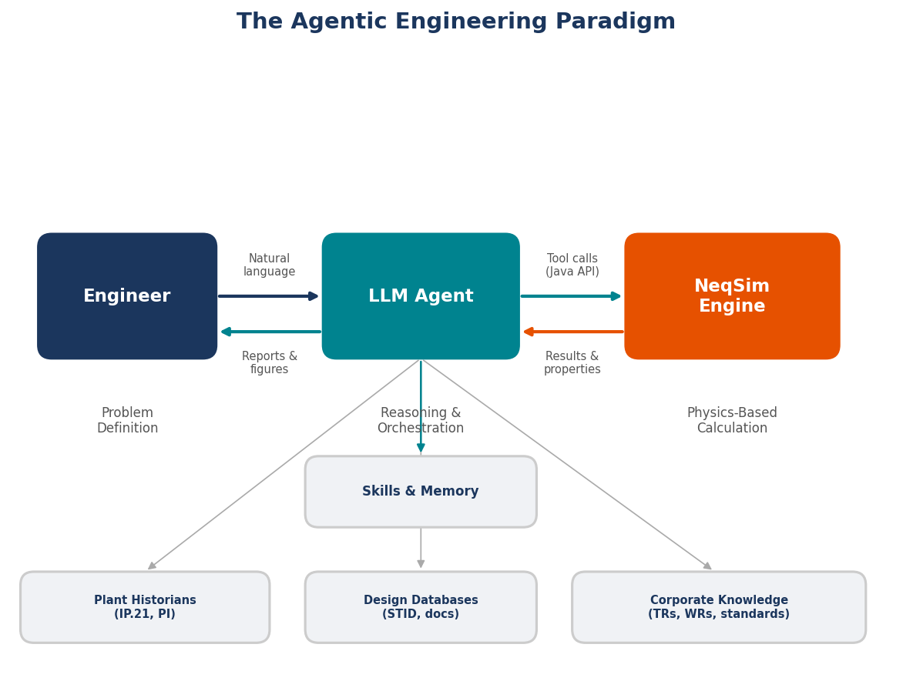
1.2 The AI Revolution and Its Limits
The emergence of large language models (LLMs) has transformed the landscape of what artificial intelligence can accomplish. The transformer architecture, introduced by Vaswani et al. [5], enabled a new class of models that learn rich representations of language from vast corpora of text. The scaling of these models — from hundreds of millions to hundreds of billions of parameters — produced capabilities that few researchers anticipated. GPT-3 demonstrated that a single model could perform translation, summarization, question answering, and even basic arithmetic without task-specific training [6]. GPT-4 and Claude showed emergent reasoning abilities — the capacity to decompose problems, follow multi-step instructions, and generate coherent long-form text [7].
These models are remarkably capable at understanding and generating natural language. They can explain thermodynamic concepts, describe the difference between SRK and Peng-Robinson equations of state, outline the steps of a Joule-Thomson expansion process, and discuss the physical meaning of fugacity. In many ways, they function as encyclopedic conversational partners with broad technical knowledge.
However, LLMs have a fundamental limitation that is critical for engineering applications: they cannot perform physics calculations. They generate plausible-sounding text, but they do not solve equations. The distinction is subtle but profound.
Consider a concrete example. Ask an LLM: "What is the density of methane at 100 bar and 25°C?" A well-trained model might respond with a number — perhaps 68 kg/m³ — and it might even be approximately correct, having memorized values from training data. But the model did not solve the Peng-Robinson equation of state to obtain that number. It performed pattern matching on its training corpus. If you change the question slightly — "What is the density of a mixture of 85 mol% methane and 15 mol% ethane at 100 bar and 25°C?" — the model has no reliable mechanism to compute the answer. It will still produce a number. That number may be plausible. It may even be close. But it was not calculated; it was confabulated.
This phenomenon — generating confident but incorrect answers — is known as hallucination, and it is particularly dangerous in engineering contexts. In creative writing, a plausible but invented fact is merely imprecise. In engineering, a plausible but wrong density can propagate through a pipe sizing calculation and result in an undersized relief valve.
The examples of hallucinated physics are numerous and instructive. LLMs asked to calculate compressibility factors will sometimes produce values greater than one for gases at low pressure (physically unreasonable). Asked to determine the dew point of a natural gas mixture, they may report a temperature that violates the Gibbs phase rule. Asked to size a separator, they may apply a Souders-Brown correlation with the wrong exponent. In each case, the output reads like engineering — it uses the right terminology, cites the right equations, follows the right structure — but the numerical content is unreliable.
The root cause is architectural. LLMs are next-token predictors trained on text. They do not have an internal cubic equation solver. They cannot iterate the Rachford-Rice equation [8]. They do not evaluate fugacity coefficients from mixing rules. These operations require numerical algorithms operating on thermodynamic models — precisely the machinery that a physics engine provides.
1.3 The Agentic Solution
The insight that motivates this book is simple: AI agents and physics engines have complementary strengths. The AI agent excels at understanding natural language intent, selecting appropriate methods, generating executable code, and interpreting results in context. The physics engine excels at solving the actual equations — cubic roots, phase stability, energy balances, transport properties — with numerical precision and thermodynamic consistency.
The combination is more capable than either component alone. An engineer can describe a problem in natural language: "Calculate the hydrate formation temperature for this gas composition at wellhead conditions." The AI agent parses the intent, identifies the required calculation (hydrate equilibrium), selects the appropriate thermodynamic model (CPA equation of state with hydrate model), writes the code to set up and execute the calculation in NeqSim, runs the code, and presents the result with physical interpretation. The physics engine ensures the answer is correct. The AI agent ensures the workflow is efficient.
We define agentic engineering as the practice of delegating engineering calculations and workflows to AI agents that autonomously plan and execute multi-step tasks using physics engines as their computational backend. This is distinct from several related concepts:
- AI-assisted search: Looking up information ("What EOS should I use for CO₂?"). The agent provides advice but does not compute.
- Code generation: Asking an AI to write a script ("Write a Python script to calculate density"). The human must review, run, and debug the script.
- Agentic engineering: The agent autonomously writes code, executes it, validates the results, handles errors, generates figures, and produces a report — with the human providing only the initial specification.
The key enabling mechanism is tool use [9]. Modern AI agents are not confined to generating text. They can invoke tools: read files, write files, execute terminal commands, run notebook cells, search codebases, and call APIs. Each tool gives the agent a new capability. A file-reading tool lets the agent inspect source code. A terminal tool lets the agent compile and run programs. A notebook tool lets the agent execute Python cells and observe outputs. Together, these tools transform the agent from a conversational assistant into an autonomous engineer.
The architecture can be represented as a feedback loop:
Engineer (natural language) → AI Agent → Code Generation → Physics Engine (NeqSim)
↑ ↓
←──── Result Interpretation ←────────
The AI agent operates in a cycle: reason about the task, select an action (write code, read a file, run a command), observe the result, reason again, and repeat until the task is complete. This is the ReAct pattern described by Yao et al. [10] — interleaving reasoning traces with actions. The agent does not simply generate a single response; it works iteratively, adapting its approach based on intermediate results.
1.4 Agents vs. Scripts vs. GUIs
To appreciate what agentic engineering offers, it is instructive to compare it with the alternatives that engineers currently use.
Commercial GUI simulators are the industry standard. They provide graphical flowsheet construction, extensive component databases, and validated thermodynamic models. Their strengths are well-established: validated results accepted by regulatory authorities, extensive training materials, and large user communities. Their weaknesses are equally well-known: high license costs ($30,000–$100,000+ per seat annually), closed-source calculations that cannot be inspected or modified, limited automation capabilities, and vendor lock-in that makes it difficult to switch platforms or integrate with other tools.
Custom scripts (Python, MATLAB, Excel/VBA) offer flexibility and low cost. Engineers write their own calculation routines, tailored to specific problems. The scripts are transparent, modifiable, and free to distribute. However, they require significant programming expertise to write and maintain. They are brittle — a small change in requirements can require substantial code restructuring. They rarely include comprehensive thermodynamic models; most engineers implement simplified correlations rather than rigorous equations of state. And they do not scale: a script written for one pipe sizing problem must be rewritten for a different scenario.
Agentic systems represent a third approach. The agent uses a rigorous physics engine (in our case, NeqSim) as its computational backend, gaining access to validated thermodynamic models, process equipment simulations, and standards calculations. But instead of requiring the user to interact through a GUI or write code manually, the agent accepts natural language instructions and generates the code itself.
| Feature | Commercial GUI | Custom Scripts | Agentic System |
|---|---|---|---|
| User interface | Graphical flowsheet | Code editor | Natural language |
| Setup time | Minutes to hours | Hours to days | Seconds to minutes |
| Thermodynamic rigor | High | Low to medium | High (physics engine) |
| Adaptability | Limited | High (manual) | High (automatic) |
| Cost per seat | $30K–$100K/year | Free | Free (open-source engine) |
| Automation | Difficult | Native | Native |
| Report generation | Manual export | Manual coding | Automatic |
| Error handling | User-driven | Try-except blocks | Self-healing |
| Knowledge transfer | Training courses | Code documentation | Embedded in instructions |
The adaptability row deserves emphasis. When a commercial simulator encounters a non-standard problem — an unusual fluid, a novel equipment configuration, a specific regulatory requirement — the user must work within the constraints of the GUI or resort to custom unit operations (if available). A custom script can handle anything the programmer can code, but at the cost of development time. An agentic system can adapt on the fly: if the standard approach fails, the agent can try alternative methods, consult different skills, or modify its strategy — all within a single task execution.
1.5 What Makes This Book Different
The literature on artificial intelligence in engineering is growing rapidly. Numerous papers describe the application of machine learning to fluid property prediction, surrogate modeling, process optimization, and fault detection. These are valuable contributions. However, they typically focus on one narrow application — training a neural network to predict viscosity, for example — and they treat the AI model as a black-box function approximator.
This book takes a fundamentally different approach. We are not training AI models to replace physics. We are coupling AI reasoning with physics engines to automate engineering workflows. The AI agent does not predict density — it writes code that calls a rigorous equation of state to calculate density. The AI agent does not approximate flash calculations — it invokes Michelsen's algorithm through a validated thermodynamic library.
Moreover, this is not a theoretical treatise. The system described in this book is operational. It has been used to solve over forty real engineering tasks for assets on the Norwegian Continental Shelf. These tasks range from simple property lookups (completed in seconds) to comprehensive field development studies with uncertainty analysis, risk evaluation, and professional engineering reports (completed in hours rather than weeks). Every example in this book comes from actual task execution. Every code sample has been run. Every result has been validated.
The system is built on NeqSim [11], an open-source thermodynamics and process simulation library developed at the Norwegian University of Science and Technology (NTNU) in collaboration with Equinor and other industry partners. NeqSim provides the physics. AI agents — specifically, large language models configured with specialized instructions and tools — provide the reasoning and automation. The combination, which we call "agentic engineering," is the subject of this book.
1.6 A Preview of What Is Possible
To make the concept concrete, consider three examples at increasing levels of complexity.
Example 1: Property lookup (seconds)
An engineer asks: "What is the Joule-Thomson coefficient of natural gas at 150 bar and 35°C? The gas is 85% methane, 8% ethane, 4% propane, 2% CO₂, 1% nitrogen."
The agent writes five lines of Python code: create a fluid with the given composition using the SRK equation of state, run a TP flash at the specified conditions, call initProperties(), and read the Joule-Thomson coefficient. Total execution time: under two seconds. The result includes the numerical value, the units, and a brief physical interpretation ("The positive JT coefficient of 0.42 K/bar indicates this gas will cool upon throttling, which is relevant for Joule-Thomson valve design and hydrate risk assessment").
In the traditional workflow, the engineer would open a simulator, configure the fluid, run the flash, and read the value from a results table. Time: 5–15 minutes. In the agentic workflow: 10 seconds including the time to type the question.
Example 2: Process simulation notebook (minutes)
An engineer provides a design basis: "Model a two-stage compression system for export gas. Inlet conditions: 30 bar, 25°C, 500,000 Sm³/day of dry gas. Target: 200 bar export pressure. Include intercooling to 40°C and calculate power consumption."
The agent creates a Jupyter notebook with the following steps: (1) define the fluid and set the feed conditions, (2) build a ProcessSystem with a first-stage compressor, aftercooler, second-stage compressor, and final cooler, (3) run the simulation, (4) extract power consumption, discharge temperatures, and polytropic efficiencies, (5) generate pressure-temperature and power plots, and (6) write a summary with key results. The notebook is executed cell by cell, with the agent verifying each cell's output before proceeding. Total time: 3–5 minutes.
Example 3: Full field development study (hours)
A team requests: "Evaluate the economic viability of a subsea tieback for a gas condensate discovery. Reservoir conditions: 350 bar, 95°C. Distance to host platform: 25 km. Water depth: 350 m. Estimated GIP: 8 GSm³. Provide NPV analysis with uncertainty."
The agent executes a complete task-solving workflow: creates a task folder, writes a technical specification, builds a fluid model from the given composition, runs production profile simulations using decline curve analysis, models the pipeline and subsea system, estimates CAPEX and OPEX using parametric cost models, calculates NPV under the Norwegian petroleum tax regime, runs Monte Carlo simulations for uncertainty analysis (varying GIP, gas price, CAPEX multiplier), produces a tornado diagram for sensitivity ranking, creates a risk register with ISO 31000 risk matrix, and generates a professional engineering report in both Word and HTML formats with numbered figures, tables, and references. Total time: 1–3 hours, depending on the number of Monte Carlo iterations. The equivalent manual effort: 2–4 weeks for a team of engineers.
1.7 Book Structure Overview
This book is organized in four parts.
Part I: Foundations (Chapters 1–3) establishes the conceptual and technical groundwork. Chapter 1 (this chapter) introduces the motivation and concept of agentic engineering. Chapter 2 describes the NeqSim physics engine — its thermodynamic models, flash algorithms, process equipment, and Python interface. Chapter 3 explains the AI agent architecture: tools, skills, instructions, and the four-layer design (agents, skills, physics engine, and data).
Part II: The Agentic Platform (Chapters 4–7) presents the infrastructure that makes agentic engineering practical. Chapter 4 describes the multi-agent system — over sixteen specialist agents and the router that composes them into workflows. Chapter 5 covers the skills library: curated knowledge packages that encode domain expertise, code patterns, and error recovery strategies. Chapter 6 presents the task-solving workflow that structures how agents approach engineering problems, from scope and research through analysis to professional reports. Chapter 7 introduces the MCP server — a governed interface that wraps NeqSim calculations in standardised, validated, and auditable tool definitions.
Part III: Worked Examples (Chapters 8–10) demonstrates agentic engineering solving progressively complex problems. Chapter 8 covers thermodynamic property calculations and PVT analysis — from simple lookups to multi-component phase envelopes and gas quality compliance. Chapter 9 addresses process simulation and equipment design — compressors, heat exchangers, separators, and complete process trains. Chapter 10 treats flow assurance and pipeline design: hydrate prediction, wax management, corrosion assessment, and pipeline hydraulics.
Part IV: Industrial Applications and Future (Chapters 11–12) connects the technical framework to real-world practice. Chapter 11 presents case studies from the Norwegian Continental Shelf, documenting how the agentic system has been applied to actual engineering problems across thermodynamics, process simulation, flow assurance, and field development. Chapter 12 looks forward — examining multi-model orchestration, web-based interfaces, organizational adoption, and the broader implications for engineering education and practice.
Each chapter includes worked examples with complete code, exercises for the reader, and references to the NeqSim source code and documentation. The accompanying repository contains all notebooks, data files, and agent configurations used throughout the book.
The goal is not to replace engineering judgment. It is to amplify it — to free engineers from mechanical calculation workflows so they can focus on what humans do best: understanding context, making decisions under uncertainty, and exercising professional judgment. The physics engine ensures the answers are right. The AI agent ensures the work gets done. Together, they represent a new paradigm for engineering practice.
Summary
Key points from this chapter:
- Engineers spend a disproportionate amount of time on mechanical workflow steps (data entry, tool manipulation, report formatting) rather than on engineering judgment
- Large language models are powerful at understanding intent and generating code, but they cannot reliably perform physics calculations — they hallucinate numerical results
- Agentic engineering couples AI reasoning with physics engines: the agent writes code, the engine computes results, and the agent interprets and presents them
- This approach is fundamentally different from both commercial GUI simulators and custom scripts, offering the rigor of validated thermodynamic models with the adaptability of natural language interaction
- The system described in this book is operational and has been used for over forty real engineering tasks on the Norwegian Continental Shelf
Exercises
- Exercise 1.1: Identify three engineering tasks from your own practice that follow a well-defined procedure and could potentially be delegated to an AI agent. For each, describe the inputs, the calculation steps, and the expected outputs.
- Exercise 1.2: Ask a large language model (ChatGPT, Claude, or similar) to calculate the density of a methane-ethane mixture (70/30 mol%) at 80 bar and 15°C. Compare the answer with a value from NIST WebBook or a commercial simulator. Discuss the reliability of the LLM's answer.
- Exercise 1.3: Using the comparison table in Section 1.4, evaluate which approach (commercial GUI, custom script, or agentic system) would be most appropriate for (a) a one-time relief valve sizing calculation, (b) a recurring weekly production optimization, and (c) a full FEED study for a new platform.
2 The NeqSim Physics Engine
Learning Objectives
After reading this chapter, the reader will be able to:
- Describe the architecture and capabilities of NeqSim as an open-source thermodynamic and process simulation library
- Select the appropriate equation of state for a given application (natural gas, associating fluids, custody transfer)
- Perform flash calculations and correctly initialize properties for downstream use
- Build process flowsheets using NeqSim's equipment models and ProcessSystem framework
- Access NeqSim's Java classes from Python using the jneqsim gateway
2.1 Overview of NeqSim
NeqSim — the Non-Equilibrium Simulator — is an open-source Java library for thermodynamic calculations and process simulation [11]. Originally developed at the Norwegian University of Science and Technology (NTNU) by Even Solbraa and colleagues [12], it has been continuously refined over two decades in collaboration with Equinor and other partners in the Norwegian petroleum industry. The name reflects its origins in non-equilibrium thermodynamics, though the library has grown far beyond that original scope to encompass a comprehensive suite of equilibrium thermodynamics, transport properties, process equipment models, and engineering standards calculations.
At its core, NeqSim provides three fundamental capabilities. First, it implements multiple equations of state for calculating thermodynamic properties of fluid mixtures — density, enthalpy, entropy, fugacity, heat capacity, speed of sound, and Joule-Thomson coefficients. Second, it provides flash algorithms that determine phase equilibrium at specified conditions — how a mixture splits into vapor, liquid, and aqueous phases. Third, it offers process equipment models — separators, compressors, heat exchangers, valves, pipes, distillation columns, and more — that can be assembled into process flowsheets.
The library contains thermodynamic data for over 100 chemical components, ranging from light gases (hydrogen, nitrogen, CO₂, H₂S) through hydrocarbons (methane to C20+ pseudo-components) to polar molecules (water, methanol, MEG) and ions for electrolyte systems. It supports petroleum fluid characterization, including plus-fraction splitting and grouping using standard methods.
NeqSim is written in Java, which provides several advantages for an engineering library: strong typing catches many errors at compile time, the JVM ensures consistent numerical behavior across platforms, and the extensive Java ecosystem provides robust mathematics libraries (EJML, Apache Commons Math, JAMA). The library is distributed as a single JAR file that can be embedded in any Java application, called from Python through jpype, or accessed through a Model Context Protocol (MCP) server for integration with AI agents.
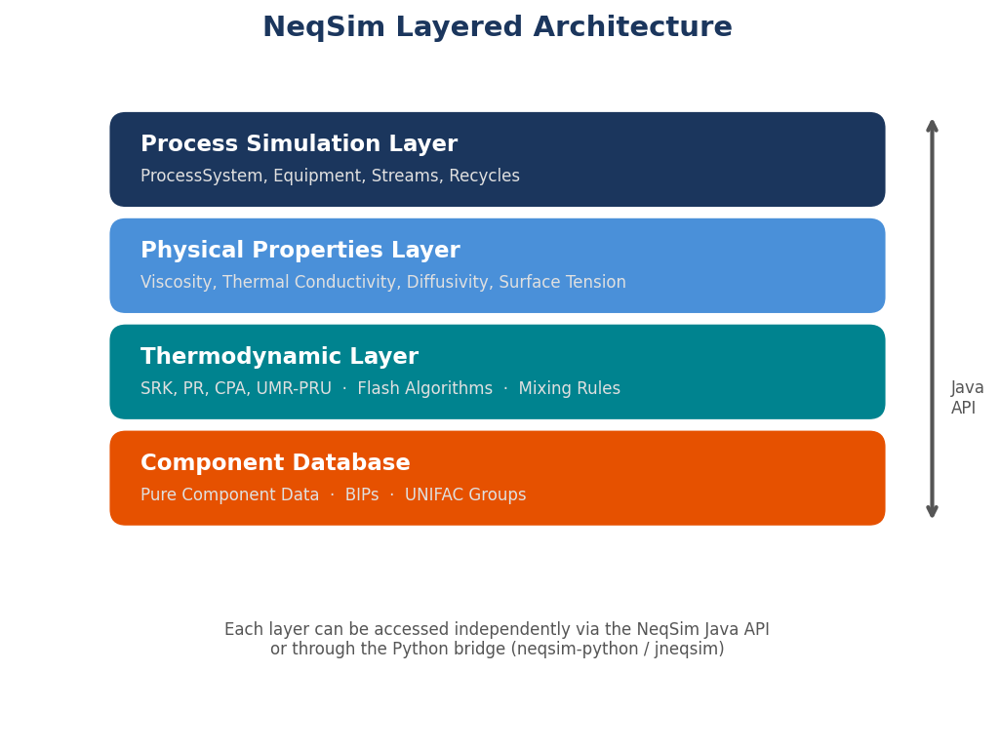
Why NeqSim for Agentic Engineering
Several characteristics make NeqSim particularly well-suited as the physics backend for AI agents, beyond its technical capabilities:
Open source. The entire source code is available on GitHub. An AI agent can read the source code to understand method signatures, parameter types, and return values. It can search for examples in the test suite. It can examine how a particular equation is implemented. This transparency is impossible with closed-source commercial simulators.
Programmatic API. NeqSim is a library, not a GUI application. Every operation — creating a fluid, running a flash, building a process — is accomplished through method calls. This is natural for an AI agent that generates code. There is no need to script GUI interactions or navigate dialog boxes.
Comprehensive test suite. The repository contains thousands of JUnit tests that serve as executable examples. When an agent needs to understand how to use a particular class, it can read the corresponding test for correct usage patterns.
Self-documenting. JavaDoc comments, skill files, and extensive markdown documentation provide the agent with structured knowledge about correct API usage, physical constraints, and common pitfalls.
2.2 Equations of State
The equation of state (EOS) is the mathematical foundation of all thermodynamic calculations. It relates pressure, volume (or density), and temperature for a fluid mixture, and from it, all other thermodynamic properties can be derived through fundamental thermodynamic relations. NeqSim implements several equations of state, each suited to different applications.
2.2.1 The Soave-Redlich-Kwong (SRK) Equation
The SRK equation of state [1] is one of the most widely used cubic equations in the petroleum industry. It takes the form:
$$P = \frac{RT}{v - b} - \frac{a(T)}{v(v + b)}$$
where $P$ is pressure, $T$ is temperature, $v$ is molar volume, $R$ is the gas constant, and $a(T)$ and $b$ are mixture parameters calculated from pure-component critical properties and binary interaction parameters. The temperature dependence of the attractive parameter $a(T)$ is given by the Soave alpha function, which uses the acentric factor $\omega$ to correlate the vapor pressure curve.
In NeqSim, an SRK system is created as:
from neqsim import jneqsim
fluid = jneqsim.thermo.system.SystemSrkEos(273.15 + 25.0, 60.0)
fluid.addComponent("methane", 0.85)
fluid.addComponent("ethane", 0.10)
fluid.addComponent("propane", 0.05)
fluid.setMixingRule("classic")
The SRK equation is a reliable general-purpose choice for hydrocarbon systems. It performs well for vapor-liquid equilibrium of non-polar mixtures, gas phase properties, and conditions away from the critical point. Its primary limitation is the prediction of liquid densities, which can deviate by 5–15% from experimental values. Volume translation methods (Peneloux correction) can improve liquid density prediction, and NeqSim supports these corrections.
2.2.2 The Peng-Robinson (PR) Equation
The Peng-Robinson equation [2] was developed specifically to improve liquid density predictions:
$$P = \frac{RT}{v - b} - \frac{a(T)}{v(v + b) + b(v - b)}$$
The different denominator in the attractive term gives the PR equation a slightly different molar volume dependence that generally yields better liquid density predictions than SRK, particularly for heavier hydrocarbons. Both equations predict vapor-liquid equilibrium with comparable accuracy.
In NeqSim: jneqsim.thermo.system.SystemPrEos(T, P).
2.2.3 The CPA Equation (Cubic-Plus-Association)
The CPA equation of state [13] extends the SRK equation with an association term that accounts for hydrogen bonding between polar molecules. This is essential for systems containing water, methanol, monoethylene glycol (MEG), or other associating species. The standard cubic equations of state perform poorly for these systems because hydrogen bonding fundamentally alters the thermodynamic behavior — for example, the anomalous behavior of water (density maximum at 4°C, high heat capacity, strong deviation from ideal mixing with hydrocarbons) cannot be captured by a simple cubic equation.
In NeqSim, the CPA implementation uses the variant developed at Statoil (now Equinor): jneqsim.thermo.system.SystemSrkCPAstatoil(T, P). This is the recommended equation of state for any system containing water and hydrocarbons — which encompasses most production systems in the oil and gas industry.
CPA is essential for:
- Hydrate equilibrium calculations (requires accurate water fugacity)
- MEG/methanol injection calculations (inhibitor dosing)
- Water content of gas (water dew point)
- Three-phase (gas-oil-water) separation
- CO₂ systems with water (CCS applications)
2.2.4 The GERG-2008 Equation
The GERG-2008 equation [14] is a multi-parameter equation of state developed specifically for natural gas applications. Unlike cubic equations, which are based on a simple two-parameter model, GERG-2008 uses an empirical Helmholtz free energy formulation with hundreds of parameters fitted to experimental data for 21 natural gas components and their binary mixtures. It represents the state of the art for custody transfer calculations and is the basis for ISO 20765.
In NeqSim: jneqsim.thermo.system.SystemGERG2008(T, P).
GERG-2008 provides the highest accuracy for natural gas properties — density uncertainties of 0.1% or better in the gas phase, compared to 1–3% for cubic equations. However, it is limited to the 21 components in the GERG model and does not support heavy hydrocarbons, polar molecules (except water at limited conditions), or association. It is the correct choice when accuracy is paramount and the fluid falls within its composition range.
2.2.5 Selecting an Equation of State
The choice of equation of state is one of the most consequential decisions in a thermodynamic calculation. An incorrect choice can introduce systematic errors that propagate through all downstream results. The following table provides guidance:
| Application | Recommended EOS | Rationale |
|---|---|---|
| Dry natural gas (processing, transport) | SRK or PR | Well-characterized, fast, adequate accuracy |
| Gas with water (hydrates, dew point) | CPA | Association term required for water |
| MEG/methanol injection | CPA | Polar + associating system |
| Custody transfer metering | GERG-2008 | Highest accuracy for gas density |
| CO₂ capture and transport | CPA | CO₂-water-amine interactions |
| Black oil / condensate | SRK or PR with characterization | Plus-fraction handling needed |
| Hydrogen systems | SRK or PR | Limited experimental data; CPA for H₂-water |
| Electrolyte / brine | Electrolyte-CPA | Ion interactions needed |
An important principle: the equation of state must be selected before any calculations are performed, and the choice should be justified based on the fluid system and the required accuracy. AI agents are instructed to consider this selection as a mandatory first step.
2.3 Flash Calculations
Flash calculations are the computational heart of process simulation. A flash calculation determines how a mixture distributes itself among phases (vapor, liquid, second liquid, aqueous) at specified thermodynamic conditions. The result includes the amounts and compositions of each phase, along with all associated thermodynamic properties.
2.3.1 Types of Flash Calculations
NeqSim supports multiple flash specifications, corresponding to different pairs of fixed thermodynamic variables:
- TP flash (temperature-pressure): The most common specification. Given T and P, determine the phase fractions and compositions. Used whenever both T and P are known — inlet conditions, equipment at specified conditions.
- PH flash (pressure-enthalpy): Given P and total enthalpy, determine T and phase state. Used for adiabatic processes — valves, compressors, flash drums where heat exchange is known.
- PS flash (pressure-entropy): Given P and total entropy, determine T and phase state. Used for isentropic processes — ideal compressor work, turbine calculations.
- Dew point calculations: Find the temperature (at given P) or pressure (at given T) where the first liquid drop forms.
- Bubble point calculations: Find the temperature (at given P) or pressure (at given T) where the first vapor bubble forms.
2.3.2 The Algorithm
NeqSim implements the Michelsen stability analysis and successive substitution algorithm [3, 4], which is the industry standard for flash calculations. The algorithm proceeds in two stages:
Stage 1 — Stability analysis. Given a single-phase feed at the specified conditions, determine whether the phase is thermodynamically stable. This is done by searching for a trial phase composition that would lower the total Gibbs energy of the system. If such a composition is found, the single phase is unstable and will split into two (or more) phases.
Stage 2 — Phase split calculation. If the system is unstable, solve the Rachford-Rice equation [8] to determine the phase fractions and compositions at equilibrium. This involves iterating the equilibrium ratios (K-values) until the fugacity of each component is equal in all phases:
$$f_i^V = f_i^L \quad \text{for all components } i$$
where $f_i^V$ and $f_i^L$ are the fugacities of component $i$ in the vapor and liquid phases, respectively. The fugacities are calculated from the equation of state.
2.3.3 The Critical Importance of initProperties()
A critical aspect of using NeqSim — and one that has been the source of countless errors in both manual and agent-generated code — is the initialization of physical properties after a flash calculation. The flash algorithm determines phase equilibrium (compositions, phase fractions, fugacities) but does not automatically compute transport properties (viscosity, thermal conductivity) or certain derived thermodynamic properties (density in convenient units, heat capacities at the phase level).
After any flash calculation, the following call is mandatory:
ops = jneqsim.thermodynamicoperations.ThermodynamicOperations(fluid)
ops.TPflash()
fluid.initProperties() # MANDATORY — initializes both thermo AND transport properties
Without initProperties(), calls to getViscosity(), getThermalConductivity(), and getDensity() may return zero. This is not an error in NeqSim — it is a deliberate design choice that separates the fast flash calculation (needed millions of times in process simulation inner loops) from the more expensive property initialization (needed only when properties are to be reported). But for the end user, including AI agents, forgetting this call is the single most common source of incorrect results.
The NeqSim agent instructions and skills contain explicit reminders about this requirement. The neqsim-api-patterns skill includes initProperties() in every flash example. The neqsim-troubleshooting skill lists "zero viscosity" as the first diagnostic to check. This is a concrete example of how domain-specific knowledge encoded in agent instructions prevents systematic errors.
2.3.4 Reading Results After Flash
Once initProperties() has been called, the full suite of fluid properties is available:
# Phase properties
density_gas = fluid.getPhase("gas").getDensity("kg/m3")
density_oil = fluid.getPhase("oil").getDensity("kg/m3")
viscosity = fluid.getPhase("gas").getViscosity("kg/msec")
thermal_cond = fluid.getPhase("gas").getThermalConductivity("W/mK")
cp = fluid.getPhase("gas").getCp("J/molK")
# System-level properties
z_factor = fluid.getPhase("gas").getZ()
molecular_weight = fluid.getMolarMass("kg/mol")
enthalpy = fluid.getEnthalpy("J")
# Component properties within a phase
y_methane = fluid.getPhase("gas").getComponent("methane").getx() # mole fraction
NeqSim uses a consistent unit system throughout its API. Temperatures are in Kelvin internally (the user provides offsets like 273.15 + 25.0), pressures are in bara, and flows can be specified in various units using string parameters ("kg/hr", "m3/hr", "MSm3/day").
2.4 Process Equipment
NeqSim models over 40 types of process equipment, organized under the neqsim.process.equipment package. Each equipment type implements the ProcessEquipmentInterface, which provides a consistent API for connecting streams, running calculations, and reading results. Equipment is assembled into flowsheets using the ProcessSystem class.
2.4.1 Streams
The Stream class represents a material flow — a fluid at specified conditions and flow rate. Streams are the connections between equipment:
Stream = jneqsim.process.equipment.stream.Stream
feed = Stream("feed gas", fluid)
feed.setFlowRate(100000.0, "kg/hr")
feed.setTemperature(25.0, "C")
feed.setPressure(60.0, "bara")
2.4.2 Separators
Separators model the phase separation of multiphase mixtures. NeqSim supports two-phase (gas-liquid) and three-phase (gas-oil-water) separators:
Separator = jneqsim.process.equipment.separator.Separator
ThreePhaseSeparator = jneqsim.process.equipment.separator.ThreePhaseSeparator
hp_sep = Separator("HP separator", feed)
# After running, access outlet streams:
# hp_sep.getGasOutStream()
# hp_sep.getLiquidOutStream()
2.4.3 Compressors
Compressors model the compression of gas streams. NeqSim calculates polytrophic head, power consumption, discharge temperature, and efficiency:
Compressor = jneqsim.process.equipment.compressor.Compressor
comp = Compressor("first stage", hp_sep.getGasOutStream())
comp.setOutletPressure(120.0, "bara")
comp.setPolytropicEfficiency(0.78)
2.4.4 Heat Exchangers
Heat exchangers model heat transfer between two streams. NeqSim supports specification by outlet temperature, duty, or UA value:
Heater = jneqsim.process.equipment.heatexchanger.Heater
cooler = Heater("intercooler", comp.getOutletStream())
cooler.setOutTemperature(273.15 + 40.0)
2.4.5 Valves and Pipes
Valves model pressure reduction (Joule-Thomson expansion), while pipes model pressure drop due to friction:
ThrottlingValve = jneqsim.process.equipment.valve.ThrottlingValve
PipeBeggsAndBrills = jneqsim.process.equipment.pipeline.PipeBeggsAndBrills
valve = ThrottlingValve("JT valve", feed)
valve.setOutletPressure(30.0, "bara")
pipe = PipeBeggsAndBrills("export pipeline", feed)
pipe.setPipeWallRoughness(5e-5)
pipe.setLength(25000.0, "m")
pipe.setDiameter(0.3, "m")
2.4.6 Building a Process Flowsheet
The ProcessSystem class is the container that assembles individual equipment into a flowsheet. Equipment is added in the order of flow, and the system handles stream connections:
ProcessSystem = jneqsim.process.processmodel.ProcessSystem
process = ProcessSystem()
process.add(feed)
process.add(hp_sep)
process.add(comp)
process.add(cooler)
process.run()
# Read results
power = comp.getPower("kW")
discharge_temp = comp.getOutletStream().getTemperature("C")
The ProcessSystem enforces unique equipment names, handles recycle convergence through iterative calculation, and provides automation interfaces for variable access. For large plants with multiple process areas, multiple ProcessSystem objects can be assembled into a ProcessModel.
2.5 Standards and Gas Quality
One of NeqSim's distinguishing features is its built-in support for engineering standards. The library implements calculations defined by international standards organizations, enabling direct computation of standardized properties without external tools or manual lookup.
Supported standards include:
| Standard | Description | NeqSim Implementation |
|---|---|---|
| ISO 6976 [15] | Natural gas — Calorific value, density, and Wobbe index | Standard_ISO6976 |
| ISO 20765 | Natural gas — Thermodynamic properties (GERG-2008) | Via GERG-2008 EOS |
| AGA 8 | Compressibility factor for natural gas | Standard_AGA8 |
| GPA 2145 | Physical constants for hydrocarbons | Component database |
| EN ISO 13443 | Standard reference conditions | Built into unit conversion |
| ISO 18453 | Natural gas — Correlation for water content | Moisture calculation |
| ASTM D1945 | Standard practice for analysis of natural gas by GC | Composition handling |
These standards are not merely informational — they are executable. An agent can calculate an ISO 6976 superior calorific value with a single method call:
Standard_ISO6976 = jneqsim.standards.gasquality.Standard_ISO6976
iso = Standard_ISO6976(fluid)
iso.calculate()
gcv = iso.getValue("SuperiorCalorificValue", "MJ/Sm3")
wobbe = iso.getValue("SuperiorWobbeIndex", "MJ/Sm3")
This capability is particularly valuable for agentic workflows because gas quality calculations are frequently requested — they are a core part of custody transfer, tariff calculations, and pipeline gas specifications. Having them available as direct API calls means the agent can compute certified values in seconds.
2.6 The Python Gateway
While NeqSim is written in Java, the primary interface for agentic workflows is Python, accessed through the jneqsim module. This module uses jpype to bridge the Java Virtual Machine (JVM) from Python, providing direct access to all Java classes as if they were Python objects.
The standard import pattern is:
from neqsim import jneqsim
# All Java classes are accessible via their full package path
SystemSrkEos = jneqsim.thermo.system.SystemSrkEos
ThermodynamicOperations = jneqsim.thermodynamicoperations.ThermodynamicOperations
Stream = jneqsim.process.equipment.stream.Stream
ProcessSystem = jneqsim.process.processmodel.ProcessSystem
The jpype bridge handles type conversion between Python and Java automatically. Python floats become Java doubles, Python strings become Java Strings, and Java arrays can be accessed as Python sequences. Method overloading is resolved based on argument types.
This architecture means that Jupyter notebooks — the primary output format for agentic engineering tasks — can access the full power of NeqSim without any functionality restrictions. Every Java class, every method, every calculation is available. The notebooks serve as both computational scripts and documentation, combining code, results, figures, and interpretation in a single reproducible artifact.
2.7 Why Open Source Matters for Agentic Systems
The open-source nature of NeqSim is not merely a licensing convenience — it is an architectural necessity for effective agentic engineering. This claim requires justification, as commercial simulators are also powerful and well-validated.
The fundamental issue is observability. An AI agent learns to use a tool by observing its behavior — reading documentation, examining examples, inspecting source code, and running tests. With an open-source library, all of these learning modalities are available. The agent can:
- Read the source code to understand exactly what a method does, what parameters it expects, and what it returns.
- Search the test suite for working examples of how to use a class correctly. The tests serve as the ground truth for API usage.
- Examine the JavaDoc for documented behavior, parameter constraints, and return value descriptions.
- Read the skill files — curated knowledge packages that encode correct patterns, common pitfalls, and recovery strategies.
- Inspect the git history to understand how the API has evolved and what changes have been made recently.
With a closed-source simulator, the agent has access to documentation (if published) and possibly examples. But it cannot read the source code to disambiguate unclear documentation, it cannot search the test suite for verified usage patterns, and it cannot understand the internal implementation to diagnose unexpected behavior.
This observability advantage compounds over time. As the agent encounters new problems and develops new solutions, those solutions can be encoded in skill files, added to the test suite, and documented — all within the same repository. The knowledge base grows organically. The more the system is used, the more capable it becomes. This virtuous cycle is only possible when the physics engine is open and transparent.
The practical implication is significant. As documented throughout this book and in the NeqSim reference materials [16, 17], the combination of a rigorous open-source thermodynamic library with AI agents that can read, understand, and use that library creates a system that is both more capable and more trustworthy than either component alone.
Summary
Key points from this chapter:
- NeqSim is an open-source Java library providing rigorous thermodynamic calculations, flash algorithms, process equipment models, and engineering standards
- The choice of equation of state (SRK, PR, CPA, GERG-2008) must be matched to the fluid system — CPA for water-containing systems, GERG-2008 for custody transfer accuracy
- Flash calculations determine phase equilibrium;
initProperties()must always be called after a flash before reading transport properties - Process equipment is assembled into flowsheets using
ProcessSystem, which handles stream connections and recycle convergence - Built-in standards (ISO 6976, AGA 8, etc.) enable direct calculation of standardized gas quality parameters
- The Python gateway (
jneqsim) provides full access to all Java classes from Jupyter notebooks - Open-source transparency is an architectural necessity for agentic systems — agents learn by reading source code, tests, and documentation
Exercises
- Exercise 2.1: Create a NeqSim fluid representing a North Sea gas condensate (methane 0.72, ethane 0.08, propane 0.05, i-butane 0.02, n-butane 0.03, i-pentane 0.01, n-pentane 0.01, n-hexane 0.01, CO₂ 0.03, nitrogen 0.02, water 0.02). Perform a TP flash at 80 bar and 30°C. Report the gas and liquid phase fractions and the density of each phase.
- Exercise 2.2: For the fluid in Exercise 2.1, calculate the cricondenbar and cricondentherm by running dew point calculations over a range of pressures and temperatures. Plot the phase envelope.
- Exercise 2.3: Build a two-stage separation system (HP separator at 60 bar, LP separator at 5 bar) for the fluid in Exercise 2.1 at a flow rate of 50,000 kg/hr. Report the gas and oil production rates from each separator.
- Exercise 2.4: Compare the gas density predicted by SRK, PR, and GERG-2008 for pure methane at 100 bar and temperatures from -20°C to 100°C. Plot the results and discuss which equation gives the most accurate predictions and why.
3 AI Agents, Skills, and Tool-Use Architecture
Learning Objectives
After reading this chapter, the reader will be able to:
- Trace the evolution from simple chatbots to autonomous tool-using agents
- Explain the ReAct (Reasoning + Acting) paradigm and its application to engineering tasks
- Describe the four-layer architecture of agents, skills, physics engine, and data
- Understand how agent instructions and skill files encode domain-specific engineering knowledge
- Identify the guardrails and safety mechanisms that prevent common errors in agent-generated code
3.1 From Chatbots to Agents
The history of conversational AI can be understood as a progression through three distinct paradigms, each representing a qualitative leap in capability.
Paradigm 1: Pattern-matching chatbots. The earliest conversational systems, from ELIZA (1966) to the rule-based customer service bots of the 2010s, operated by matching user inputs against predefined patterns and returning scripted responses. They had no understanding of language, no memory of context beyond simple slot-filling, and no ability to perform any action beyond generating text from templates. Their utility was limited to narrow, well-defined domains where the space of possible user inputs could be enumerated in advance.
Paradigm 2: Neural language models. The transformer architecture [5] and the subsequent scaling of language models [6] produced systems with a qualitatively different relationship to language. Models like GPT-3, GPT-4, and Claude do not match patterns against templates — they generate text by predicting the most likely continuation of a sequence, conditioned on a vast corpus of training data. This gives them remarkable abilities: they can summarize documents, translate between languages, answer questions across many domains, write code in dozens of programming languages, and engage in nuanced reasoning about complex topics [7].
However, these models remain fundamentally text generators. They can describe how to solve a differential equation but cannot actually solve one. They can explain the steps of a flash calculation but cannot execute the iteration. They can write a Python script but cannot run it. Their world model is linguistic, not physical. They know what correct answers look like but cannot reliably produce correct answers for quantitative problems.
Paradigm 3: Tool-using agents. The critical innovation that transforms a language model into an agent is tool use [9]. Instead of confining the model to text generation, it is given access to external tools — functions that it can invoke to perform actions in the world. A file-reading tool lets it inspect documents. A terminal tool lets it execute commands. A code-execution tool lets it run programs and observe outputs. A web-search tool lets it access current information.
This changes the fundamental nature of the interaction. The model is no longer just answering questions — it is doing work. It reasons about what needs to be done, selects and invokes the appropriate tool, observes the result, and reasons again about the next step. This iterative reason-act-observe loop is the essence of agentic behavior.
Wooldridge [18] defined an agent as a computer system that is situated in some environment and that is capable of autonomous action in that environment in order to meet its design objectives. By this definition, a tool-using language model operating in a code workspace — reading files, writing code, executing programs, observing results — is an agent. Its environment is the workspace. Its tools are its means of action. Its design objective is to solve the engineering task specified by the user.
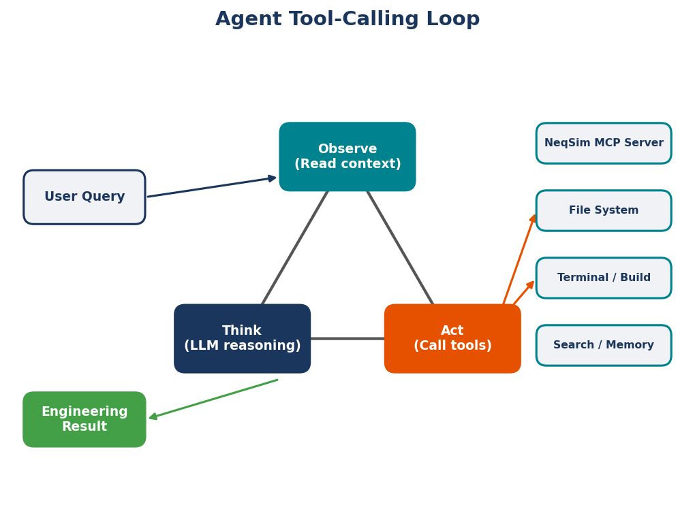
3.1.1 The ReAct Pattern
The formalization of this iterative behavior is the ReAct framework (Reasoning + Acting) introduced by Yao et al. [10]. In the ReAct paradigm, the agent alternates between two types of steps:
Reasoning traces: The agent thinks about the current state of the task, what has been accomplished, what remains to be done, and what action to take next. These are internal deliberations, often expressed as natural language text.
Actions: The agent invokes a tool — reads a file, searches the codebase, writes code, runs a terminal command, executes a notebook cell. Each action produces an observation — the output of the tool — which feeds into the next reasoning step.
For example, consider an agent tasked with calculating the hydrate formation temperature of a gas mixture:
- Reasoning: "The user wants the hydrate formation temperature. I need to create a fluid with the given composition, use the CPA equation of state (required for water-containing systems), and run a hydrate equilibrium calculation."
- Action: Write Python code to create the fluid and set up the hydrate calculation.
- Observation: The code cell executes successfully. The hydrate temperature is 18.3°C at 100 bar.
- Reasoning: "The calculation succeeded. I should verify this is physically reasonable — hydrate temperatures for natural gas at 100 bar are typically in the 15–25°C range. This looks correct. I should present the result with context."
- Action: Write a summary cell explaining the result and its implications for flow assurance.
This interleaving of thought and action is fundamentally different from a single-shot response. The agent checks its work. It adapts when something unexpected happens. If the flash calculation fails to converge, the agent can reason about why (wrong initial estimates, temperature too close to critical point) and try a different approach. This self-correcting behavior is what makes agents robust enough for real engineering work.
3.1.2 Chain-of-Thought Prompting
A closely related technique is chain-of-thought prompting [19], which encourages the model to decompose complex problems into explicit intermediate steps. Rather than jumping directly from question to answer, the model is prompted to show its reasoning: "Let me think step by step."
For engineering problems, this decomposition is natural and beneficial. A process design task naturally decomposes into: (1) define the fluid, (2) set operating conditions, (3) configure equipment, (4) run simulation, (5) extract results, (6) validate against specifications. By making these steps explicit, the agent's reasoning becomes transparent and auditable — the engineer can see why the agent made each decision.
3.2 The Tool-Use Paradigm
The tools available to an agent define its capabilities. A model without tools can only generate text. A model with a file-reading tool can inspect codebases. A model with a terminal tool can compile and run programs. A model with a notebook tool can create and execute computational notebooks.
In the NeqSim agentic engineering system, the agent has access to a comprehensive set of tools:
File operations. The agent can read files (read_file), search for files by name pattern (file_search), search for text within files (grep_search), list directory contents (list_dir), create new files (create_file), and edit existing files (replace_string_in_file). These tools allow the agent to navigate the NeqSim repository, read source code, examine test files, and understand the API.
Terminal execution. The agent can run shell commands (run_in_terminal), including compiling Java code, running Maven builds, executing Python scripts, and invoking Git commands. This is how the agent builds the NeqSim JAR, runs test suites, and manages version control.
Notebook operations. The agent can create notebook cells (edit_notebook_file), execute them (run_notebook_cell), and read their outputs (read_notebook_cell_output). This is the primary mechanism for running NeqSim calculations — the agent writes Python code in notebook cells, executes them against the JVM-backed NeqSim library, and observes the results.
Search and discovery. The agent can perform semantic search across the codebase (semantic_search), find code usages (vscode_listCodeUsages), and search for specific patterns. These tools help the agent discover relevant classes, methods, and examples.
Each tool invocation follows a strict contract: the agent provides the required parameters, the tool executes the requested operation, and the result is returned to the agent as an observation. The agent then reasons about the observation and decides the next action.
The key insight is that tool use transforms the agent from a knowledge retrieval system into a computational system. The agent does not need to know the density of methane at 100 bar and 25°C. It needs to know how to calculate it — which class to instantiate, which method to call, what parameters to pass. The physics engine provides the numerical answer. The agent provides the workflow.
3.3 The Four-Layer Architecture
The NeqSim agentic engineering system is organized into four layers, each with a distinct role:
Layer 1: Agents
Agents are AI models configured with domain-specific instructions. Each agent is a large language model (such as GPT-4 or Claude) equipped with a system prompt that defines its role, its available tools, and its behavioral rules. In the NeqSim system, agents are configured through markdown instruction files:
- AGENTS.md — The master instruction file read by all coding agents. It contains the build commands, code patterns, API usage examples, and workflow guidelines that apply to every task.
- .github/copilot-instructions.md — Instructions specific to VS Code Copilot agents, including Java 8 compatibility rules, documentation standards, and NeqSim-specific patterns.
- Specialist agent files (
.github/agents/*.agent.md) — Instructions for specialized agents: a field development agent, a flow assurance agent, a CCS/hydrogen agent, an engineering deliverables agent, and others. Each specialist has deep knowledge of its domain.
The instruction files are not code — they are natural language documents that tell the agent what to do and what not to do. They encode engineering judgment in a form that the AI can follow. For example, the instruction "After any flash calculation, you MUST call fluid.initProperties() before reading physical/transport properties" is a rule that prevents the most common NeqSim error. The instruction "All code MUST compile with Java 8 — NEVER use var, List.of(), or String.repeat()" prevents build failures.
Agent instructions serve the same purpose as training and standard operating procedures for human engineers — they transmit institutional knowledge and enforce quality standards. The difference is that an AI agent follows instructions deterministically (within the limits of its architecture), while a human engineer may forget, improvise, or interpret creatively.
Layer 2: Skills
Skills are reusable knowledge packages that agents load on demand. Unlike agent instructions (which are always present in the agent's context), skills are loaded only when relevant to the current task. This is an efficiency mechanism — an agent working on a thermodynamic property calculation does not need to have the distillation column design rules in its context.
Each skill is a markdown file (SKILL.md) containing:
- Patterns: Correct code templates for common operations.
- Rules: Constraints and best practices that must be followed.
- Reference data: Tables, formulas, and constants needed for calculations.
- Troubleshooting: Common failure modes and recovery strategies.
The NeqSim system includes over 25 skills, covering domains from basic API patterns to specialized topics:
| Skill | Domain |
|---|---|
neqsim-api-patterns |
EOS selection, fluid creation, flash, equipment setup |
neqsim-java8-rules |
Forbidden Java 9+ features, replacement patterns |
neqsim-troubleshooting |
Convergence failures, zero values, phase issues |
neqsim-input-validation |
Physical bounds checking, component name validation |
neqsim-flow-assurance |
Hydrate, wax, corrosion, pipeline hydraulics |
neqsim-ccs-hydrogen |
CO₂ transport, injection wells, H₂ systems |
neqsim-field-economics |
NPV, IRR, tax regimes, cost estimation |
neqsim-platform-modeling |
Multi-stage separation, compression trains |
neqsim-distillation-design |
Column setup, solver selection, convergence |
neqsim-standards-lookup |
API, ISO, NORSOK, DNV standards mapping |
neqsim-notebook-patterns |
Jupyter structure, visualization, results.json |
Skills are distinct from agent instructions in several important ways. Instructions are behavioral — they tell the agent how to act. Skills are informational — they provide the knowledge needed to act correctly. Instructions are always loaded. Skills are loaded selectively based on task relevance. Instructions are relatively stable. Skills evolve as new patterns are discovered and new best practices are established.
The skill loading mechanism works as follows: when an agent receives a task, it assesses which skills are relevant based on the task description and its available skill inventory. It then reads the relevant skill files using the read_file tool, bringing the domain knowledge into its active context. This just-in-time knowledge loading ensures the agent has access to specialized expertise without being overwhelmed by irrelevant information.
Layer 3: Physics Engine (NeqSim)
The physics engine is the computational foundation. It performs the actual thermodynamic calculations, process simulations, and standards evaluations. The agent never performs these calculations internally — it always delegates to the physics engine through generated code.
This separation of concerns is architecturally critical. The AI agent handles:
- Natural language understanding (what does the user want?)
- Method selection (which EOS, which equipment, which standard?)
- Code generation (how to express the calculation in Python/Java)
- Result interpretation (what do the numbers mean?)
- Error handling (what went wrong and how to fix it?)
The physics engine handles:
- Cubic equation solving (finding roots of the EOS)
- Phase equilibrium (iterating fugacity equations to convergence)
- Property calculation (density, viscosity, enthalpy from thermodynamic derivatives)
- Process simulation (mass/energy balances, equipment models)
- Standards compliance (ISO, AGA, GPA calculation procedures)
No single layer could function effectively alone. The AI without the physics engine would hallucinate numbers. The physics engine without the AI would require a programmer to operate. But both would be disconnected from the real world without the data layer.
Layer 4: Data
The data layer provides the real-world context that transforms generic calculations into site-specific engineering results. Without data, the system can compute the density of methane at 85 bar — but it cannot tell you what pressure the separator on your platform is actually running at, what the design limits of the installed equipment are, or what corporate standards require for that type of calculation.
The data layer encompasses three distinct categories:
Process plant data — real-time and historical measurements from production facilities, accessed through plant historians such as IP.21 or similar systems. This includes flow rates, temperatures, pressures, compositions, equipment status, and alarm histories. The neqsim-plant-data skill provides patterns for tag mapping, data quality handling, and digital twin loops that continuously compare simulation predictions against measured values. When an agent builds a process model of a specific platform, the data layer supplies the actual operating conditions rather than relying on design-basis assumptions.
Technical design data — engineering databases that store equipment specifications, design parameters, material certificates, and as-built documentation. In Equinor and similar operating companies, systems like STID (Statoil Technical Information and Documentation) serve as the authoritative source for equipment datasheets, piping specifications, valve data, instrument specifications, and mechanical drawings. The neqsim-stid-retriever skill provides retrieval patterns for these systems. When an agent needs the rated capacity of a compressor or the design pressure of a vessel, it queries the design data layer rather than guessing from process simulation results.
Corporate knowledge documents — the procedures, standards, and guidelines that define how engineering work is performed within an organization. This includes Technical Requirements (TRs), Work Requirements (WRs), governing documents, best practice guides, and lessons-learned databases. These documents encode decades of operational experience and institutional knowledge: which EOS to use for a given fluid type, what safety factors to apply, which standards govern a particular analysis, and what approval workflows are required. When an agent encounters a hydrate management task, the data layer can supply the company's specific hydrate philosophy document — not just generic textbook guidance.
The interaction between the data layer and the other three layers is bidirectional. The agent queries the data layer for context (what are the current operating conditions? what does the TR require?). The physics engine uses the data as inputs (measured compositions, actual pressures, real equipment dimensions). Skills reference data sources (the platform-modeling skill instructs the agent to read compressor curves from the document management system). And the results flow back into the data layer — simulation outputs can be written to plant historians for operator access, and solved tasks become new entries in the knowledge base.
This data layer is what distinguishes a production agentic engineering system from a laboratory demonstration. A demonstration calculates the dew point of a generic natural gas. A production system calculates the dew point of this platform's gas at today's conditions, compares it against the installed chiller's capacity as documented in the vendor datasheet, and flags a margin violation per the company's operating envelope policy.
3.4 Agent Instructions in Practice
To make the concept of agent instructions concrete, consider several examples from the NeqSim system.
3.4.1 The Java 8 Compatibility Constraint
NeqSim must compile with Java 8 for compatibility with existing deployment environments. This means that certain features introduced in later Java versions are forbidden. The agent instructions contain an explicit table of forbidden features and their Java 8 alternatives:
| Forbidden (Java 9+) | Java 8 Alternative |
|---|---|
var x = ... |
String x = ... (explicit type) |
List.of(a, b) |
Arrays.asList(a, b) |
Map.of(k, v) |
Collections.singletonMap(k, v) |
"str".repeat(n) |
StringUtils.repeat("str", n) |
str.isBlank() |
str.trim().isEmpty() |
Text blocks """...""" |
Regular strings with \n |
This constraint is enforced through the neqsim-java8-rules skill, which the agent loads whenever writing Java code. The skill provides not just the rules but also common replacement patterns with code examples. Without this encoded knowledge, the agent would naturally generate modern Java syntax — it has been trained on contemporary codebases where var and List.of() are standard practice. The skill overrides this default behavior with project-specific requirements.
3.4.2 The initProperties() Rule
As discussed in Chapter 2, the most common error in NeqSim usage is forgetting to call initProperties() after a flash calculation. The agent instructions address this at multiple levels:
- AGENTS.md contains: "After any flash calculation (
TPflash,PHflash,PSflash, etc.), you MUST callfluid.initProperties()before reading physical/transport properties." - neqsim-api-patterns skill includes
initProperties()in every flash example. - neqsim-troubleshooting skill lists "zero viscosity after flash — did you call initProperties()?" as the first diagnostic check.
This defense-in-depth approach — the same rule stated in instructions, reinforced in patterns, and checked in troubleshooting — reflects the severity of the error. A single missing initProperties() call produces silently wrong results (zero viscosity, zero thermal conductivity) that could propagate through an entire process simulation.
3.4.3 API Verification
A subtler but equally important instruction concerns API verification. The agent instructions state: "ALWAYS verify method signatures before using them — read the actual class to confirm constructor parameters, method names, and return types." This addresses a failure mode specific to AI agents: they may generate method calls that look plausible but do not match the actual API.
For example, an agent might generate separator.getColumnDiameter() when the actual method is separator.getInternalDiameter(), or compressor.getPower() when the correct call is compressor.getPower("kW") with a unit parameter. These errors arise because the agent's training data includes many different APIs, and it may confuse conventions from one library with another.
The instruction to verify method signatures forces the agent to use its file-reading tools to check the actual source code before writing code that calls it. This adds a few seconds to the workflow but prevents errors that could take minutes to diagnose.
3.5 Skills as Knowledge Packages
Skills deserve a deeper examination because they represent a novel approach to encoding engineering knowledge for AI consumption. Consider the neqsim-flow-assurance skill as a concrete example.
This skill contains approximately 30 pages of structured knowledge about flow assurance analysis using NeqSim. It covers:
- Hydrate formation: How to set up a CPA fluid with water, run a hydrate equilibrium calculation, interpret the results, and calculate inhibitor dosing. Includes the code pattern for hydrate temperature prediction and the physical constraints (must use CPA, water must be present, temperature range 0–30°C is typical).
- Wax appearance: How to use the wax model, what components are needed, how to interpret the wax appearance temperature (WAT), and how to calculate wax deposition rates.
- Corrosion assessment: How to calculate CO₂ and H₂S partial pressures, apply the de Waard-Milliams correlation, and assess corrosion risk.
- Pipeline hydraulics: How to use the Beggs and Brill multiphase flow model, set up pipe geometry, and calculate pressure drop and liquid holdup.
Each section provides both the what (the physics) and the how (the NeqSim code). This dual encoding is critical. An agent that understands the physics but does not know the API will generate incorrect code. An agent that knows the API but does not understand the physics will make inappropriate method selections. The skill provides both.
Skills also encode negative knowledge — things the agent should NOT do. For example, the flow assurance skill states: "Do NOT use SRK for hydrate calculations — CPA is required because the SRK equation cannot model water association." This prevents a common error where an agent selects SRK (a general-purpose equation) for a problem that specifically requires CPA.
3.6 The Role of the Workspace
A distinctive feature of the NeqSim agentic system is that the source code repository itself serves as the agent's knowledge base. This is fundamentally different from generic AI assistance, where the model relies solely on its training data.
When the agent needs to understand how a class works, it reads the source code — not from a training set, but from the actual files in the workspace. When it needs an example, it searches the test suite. When it needs to know if a method exists, it uses grep_search to find it. The workspace is a living, evolving reference that is always up to date.
This workspace-as-knowledge-base principle has several implications:
The test suite is documentation. NeqSim's thousands of JUnit tests are not just quality assurance — they are the most reliable API documentation available. Each test demonstrates correct usage of one or more classes, with verified inputs and expected outputs. When an agent reads a test, it gets a working example that is guaranteed to be correct (because the CI pipeline runs all tests on every commit).
Source code resolves ambiguity. Documentation can be incomplete or outdated. Method signatures in documentation may not match the actual implementation. The source code is the definitive reference. An agent that reads the source code and the documentation, and resolves conflicts in favor of the source code, will produce correct results.
Examples compound. Every notebook created by an agent becomes a new example in the workspace. Every task solved adds patterns that future tasks can reference. The docs/development/TASK_LOG.md file indexes all past solved tasks, allowing agents to find similar prior work. This creates a positive feedback loop: the more the system is used, the more examples are available, and the more capable the system becomes.
Git history provides context. The agent can access the Git history to understand how the API has changed. If a method was recently renamed, added, or deprecated, this information is available in the commit log and the CHANGELOG_AGENT_NOTES.md file.
3.7 Guardrails and Safety
Engineering calculations have real-world consequences. A wrongly sized pressure vessel can rupture. An undersized relief valve can fail to protect equipment. A miscalculated hydrate temperature can lead to pipeline blockage. The agentic system must therefore include robust safeguards against producing incorrect results.
The NeqSim system implements guardrails at multiple levels:
3.7.1 Input Validation
The neqsim-input-validation skill defines physical bounds for common inputs. Before creating a fluid or setting operating conditions, the agent checks:
- Temperature bounds: Is the temperature physically reasonable? Below absolute zero is impossible; above 1000°C is unusual for oil and gas applications.
- Pressure bounds: Is the pressure non-negative? Is it within the range where the selected EOS is valid?
- Composition normalization: Do the mole fractions sum to 1.0? If not, should they be normalized or is this an error?
- Component names: Does the component name match NeqSim's database? Common misspellings (e.g., "methanol" vs "methane") are caught.
These checks happen before any computation. They prevent the physics engine from receiving nonsensical inputs that would either cause convergence failures or produce meaningless results.
3.7.2 Result Validation
After a calculation completes, the agent checks the results against physical expectations:
- Non-negative quantities: Density, viscosity, and pressure must be positive. Zero values often indicate a missing
initProperties()call. - Conservation laws: Mass and energy balances should close within acceptable tolerances.
- Physical reasonableness: Is the compressor discharge temperature below the material limit? Is the separator liquid level between 0% and 100%? Is the pipe velocity within erosional limits?
3.7.3 Self-Healing Automation
NeqSim's automation API includes a self-healing mechanism through the AutomationDiagnostics class. When an agent uses the wrong variable name or address to access a simulation variable, the system does not simply fail — it attempts to auto-correct:
- Fuzzy name matching: If the requested name is close to a valid name (edit distance ≤ 2), the system suggests the correction.
- Case insensitivity: "HP Separator" matches "hp separator" and "HP separator".
- Learned corrections: Past corrections are cached and reused automatically.
- Physical bounds validation: Before setting a variable value, the system checks whether the value is within physically reasonable bounds.
This self-healing behavior is particularly valuable for agents, which may occasionally generate slightly incorrect variable names. Instead of failing, the system corrects the name and proceeds, logging the correction for the agent's awareness.
3.7.4 The Validation Framework
NeqSim provides a SimulationValidator that can be called before running a simulation to check for configuration errors. Equipment classes can override validateSetup() to add custom validation rules. For example, a compressor validates that its outlet pressure is higher than its inlet pressure. A heat exchanger validates that the approach temperature is positive.
The validation framework produces structured ValidationResult objects with severity levels (ERROR, WARNING, INFO) and remediation hints. An agent can parse these results and take corrective action before running the simulation, avoiding wasted computation and confusing error messages.
3.7.5 Task Result Validation
At the workflow level, the TaskResultValidator class validates the results.json file produced by every task. It checks for required fields (key_results, validation, approach, conclusions), validates that numerical values have reasonable magnitudes, and verifies that figures referenced in captions actually exist. This ensures that the final deliverable — the engineering report — is complete and internally consistent.
These guardrails work together to create a system where errors are caught early, corrected automatically when possible, and reported clearly when human intervention is needed. The result is a system that an engineer can trust — not because the AI never makes mistakes, but because the mistakes are caught before they reach the final output.
3.8 The Agent-Skill-Engine-Data Interaction Pattern
To tie the four layers together, consider how they interact during a typical task. An engineer asks: "What is the minimum inhibitor injection rate to prevent hydrate formation in our export pipeline? The gas composition is [given], the pipeline conditions are 120 bar and 4°C at the cold point, and we use MEG."
- Agent layer: The agent receives the request and reasons: "This is a hydrate inhibition problem. I need the flow assurance skill." It loads the
neqsim-flow-assuranceskill.
- Skill layer: The skill provides the pattern: use CPA equation of state, add water and MEG components, run hydrate equilibrium calculations at varying MEG concentrations, find the concentration that suppresses hydrate formation below the cold-point temperature.
- Data layer: The agent queries the plant historian for the current gas composition and water content at the pipeline inlet. It retrieves the pipeline's minimum ambient temperature profile from the design database. It checks the company's hydrate management TR for required safety margins and approved inhibitor types.
- Agent layer: The agent writes Python code following the skill's pattern, using the actual gas composition from the plant data and the correct NeqSim classes and methods.
- Physics engine layer: NeqSim executes the CPA flash calculations with the hydrate model, iterating to convergence at each MEG concentration.
- Agent layer: The agent observes the results, finds the MEG concentration that gives a hydrate temperature below 4°C with the safety margin specified in the TR, calculates the corresponding injection rate based on the measured water content and flow rate, and presents the result with physical interpretation.
- Guardrails: Throughout the process, input validation checks the temperature and pressure ranges, the skill ensures CPA (not SRK) is used, and result validation confirms the MEG concentration is within reasonable bounds (5–60 wt%).
This layered interaction — agent reasoning, skill-guided code generation, data-driven context, physics engine computation, and guardrail verification — is the architectural pattern that enables reliable agentic engineering. Each layer contributes what it does best, and the combination is more robust than any single layer could be alone.
Summary
Key points from this chapter:
- AI agents evolved from pattern-matching chatbots through neural language models to tool-using autonomous systems that can reason, act, and observe in iterative loops
- The ReAct pattern (interleaving reasoning with actions) enables agents to decompose complex engineering tasks, adapt to intermediate results, and self-correct errors
- The four-layer architecture — agents (reasoning), skills (knowledge), physics engine (computation), and data (real-world context) — separates concerns and enables each layer to excel at its strength
- The data layer — process plant historians, technical design databases, and corporate knowledge documents — provides the site-specific context that transforms generic calculations into actionable engineering results
- Agent instructions encode behavioral rules and constraints (Java 8 compatibility, initProperties(), API verification) through natural language documents
- Skills are reusable knowledge packages loaded on demand, containing patterns, rules, reference data, and troubleshooting guidance for specific engineering domains
- The NeqSim source code repository serves as a living knowledge base that agents can search, read, and learn from — fundamentally different from generic AI trained only on static data
- Multiple layers of guardrails — input validation, result validation, self-healing automation, simulation validators, and task result validators — ensure that agent-generated engineering calculations are reliable
Exercises
- Exercise 3.1: Describe the ReAct loop for the following task: "Calculate the power consumption of a three-stage compression system from 30 bar to 250 bar with intercooling to 35°C." List each reasoning step and action the agent would take.
- Exercise 3.2: Identify five pieces of domain knowledge that would be encoded in a
neqsim-compressor-designskill. For each, explain why the agent might not know this from its general training and why getting it wrong would have practical consequences. - Exercise 3.3: Compare the error-handling strategies of (a) a commercial simulator that shows a dialog box saying "Flash did not converge," (b) a Python script that raises an exception, and (c) an agentic system with the troubleshooting skill. Which approach is most likely to lead to a correct result, and why?
- Exercise 3.4: An agent generates the following code:
fluid = SystemSrkEos(298.15, 60.0); fluid.addComponent("water", 0.5); fluid.addComponent("methane", 0.5); fluid.setMixingRule("classic"). Identify the potential issue and explain which guardrail or skill would catch it.
Part II: The Agentic Platform
4 The Multi-Agent System
Learning Objectives
After reading this chapter, the reader will be able to:
- Explain why a multi-agent architecture is necessary for engineering simulation systems and identify the limitations of monolithic AI approaches.
- Describe the roles and capabilities of each specialist agent in the NeqSim multi-agent catalog.
- Design multi-agent composition patterns—sequential pipelines, parallel fan-out, and iterative refinement—for complex engineering workflows.
- Implement agent-to-agent communication using structured handoff schemas for fluid definitions, simulation results, and design outputs.
- Configure error handling and self-healing mechanisms that enable robust operation in the face of partial failures.
4.1 Why Multiple Agents
The engineering disciplines required to design, operate, and optimise an oil and gas facility span an extraordinary breadth of knowledge. A single process engineer must reason about vapour–liquid equilibrium governed by cubic equations of state, pipeline hydraulics described by multiphase flow correlations, mechanical integrity dictated by ASME and API pressure vessel codes, economic viability assessed through discounted cash flow analysis, environmental compliance measured against regulatory emission limits, and safety cases built on consequence modelling and risk matrices. No human specialist masters all of these domains to the depth required for final design, and the same limitation applies to AI agents [18].
The monolithic agent paradigm—a single large language model prompted with the entirety of the engineering knowledge base—encounters two fundamental constraints. First, the context window, however large, is finite. Loading every API pattern, every code template, every standards reference, and every troubleshooting playbook into a single prompt exhausts the available tokens and degrades the quality of reasoning across all domains simultaneously. Second, the cognitive demands of different engineering tasks are qualitatively different. Selecting an equation of state requires expertise in molecular thermodynamics and phase behaviour. Sizing a pressure vessel requires knowledge of material properties, corrosion allowances, and fabrication constraints. Evaluating project economics requires understanding fiscal regimes, discount rates, and commodity price forecasts. Attempting to hold all of these mental models simultaneously leads to the same dilution of expertise that afflicts a generalist engineer asked to perform every role on a project team [20].
The multi-agent architecture resolves both constraints through specialisation. Each agent is an expert in a narrow domain: it carries only the skills, code patterns, and reference data relevant to its speciality. When a request arrives, it is routed to the appropriate specialist—or to a team of specialists working in concert. This mirrors the way engineering organisations function: a process engineer defines the flowsheet, a mechanical engineer sizes the vessels, an instrumentation engineer specifies the control system, and a project economist evaluates the business case. Each professional brings deep domain knowledge to their portion of the work, and they communicate through well-defined interfaces—design basis documents, equipment data sheets, and heat and material balances [11].
The NeqSim multi-agent system implements this organisational metaphor in software. It comprises over sixteen specialist agents, a router agent that dispatches requests, a structured communication protocol for passing results between agents, and error handling mechanisms that enable graceful recovery when individual agents encounter difficulties. The remainder of this chapter describes each of these components in detail.
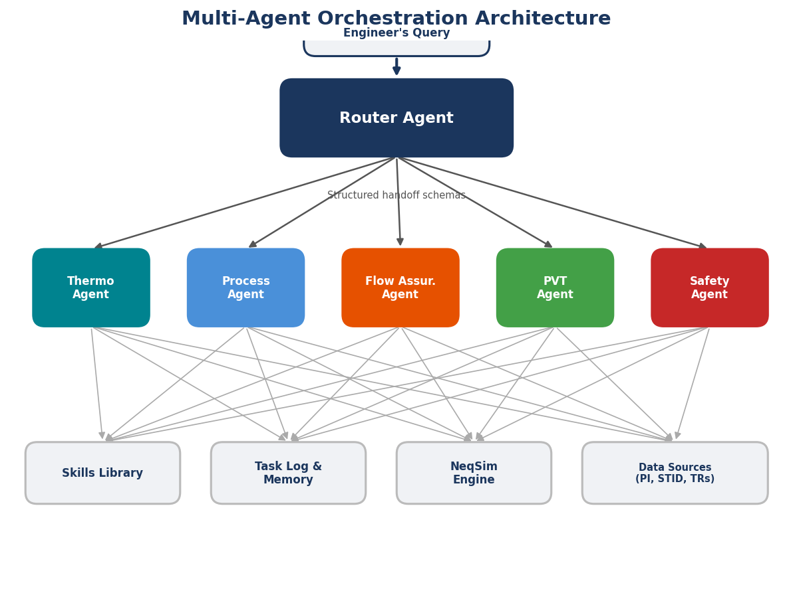
4.2 The Agent Catalog
The NeqSim system provides a catalog of specialist agents, each designed to handle a specific class of engineering tasks. These agents are not merely prompt templates; they are autonomous actors that load appropriate skills, invoke NeqSim's Java API through Python bindings, produce validated results, and generate structured output that other agents can consume. Table 4.1 summarises the complete catalog, and the following subsections describe each agent's capabilities.
The Router Agent: "neqsim help"
The router agent serves as the system's front door. It receives unstructured natural language requests from users, classifies them by engineering domain and complexity, and delegates them to the appropriate specialist agent or combination of agents. It does not perform engineering calculations itself; rather, it understands the capabilities and limitations of every other agent in the catalog and can compose multi-agent workflows for complex requests. When a user asks "What is the dew point of this natural gas at 50 bar?", the router identifies this as a thermodynamic flash calculation and delegates to the fluid agent. When the same user asks "Design a gas processing plant for this field," the router recognises a comprehensive task requiring multiple specialists and orchestrates a sequential pipeline.
Thermodynamic Fluid Agent: "create a neqsim thermodynamic fluid"
This agent handles all aspects of thermodynamic system creation and property calculation. It selects appropriate equations of state (SRK, PR, CPA, GERG-2008, PC-SAFT) based on the fluid composition and conditions, creates fluid objects with correct component specifications, executes flash calculations (TP, PH, PS, bubble point, dew point, hydrate equilibrium), and reports phase properties including density, viscosity, thermal conductivity, heat capacity, and compressibility factor. It carries the neqsim-api-patterns skill, which encodes critical rules such as the mandatory call to initProperties() after flash calculations—a step that, if omitted, produces zero values for transport properties.
Process Simulation Agent: "make a neqsim process simulation"
The process simulation agent constructs and runs steady-state flowsheets using NeqSim's ProcessSystem framework. It creates streams, separators, compressors, heat exchangers, valves, mixers, splitters, distillation columns, and pipelines, wiring them together into complete process models. It handles recycle convergence through the ProcessSystem's built-in iteration mechanisms and can model multi-area plants using ProcessModel for large-scale platform simulations. This agent loads the neqsim-platform-modeling skill for topside process models and the neqsim-distillation-design skill when distillation columns are involved.
PVT Simulation Agent: "run a neqsim PVT simulation"
Specialising in pressure–volume–temperature analysis, this agent performs the standard laboratory experiments in silico: Constant Mass Expansion (CME), Constant Volume Depletion (CVD), Differential Liberation (DL), separator tests, and saturation pressure calculations. It loads the neqsim-eos-regression skill for matching experimental data and can characterise C7+ fractions using Whitson's gamma distribution method. Results include formation volume factors, gas-oil ratios, liquid dropout curves, and fluid density profiles across the pressure depletion range.
Flow Assurance Agent: "run neqsim flow assurance analysis"
This agent addresses the full spectrum of flow assurance threats: hydrate formation temperature and inhibitor dosing (MEG, methanol), wax appearance temperature and deposition rates, asphaltene stability and onset conditions, CO2 and H2S corrosion rates, multiphase pipeline hydraulics using Beggs and Brill or equivalent correlations, slugging frequency estimation, and thermal analysis for insulated and bare pipelines. It loads the comprehensive neqsim-flow-assurance skill, which encodes inhibitor calculation patterns, pipeline simulation templates, and corrosion rate formulas per NORSOK M-506 and de Waard–Milliams correlations.
Mechanical Design Agent: "run neqsim mechanical design"
The mechanical design agent translates process conditions into physical equipment specifications. For separators, it calculates vessel diameter and length using Souders–Brown droplet settling, selects internals (wire mesh demisters, vane packs, cyclone separators), and computes wall thickness per ASME Section VIII. For pipelines, it performs wall thickness calculations per ASME B31.3 or DNV-ST-F101, including corrosion allowances and weld efficiency factors. For compressors, it generates performance curves and matches against vendor equipment using the CompressorDesignFeasibilityReport. Cost estimation follows the factorial method with equipment-specific factors.
Gas Quality and Standards Agent: "calculate gas quality and standards"
This agent calculates gas properties according to international standards: heating value, Wobbe index, and relative density per ISO 6976, hydrocarbon dew point per ISO 23874, water dew point, CO2 and H2S content limits per gas sales specifications, and cricondentherm and cricondenbar from the phase envelope. It verifies compliance against common gas sales specifications (Gassco NCS, UK NTS, EU Marcogaz) and flags non-compliant parameters.
Field Development Agent: "develop oil and gas field"
The field development agent performs concept selection, production profile forecasting, and economic evaluation for upstream oil and gas projects. It uses NeqSim's FieldDevelopmentStudy classes to screen development concepts (subsea tieback, standalone platform, FPSO), estimate CAPEX using cost correlation databases, generate production profiles with decline curve analysis, run discounted cash flow models with fiscal regime modelling (Norwegian petroleum tax, UK ring-fenced CT, generic), and compute NPV, IRR, payback period, and breakeven prices. It loads both the neqsim-field-development and neqsim-field-economics skills.
Safety and Depressuring Agent: "run neqsim safety and depressuring simulation"
This agent models emergency scenarios: vessel blowdown (depressurisation) with temperature evolution, pressure safety valve sizing per API 521/API 520, fire case heat input calculations, two-phase relief scenarios, and minimum design metal temperature analysis. It uses NeqSim's dynamic simulation capability with runTransient() to model time-dependent blowdown behaviour, tracking temperature, pressure, and phase fractions as the vessel empties through an orifice.
Task Solving Agent: "solve engineering task"
The task solving agent orchestrates the full three-step engineering workflow described in Chapter 6: Scope and Research, Analysis and Evaluation, and Report Generation. It creates the task folder structure, guides the user through scoping questions, creates and executes Jupyter notebooks with NeqSim calculations, performs benchmark validation against reference data, runs uncertainty analysis with Monte Carlo simulation, evaluates risks using ISO 31000 matrices, and generates professional Word and HTML reports. This agent is the system's most complex orchestrator, typically invoking multiple specialist agents during Step 2.
Notebook Agent: "create a neqsim jupyter notebook"
This agent generates Jupyter notebooks that demonstrate NeqSim capabilities. It follows the neqsim-notebook-patterns skill, which mandates the dual-boot setup cell (supporting both development and pip-installed NeqSim), matplotlib figures with proper axis labels and units, and results saved to results.json. Every notebook is executed cell-by-cell to verify correctness before delivery.
Test Agent: "write neqsim unit tests"
The test agent generates JUnit 5 test classes for NeqSim's Java codebase. It follows Java 8 compatibility rules strictly, creates tests that assert on physical outputs rather than internal arrays, and generates regression baseline fixtures in CSV or JSON format. Test classes are placed in the mirror package structure under src/test/java/neqsim/.
Process Extraction Agent: "extract process to neqsim json"
This agent parses unstructured descriptions of process systems—text descriptions, tabular data from heat and material balances, or process flow diagram annotations—and converts them into NeqSim's JSON builder format. The resulting JSON can be passed to ProcessSystem.fromJsonAndRun() to instantiate a running simulation. It loads the neqsim-process-extraction skill for equipment mapping, stream wiring, and composition normalisation.
Technical Document Reader: "read technical documents"
The document reader agent extracts structured engineering data from PDFs, Word documents, Excel spreadsheets, and engineering images. It can parse P&ID topology (equipment tags, valve types, instrument loops), extract operating conditions from vendor datasheets, digitise performance curves from compressor maps, and read stream tables from heat and material balances. It uses pdf_to_figures.py to convert PDF pages to PNG images, then analyses them with multimodal vision capabilities.
Control System Agent: "design control systems"
The control system agent designs instrument and control architectures for process plants. It specifies PID controller parameters using NeqSim's dynamic simulation tuning capabilities, generates instrument schedules listing every transmitter, controller, and valve in the system, and creates cause-and-effect matrices for safety instrumented systems. It works with NeqSim's ControllerDeviceInterface and measurement device classes.
Emissions and Environmental Agent: "calculate emissions and environmental impact"
This agent quantifies environmental performance: CO2 emissions from combustion sources (flares, turbines, furnaces), fugitive emissions from process equipment, NOx and SOx formation estimates, and energy efficiency metrics. It supports both source-level calculations and facility-level aggregation, enabling compliance reporting against regulatory frameworks.
Table 4.1: Engineering Task to Agent Mapping
| Engineering Task | Primary Agent | Supporting Agents |
|---|---|---|
| Dew point calculation | Thermodynamic Fluid | — |
| Separator sizing | Process Simulation | Mechanical Design |
| Pipeline hydraulics | Flow Assurance | Thermodynamic Fluid |
| Hydrate inhibitor dosing | Flow Assurance | Thermodynamic Fluid |
| Compressor design | Process Simulation | Mechanical Design |
| Gas sales specification | Gas Quality & Standards | Thermodynamic Fluid |
| Field economics (NPV) | Field Development | Process Simulation |
| Emergency blowdown | Safety & Depressuring | Thermodynamic Fluid |
| Full field study | Task Solving | All specialists |
| Platform model from P&ID | Process Extraction | Technical Document Reader |
| Control system design | Control System | Process Simulation |
| CO2 emission inventory | Emissions | Process Simulation |
4.3 The Router Agent
The router agent—invoked by the "neqsim help" command—is the central dispatcher of the multi-agent system. Its primary function is to classify incoming requests and route them to the specialist agent or agents best equipped to handle each request. This classification operates through a structured decision process that evaluates multiple dimensions of the request simultaneously.
Task Classification Algorithm
The router performs classification along four dimensions. First, domain identification: the router scans the request for domain-specific keywords and concepts. A request mentioning "hydrate formation temperature" is tagged with the flow assurance domain; a request mentioning "NPV" or "payback period" is tagged with economics; a request mentioning "wall thickness" or "ASME" is tagged with mechanical design. Multiple domains may be identified for a single request.
Second, complexity assessment: the router estimates whether the request requires a quick calculation (single agent, immediate response), a standard analysis (multi-step workflow, notebook output), or a comprehensive study (multiple notebooks, uncertainty analysis, risk evaluation, formal report). This assessment drives the choice between invoking a single specialist and orchestrating the full task-solving workflow.
Third, dependency analysis: the router identifies which agents depend on the outputs of other agents. A mechanical design calculation requires process conditions (temperatures, pressures, flow rates, compositions) that come from a process simulation, which in turn requires a thermodynamic fluid definition. This dependency graph determines the execution order when multiple agents are involved.
Fourth, resource estimation: the router estimates the computational resources required—how many flash calculations, how many process simulation runs, whether Monte Carlo sampling is needed—and uses this estimate to set appropriate timeouts and checkpointing strategies.
The classification result is a structured routing plan that specifies which agents to invoke, in what order, what data flows between them, and what the final deliverable should be. For simple requests (single domain, low complexity), the router delegates directly. For complex requests, it generates a multi-agent composition plan as described in Section 4.4.
Ambiguity Resolution
When the router cannot confidently classify a request, it employs a disambiguation strategy. Rather than guessing and potentially wasting computational resources on the wrong analysis, it poses scoping questions to the user. These questions are drawn from the engineering context: "Is this a dry gas or a multiphase system?", "Do you need a full economic evaluation or just a process simulation?", "Which design codes apply—NORSOK, API, or ASME?" This approach, documented in the AGENTS.md instruction file, lists seven standard scoping questions that cover fluid composition, operating envelope, applicable standards, economic parameters, uncertainty scope, deliverable format, and risk categories [10].
4.4 Multi-Agent Composition Patterns
Complex engineering tasks rarely map to a single specialist agent. The NeqSim system supports three fundamental composition patterns that can be combined to address tasks of arbitrary complexity.
Pattern 1: Sequential Pipeline
The most common composition pattern is the sequential pipeline, where the output of one agent feeds the input of the next. A typical example is the concept evaluation pipeline:
- Capability Scout Agent evaluates what NeqSim can calculate for the requested scenario, identifies any gaps, and recommends an analysis approach.
- Thermodynamic Fluid Agent creates the fluid model with appropriate EOS and validates it against available PVT data.
- Process Simulation Agent builds the flowsheet, runs steady-state simulation, and produces heat and material balances.
- Mechanical Design Agent sizes equipment based on process conditions from step 3.
- Field Economics Agent estimates CAPEX from equipment sizes, generates production profiles, and computes NPV.
- Task Solving Agent compiles all results into a structured report with figures, tables, and executive summary.
Each agent receives a structured handoff from its predecessor (see Section 4.5) and produces structured output for its successor. The pipeline is orchestrated by the router agent, which monitors completion at each stage and handles transitions.
Pattern 2: Parallel Fan-Out
When multiple analyses are independent of each other but share common input data, the system can execute them in parallel. A facility design review illustrates this pattern:
Given a completed process simulation (common input), three agents work simultaneously:
- Mechanical Design Agent: sizes all vessels, pipes, and rotating equipment.
- Flow Assurance Agent: evaluates hydrate risk, wax deposition, and corrosion rates across all pipelines.
- Emissions Agent: calculates CO2 emissions from all combustion sources and fugitive emission points.
The three analyses share the same process conditions but are computationally independent. The router dispatches all three requests concurrently, collects results as each agent completes, and merges the outputs into a unified report. This pattern significantly reduces wall-clock time for comprehensive design reviews.
Pattern 3: Iterative Refinement
Some engineering problems require iteration between agents. Process optimisation exemplifies this pattern:
- Process Simulation Agent runs the initial flowsheet with baseline parameters, producing heat and material balances.
- Field Economics Agent evaluates the economic performance, identifying that compressor power costs dominate operating expenditure.
- Process Simulation Agent receives this feedback and modifies the flowsheet—perhaps adding an interstage cooler or adjusting pressure ratios—to reduce compressor power.
- Field Economics Agent re-evaluates, confirming that NPV has improved.
- Steps 3-4 repeat until the economic metric converges or a maximum iteration count is reached.
This pattern implements design optimisation through agent dialogue. Each iteration passes a structured result (Section 4.5) that includes both the numerical data and metadata about what changed and why. The convergence criterion is defined in the initial routing plan—typically a percentage improvement threshold or a maximum number of iterations [20].
Combining Patterns
Real-world tasks often combine all three patterns. A comprehensive field development study might use a sequential pipeline (fluid → process → mechanical → economics) with parallel fan-out at the process stage (separation, compression, and export modelled simultaneously) and iterative refinement at the optimisation stage (adjusting wellhead pressure allocation to maximise plateau production). The router agent manages this nested composition, maintaining a dependency graph that tracks which computations have completed and which are blocked on upstream results.
4.5 Agent-to-Agent Communication
Effective multi-agent operation requires a well-defined communication protocol. In the NeqSim system, this protocol is defined by the neqsim-agent-handoff skill, which specifies structured JSON schemas for three categories of inter-agent data.
Fluid Definitions
When the thermodynamic fluid agent creates a fluid model, it produces a handoff document that includes:
- Components: a list of chemical species with their mole fractions, normalised to sum to 1.0.
- Equation of state: the selected model (SRK, PR, CPA, GERG-2008) with justification for the selection.
- Mixing rule: the specific mixing rule applied (classic, HV, WS, CPA-specific).
- Characterisation data: for C7+ fractions, the Whitson gamma distribution parameters (molecular weight, specific gravity, boiling point distribution).
- Validation results: comparison against any available experimental data (saturation pressure, density, viscosity) with deviations reported.
This handoff document allows any downstream agent to recreate the identical fluid object without reperforming the selection and validation work.
Simulation Results
Process simulation agents produce handoff documents containing:
- Stream table: temperature, pressure, total flow rate, phase fractions, and component mole fractions for every named stream in the flowsheet.
- Equipment operating conditions: for each unit operation, the key operating parameters (separator pressure and temperature, compressor discharge conditions, heat exchanger duty and LMTD).
- Convergence status: whether the simulation converged, the number of iterations required, and residual errors for recycle loops.
- Metadata: NeqSim version, EOS used, solver settings, and any warnings generated during execution.
Design Outputs
Mechanical design agents produce handoff documents containing:
- Equipment specifications: vessel dimensions, wall thickness, material grade, design pressure and temperature, and corrosion allowance.
- Cost estimates: capital cost, installation factor, and total installed cost for each major equipment item.
- Standards compliance: a list of applicable standards (ASME, API, DNV) and the specific clauses satisfied by the design.
- Feasibility verdict: FEASIBLE, FEASIBLE_WITH_WARNINGS, or NOT_FEASIBLE, with detailed justification for each flag.
These structured schemas serve as contracts between agents. As long as the producing agent populates the schema correctly, the consuming agent can parse and use the data without any knowledge of how it was generated. This decoupling is essential for maintaining the independence of specialist agents while enabling their composition into complex workflows [11].
4.6 Error Handling and Recovery
In any system comprising multiple autonomous agents operating on complex engineering data, failures are inevitable. A flash calculation may fail to converge for an unusual fluid composition. A process simulation may diverge during recycle iteration. A mechanical design calculation may encounter a material grade not present in the database. The NeqSim multi-agent system incorporates several layers of error handling to ensure robust operation.
Self-Healing Automation
The ProcessAutomation class provides self-healing variable access through the getVariableValueSafe() and setVariableValueSafe() methods. When an agent references a simulation variable by an incorrect name—perhaps using "HP separator" instead of "HP Sep"—the self-healing mechanism does not simply fail. Instead, it activates AutomationDiagnostics, which performs fuzzy name matching using edit distance algorithms. If the Levenshtein distance between the requested name and any known equipment name is two or fewer, the system automatically corrects the address, executes the operation, and returns the result along with a note that auto-correction was applied. These corrections are cached, so subsequent requests for the same misspelled name resolve instantly.
Physical Bounds Validation
Before setting any simulation variable to a new value, the automation layer validates that the value falls within physically reasonable bounds. An attempt to set a temperature to -500°C, a pressure to -10 bar, or a compressor efficiency to 150% is caught and rejected with a descriptive error message explaining the valid range. This prevents agents from propagating nonsensical values through the simulation, which would produce meaningless downstream results.
Agent-Level Retry and Fallback
Each specialist agent implements a retry strategy for its core operations. The thermodynamic fluid agent, for example, follows a ranked recovery sequence when a flash calculation fails to converge: (1) retry with tighter tolerance, (2) switch from direct substitution to the Newton-Raphson solver, (3) perturb the initial temperature or pressure estimate by 1%, (4) try an alternative EOS if the original choice is unsuitable for the conditions. These recovery strategies are encoded in the neqsim-troubleshooting skill and are loaded automatically when the agent encounters an error.
If an agent exhausts its recovery strategies and still cannot produce a valid result, it generates a structured error report that includes the original request, the recovery strategies attempted, the error messages received, and a recommendation for manual intervention. This error report is returned to the router agent, which can either present it to the user or attempt an alternative routing strategy—for example, decomposing a single complex simulation into smaller, more tractable sub-problems [10].
Operation Tracking and Learning
The AutomationDiagnostics class maintains a learning history of all automation operations—successful and failed. The getLearningReport() method produces a summary of operation statistics, success rates by equipment type, common error patterns, and the most frequently applied auto-corrections. This diagnostic information helps both human operators and the router agent understand system reliability patterns. If a particular equipment naming convention consistently causes auto-correction, the learning report highlights this, enabling the system to proactively apply the correction before the error occurs.
Graceful Degradation
The multi-agent system is designed to degrade gracefully rather than fail catastrophically. If the mechanical design agent is unable to complete a cost estimate due to missing material data, the remaining analyses (process simulation, flow assurance, economics using estimated costs) still proceed. The final report flags the incomplete analysis with a clear indication of what is missing and why. This partial-result philosophy ensures that users receive the maximum amount of useful information even when individual components encounter difficulties, reflecting the pragmatic engineering approach where preliminary results with known limitations are often more valuable than no results at all [18].
4.7 Summary
Key points from this chapter:
- No single AI agent can master the full breadth of oil and gas engineering. Multi-agent architectures enable specialisation, with each agent carrying deep domain expertise in a narrow area.
- The NeqSim system provides over sixteen specialist agents covering thermodynamics, process simulation, PVT analysis, flow assurance, mechanical design, economics, safety, control systems, emissions, and report generation.
- The router agent classifies requests along four dimensions—domain, complexity, dependencies, and resources—and generates routing plans that compose specialists into workflows.
- Three composition patterns address different types of complexity: sequential pipelines for dependent analyses, parallel fan-out for independent analyses, and iterative refinement for optimisation problems.
- Structured handoff schemas for fluid definitions, simulation results, and design outputs enable agent-to-agent communication without tight coupling between specialists.
- Self-healing automation, physical bounds validation, retry strategies, and graceful degradation ensure robust operation even when individual agents encounter errors.
Exercises
- Exercise 4.1: A user requests: "Calculate the dew point of a natural gas (methane 0.85, ethane 0.10, propane 0.05) at 50 bar, then estimate the hydrate formation temperature, and finally determine the required MEG injection rate." Identify which agents would be involved and describe the composition pattern (sequential, parallel, or iterative) used to orchestrate them.
- Exercise 4.2: Design a multi-agent routing plan for the following request: "Evaluate the economic viability of a subsea tieback from a satellite well to an existing host platform, including flow assurance assessment, mechanical design of the flowline, and risk analysis." Specify the agent sequence, the data passed between agents, and where parallel execution is possible.
- Exercise 4.3: The self-healing automation receives a request for the variable
"High Pressure Separator.gasOutlet.temperature", but the actual equipment name is"HP Sep"and the stream is"gasOutStream". Explain the auto-correction process, including fuzzy matching, correction caching, and what the returned JSON would contain. - Exercise 4.4: A process simulation agent fails to converge a three-stage compression train because the inter-stage cooling is insufficient. Describe the error handling sequence: what the agent attempts, what it reports if recovery fails, and how the router agent might respond to the failure report.
5 The Skills Library
Learning Objectives
After reading this chapter, the reader will be able to:
- Define what a skill is in the context of agentic engineering and explain how skills differ from executable code, fine-tuned model weights, and static documentation.
- Navigate the NeqSim skills catalog and identify which skills apply to a given engineering task.
- Analyse the internal structure of a skill file and understand how it encodes domain knowledge through rules, code templates, reference data, and common error patterns.
- Explain how dynamic skill loading manages the finite context window of large language models by loading only task-relevant knowledge.
- Design and write new skills for emerging engineering domains, following the established format and metadata conventions.
5.1 What Is a Skill?
A skill, in the NeqSim agentic engineering framework, is a structured markdown document that encodes domain-specific knowledge for injection into an AI agent's context at runtime. It is not executable code, nor a trained model, nor a database query result. It is curated human expertise—API patterns, code templates, decision rules, reference data, common error patterns, and recovery strategies—organised in a format that a large language model can read, interpret, and apply to engineering tasks [19].
The concept of skills addresses a fundamental challenge in applying large language models to engineering domains. General-purpose models, trained on broad internet corpora, possess remarkable linguistic capabilities and substantial knowledge of programming patterns. However, they lack the specificity required for reliable engineering computation. A model might know that equations of state relate pressure, temperature, and volume, but it does not know that NeqSim's SystemSrkEos constructor takes temperature in Kelvin and pressure in bar, that setMixingRule("classic") must be called before any flash calculation, or that initProperties() must follow every flash to initialise transport properties. These are not facts that appear in general training data—they are operational details specific to a particular software system and its API conventions.
Skills bridge this gap by providing precisely the knowledge that general training lacks. When an agent receives a request to create a thermodynamic fluid, it loads the neqsim-api-patterns skill, which contains the exact constructor signatures, required method calls, unit conventions, and common pitfalls. The agent then combines its general reasoning capabilities with this specific domain knowledge to produce correct, working code. The skill does not replace the model's intelligence; it augments it with the facts and patterns needed to apply that intelligence to a specific domain [6].
This architecture—known variously as retrieval-augmented generation (RAG), knowledge injection, or tool-augmented reasoning—has emerged as the dominant paradigm for deploying large language models in specialised domains. Rather than attempting to encode all domain knowledge into model weights through fine-tuning, the knowledge is maintained in external documents that are loaded into the context window on demand. This approach offers several decisive advantages that we explore in Section 5.7.
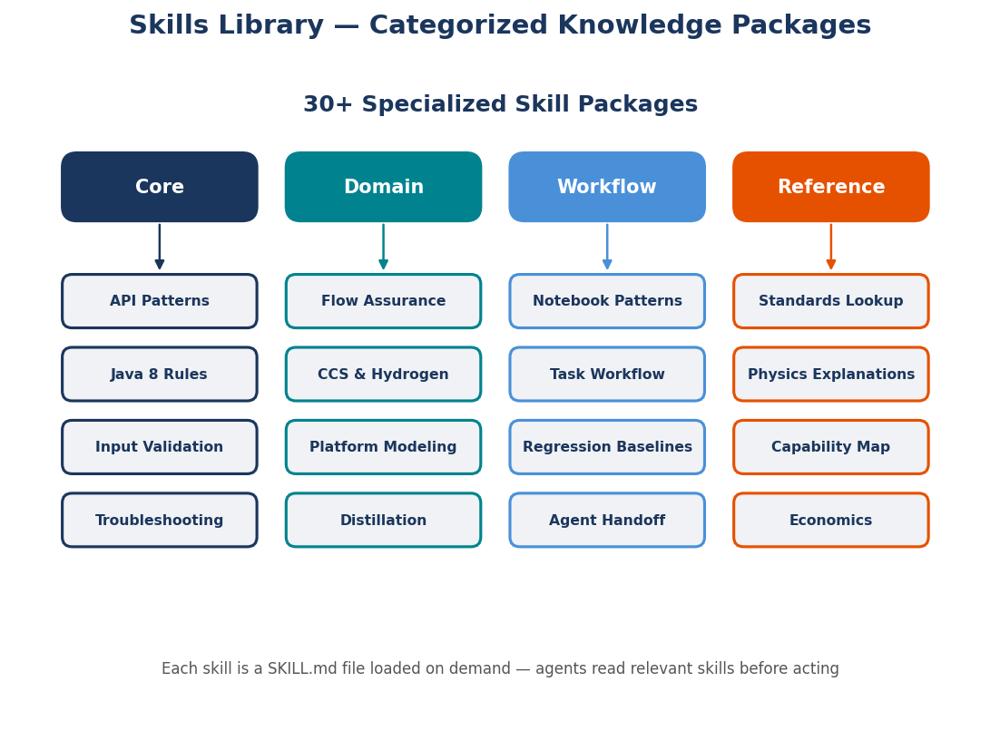
5.2 The Skills Catalog
The NeqSim system maintains a library of over twenty-five skills, organised into five categories: Core API, Domain, Workflow, Integration, and Utility. Each skill is a standalone markdown file stored in the .github/skills/ directory structure, with a standardised filename (SKILL.md) and a description metadata field that enables automatic matching against user requests.
Core API Skills
Core API skills encode the fundamental rules and patterns for interacting with NeqSim's Java and Python APIs. They are loaded most frequently, often implicitly as prerequisites for domain-specific tasks.
neqsim-api-patterns is the most comprehensive core skill. It covers equation of state selection criteria (when to use SRK versus PR versus CPA versus GERG-2008), fluid creation patterns with correct constructor syntax, flash calculation types and their invocation, property access methods with unit specifications, process equipment creation patterns, and the ProcessSystem flowsheet construction paradigm. This skill is the single most important document for producing correct NeqSim code and is loaded for virtually every thermodynamic or process simulation task.
neqsim-java8-rules enforces the critical constraint that all NeqSim Java code must compile with Java 8. It lists every forbidden Java 9+ feature—var declarations, List.of(), String.repeat(), str.isBlank(), text blocks, records, pattern matching instanceof—and provides the correct Java 8 replacement for each. This skill prevents build failures that would otherwise occur when an agent, trained on modern Java syntax, generates code using features unavailable in the target runtime.
neqsim-input-validation provides pre-simulation validation rules that catch physically impossible or suspect inputs before they reach the simulation engine. It defines valid ranges for temperature (not below absolute zero, not exceeding decomposition temperatures), pressure (positive, not exceeding material limits), composition (fractions sum to 1.0, no negative values), and component names (matching the NeqSim component database). Loading this skill prevents the common failure mode where an agent constructs a thermodynamic system with nonsensical inputs, runs it, and then struggles to interpret the resulting errors or garbage output.
neqsim-troubleshooting encodes recovery strategies for the most common simulation failures: flash non-convergence, recycle loop divergence, phase identification errors, zero property values, and numerical overflow. For each failure mode, it provides a ranked list of recovery actions—from simple parameter adjustments to alternative solver selections to problem decomposition strategies. This skill transforms an agent's response to errors from blind retry to informed, systematic recovery.
neqsim-regression-baselines provides patterns for capturing baseline values before modifying solver logic or property correlations, creating regression test fixtures, and detecting accuracy drift. It ensures that code changes do not silently degrade the accuracy of thermodynamic calculations.
Domain Skills
Domain skills encode specialised knowledge for specific engineering disciplines. They are loaded when a task falls within their domain and provide the deep expertise that distinguishes an expert analysis from a superficial one.
neqsim-flow-assurance is one of the most extensive domain skills. It covers hydrate formation prediction with CPA EOS and ice phases, hydrate inhibitor dosing calculations for MEG and methanol, wax appearance temperature prediction, asphaltene onset and stability analysis, CO2 and H2S corrosion rate calculations per NORSOK M-506 and de Waard–Milliams, multiphase pipeline hydraulics with Beggs and Brill correlations, slug flow assessment, thermal analysis for insulated pipelines, and erosion velocity limits per API RP 14E. Each topic includes NeqSim code templates, applicable standards references, and validation criteria.
neqsim-ccs-hydrogen addresses the emerging domains of carbon capture and storage (CCS) and hydrogen systems. It covers CO2 phase behaviour with impurities (N2, O2, Ar, H2S, CH4), dense phase transport in pipelines, injection well analysis with formation temperature gradients, impurity enrichment monitoring, and hydrogen blending in natural gas networks. The skill includes code patterns for the CO2InjectionWellAnalyzer, TransientWellbore, and ImpurityMonitor classes.
neqsim-electrolyte-systems provides guidance for modelling aqueous systems with dissolved ions, including produced water treatment, scale prediction (CaCO3, BaSO4, CaSO4), CO2 and H2S solubility in brine, and MEG/DEG regeneration. It specifies the use of SystemElectrolyteCPAstatoil and the correct way to add ion components.
neqsim-distillation-design covers distillation column setup, solver selection (standard, damped, inside-out), feed tray optimisation, reflux ratio determination, and internals sizing per Sulzer and Koch-Glitsch guidelines. It includes convergence troubleshooting strategies specific to the iterative nature of distillation calculations.
neqsim-reaction-engineering provides patterns for modelling chemical reactors: GibbsReactor for equilibrium calculations, PlugFlowReactor for kinetic PFR models, StirredTankReactor for CSTR analysis, KineticReaction setup with rate constants and activation energies, and CatalystBed configuration. It also covers bioprocess modules including anaerobic digestion and fermentation.
neqsim-power-generation addresses gas turbine modelling, steam turbine performance, heat recovery steam generators (HRSG), combined cycle system analysis, and heat integration using pinch analysis. It includes fuel gas consumption calculations and thermal efficiency metrics.
Workflow Skills
Workflow skills encode the process and methodology for conducting engineering analyses, going beyond individual calculations to define complete analysis sequences.
neqsim-notebook-patterns defines the standard structure for Jupyter notebooks: the dual-boot setup cell that supports both development and pip-installed NeqSim, class import paths, matplotlib figure requirements (axis labels, units, titles, legends, grids), and the results.json schema. It ensures that every notebook produced by the system follows a consistent, high-quality format.
neqsim-field-development describes the complete field development workflow: resource estimation, concept screening, production profile generation, facility sizing, tieback analysis, and development plan economics. It maps the workflow to NeqSim's FieldDevelopmentStudy and related classes.
neqsim-field-economics encodes economic evaluation methodology: discounted cash flow modelling, Norwegian petroleum tax calculations (78% marginal rate with uplift), UK ring-fenced corporation tax, generic fiscal regimes, commodity price assumptions, cost estimation methods, and Monte Carlo sensitivity analysis patterns.
neqsim-production-optimization covers production profile forecasting with decline curve analysis, facility bottleneck identification, gas lift optimisation, multi-well network allocation, and IOR/EOR screening criteria.
neqsim-platform-modeling captures the patterns derived from modelling over fifteen production platforms on the Norwegian Continental Shelf. It covers multi-stage separation with oil recycles, recompression trains with compressor performance curves and anti-surge control, export and injection compression, scrubber liquid recovery, Cv-based valve flow modelling, and iteration strategies for complex recycle loops.
Integration Skills
Integration skills address the interfaces between NeqSim and external data sources or software systems.
neqsim-plant-data describes how to connect NeqSim process models to plant historian data from OSIsoft PI or Aspen IP.21 systems. It covers the tagreader API for reading time-series data, tag mapping patterns that link historian tags to simulation variables, data quality handling for bad or suspect values, and digital twin loops that continuously compare simulated and measured values.
neqsim-technical-document-reading provides methods for extracting structured data from engineering documents: PDF text extraction, image analysis for P&IDs and vendor datasheets, table parsing from Excel and CSV files, and figure digitisation for performance curves and phase envelopes. It defines quality scoring criteria for extracted data.
neqsim-stid-retriever addresses the retrieval of engineering documents from document management systems—compressor performance curves, mechanical drawings, vendor data sheets. It supports local directory scanning, manual upload, and pluggable retrieval backends.
neqsim-unisim-reader provides detailed guidance for converting commercial process simulation files to NeqSim format. It covers COM automation API navigation, component mapping between simulator and NeqSim naming conventions, EOS parameter transfer, operation type mapping for over 45 unit operation types, topology reconstruction including sub-flowsheet handling, and result verification strategies.
Utility Skills
Utility skills provide cross-cutting capabilities that support multiple engineering domains.
neqsim-agent-handoff defines the structured JSON schemas used for agent-to-agent communication (described in Chapter 4). It specifies the format for fluid definitions, simulation results, and design outputs that enable multi-agent composition.
neqsim-capability-map provides a structured inventory of NeqSim's capabilities organised by engineering discipline. Agents consult this skill to determine whether NeqSim can perform a requested calculation, to identify capability gaps, and to plan implementation approaches for tasks that require capabilities not yet available.
neqsim-physics-explanations maps common engineering phenomena to plain-language explanations. When an agent needs to explain why a Joule–Thomson cooling effect causes temperature to drop across a valve, or why retrograde condensation produces liquid from a gas above its bubble point, this skill provides the physical interpretation.
neqsim-standards-lookup maps equipment types to applicable industry standards (API, ASME, DNV, ISO, NORSOK, EN). It provides database query patterns for looking up specific standard requirements and defines the schema for recording standards compliance in results.json.
5.3 Anatomy of a Skill File
To understand how skills work in practice, let us examine the internal structure of the neqsim-api-patterns skill—the most frequently loaded skill in the system. This analysis reveals the principles that govern effective skill design.
Metadata and Description
Every skill file begins with metadata that enables automatic matching. The skill description field is a concise statement of what the skill covers and when it should be loaded:
USE WHEN: writing Java or Python code that uses NeqSim for thermodynamic
calculations, process simulation, or property retrieval. Covers EOS selection,
fluid creation, flash calculations, property access, equipment patterns, and
unit conventions.
This description is matched against the user's request by the agent framework. A request mentioning "flash calculation," "equation of state," or "fluid properties" triggers loading of this skill. The matching is semantic, not purely keyword-based—the agent understands that "calculate gas density" implies thermodynamic property access even though none of the exact keywords appear in the description.
Decision Rules
The skill encodes decision rules as structured guidance. The EOS selection section, for example, provides a decision matrix:
- SRK: Default for hydrocarbon systems. Good general-purpose choice for gas processing, pipeline transport, and reservoir fluids without polar components.
- PR (Peng-Robinson): Alternative to SRK with slightly better liquid density predictions. Preferred for crude oil systems.
- CPA: Required when polar or associating components are present—water, methanol, MEG, glycols. Mandatory for hydrate calculations and produced water modelling.
- GERG-2008: High-accuracy reference equation for natural gas custody transfer. 21 components only. Used when fiscal metering precision is required.
- PC-SAFT: Suitable for polymer systems and some associating fluids. Less commonly used in oil and gas applications.
These rules compress years of thermodynamic expertise into actionable guidance. An agent loading this skill does not need to understand the derivation of each equation of state; it needs to know which one to select for a given fluid and application [9].
Code Templates
The skill provides copy-paste code templates for every common operation. These templates encode not just the correct method calls but also the critical sequencing:
// Create fluid, set mixing rule, run flash, initialise properties
SystemInterface fluid = new SystemSrkEos(273.15 + 25.0, 60.0);
fluid.addComponent("methane", 0.85);
fluid.addComponent("ethane", 0.10);
fluid.addComponent("propane", 0.05);
fluid.setMixingRule("classic"); // MANDATORY — never skip
ThermodynamicOperations ops = new ThermodynamicOperations(fluid);
ops.TPflash();
fluid.initProperties(); // MANDATORY after flash — initialises transport properties
double density = fluid.getDensity("kg/m3");
double viscosity = fluid.getPhase("gas").getViscosity("kg/msec");
The comments "MANDATORY" and "never skip" are not decorative—they encode constraints that, if violated, produce silent failures (zero values rather than exceptions). These are exactly the kind of operational details that a general-purpose model would not know and that training data would not reliably capture.
Unit Conventions
The skill documents the unit conventions that NeqSim expects and produces. Temperature is in Kelvin internally (constructors take Kelvin), pressure in bar, flow rates in various units specified by string arguments. These conventions differ from what many engineers expect (Celsius, psig, MMSCFD), so the skill provides conversion patterns and the correct unit strings for method calls.
Common Error Patterns
Finally, the skill catalogues errors that agents frequently make and their solutions. Each entry follows a pattern: symptom, cause, and fix.
- Symptom: Viscosity returns 0.0. Cause:
initProperties()not called after flash. Fix: Addfluid.initProperties()after every flash calculation. - Symptom: Build error
cannot find symbol: method repeat(int). Cause: Agent usedString.repeat()which is Java 11+. Fix: UseStringUtils.repeat()from Apache Commons Lang. - Symptom: Flash returns only gas phase for a wet gas at low temperature. Cause: Water not included as a component. Fix: Add
fluid.addComponent("water", fraction)when aqueous phase is expected.
5.4 How Skills Prevent Errors
The value of skills is best demonstrated through concrete failure scenarios that skills prevent. These scenarios are drawn from real engineering sessions where agents operating without the relevant skill produced incorrect results.
Scenario 1: The Missing initProperties() Call
Without the neqsim-api-patterns skill, an agent creating a fluid and calculating its viscosity might produce:
SystemInterface fluid = new SystemSrkEos(273.15 + 25.0, 60.0);
fluid.addComponent("methane", 0.90);
fluid.addComponent("ethane", 0.10);
fluid.setMixingRule("classic");
ThermodynamicOperations ops = new ThermodynamicOperations(fluid);
ops.TPflash();
// Agent proceeds directly to property access
double viscosity = fluid.getPhase("gas").getViscosity("kg/msec");
// Returns 0.0 — transport properties not initialised
The flash calculation succeeds, the phase equilibrium is correct, but the transport property initialization that initProperties() performs has been skipped. The viscosity, thermal conductivity, and diffusion coefficient all return zero. This is a silent failure—no exception, no warning, just physically meaningless output. An engineer using this result for pipeline sizing would calculate zero pressure drop, leading to undersized equipment. The neqsim-api-patterns skill prevents this by marking initProperties() as mandatory in every code template and listing zero transport properties as a known symptom in the error pattern catalog.
Scenario 2: The Java 9+ Syntax Violation
Without the neqsim-java8-rules skill, an agent generating a JUnit test might write:
var fluid = new SystemSrkEos(300.0, 50.0);
var components = List.of("methane", "ethane", "propane");
for (var comp : components) {
fluid.addComponent(comp, 1.0 / components.size());
}
This code is clean, modern, and idiomatic Java 17. It also fails to compile on Java 8, which is NeqSim's target runtime. The var keyword (Java 10), List.of() (Java 9), and enhanced for with var all generate compilation errors. The neqsim-java8-rules skill prevents this by providing a comprehensive table of forbidden constructs and their Java 8 replacements, loaded every time the agent generates Java code [11].
Scenario 3: The Blind Retry
Without the neqsim-troubleshooting skill, an agent encountering a flash non-convergence error might retry with identical parameters, retry with slightly different parameters (but not addressing the root cause), switch to a different flash type that is inappropriate for the conditions, or abandon the calculation and report failure. The neqsim-troubleshooting skill instead provides a systematic recovery sequence: check that the feed is in a two-phase region (not single-phase), verify that the equation of state is appropriate for the components, try a different initial estimate strategy, adjust solver tolerance, and if all else fails, decompose the problem into smaller steps.
5.5 Dynamic Skill Loading
Large language models operate within a finite context window—the total amount of text they can process in a single interaction. As of 2024–2025, the most capable models offer context windows ranging from 128,000 to 200,000 tokens [6]. While this seems generous, the NeqSim skills library contains over 25 skill files, many exceeding 10,000 tokens. Loading all skills simultaneously would consume a significant fraction of the available context, leaving insufficient room for the user's request, the generated code, and the agent's reasoning.
Dynamic skill loading solves this problem by loading only the skills relevant to the current task. The loading process works as follows:
- Request analysis: The agent examines the user's request and identifies the engineering domain(s) involved.
- Skill matching: The agent compares the identified domains against skill descriptions. Each skill's
USE WHENclause provides clear matching criteria. - Selective loading: Only matched skills are loaded into the context. A hydrate formation calculation loads
neqsim-flow-assuranceandneqsim-api-patterns. A distillation column design loadsneqsim-distillation-designandneqsim-api-patterns. A field development study might loadneqsim-field-development,neqsim-field-economics, andneqsim-api-patterns. - Cascading dependencies: Some skills implicitly depend on others. Domain skills typically assume that the core API patterns are available. The loading mechanism can chain dependencies when needed.
This selective loading keeps the context window focused on the knowledge most relevant to the task at hand, improving both the quality of the generated output and the efficiency of the agent's reasoning. An agent loaded with flow assurance knowledge produces better hydrate predictions than one loaded with a diluted mixture of all engineering domains.
5.6 Extending the Skills Library
The NeqSim skills library is designed to be extensible. When a new engineering domain is added to NeqSim, or when operational experience reveals knowledge gaps in existing skills, new skills can be created by following the established format.
The SKILL.md Format
Every skill file follows a consistent structure:
- Header with description metadata: A
USE WHENclause that defines when the skill should be loaded, including keywords, engineering domains, and task types. - Quick reference: A concise summary of the most important rules and patterns, designed for rapid scanning.
- Detailed sections: Organised by topic, each section covers a specific aspect of the domain. Sections include decision rules, code templates, configuration parameters, common errors, and validation criteria.
- Code templates: Complete, working code examples that an agent can adapt for specific tasks. Templates include inline comments marking mandatory steps and common variation points.
- Error catalog: A table of known failure modes with symptoms, causes, and fixes. This section converts debugging experience into reusable knowledge.
- Standards references: Where applicable, references to industry standards (API, ASME, ISO, DNV, NORSOK) that govern the calculations covered by the skill.
Writing Effective Skills
The effectiveness of a skill depends on several qualities. Specificity matters: a skill that says "use the appropriate equation of state" is less useful than one that says "use SRK for dry gas systems above -30°C; switch to CPA when water content exceeds 100 ppm." Operationality matters: a skill that explains the theory of Souders–Brown correlation is less useful than one that provides the code template for calling NeqSim's separator sizing method. Error-awareness matters: cataloguing known failure modes and recovery strategies prevents agents from repeating common mistakes.
Skills should be written by engineers who have practical experience with the domain and the software. The most valuable skills encode hard-won operational knowledge—the gotchas, the edge cases, the sequences that must be followed in exactly the right order. This is knowledge that does not appear in textbooks or API documentation; it lives in the collective experience of the engineering team [9].
5.7 Skills vs Fine-Tuning
An alternative to knowledge injection via skills is model fine-tuning: training the language model on domain-specific data to embed engineering knowledge directly into its weights. While fine-tuning has its place, the skills-based approach offers decisive advantages for engineering applications.
Version Control and Auditability
Skills are markdown files stored in a Git repository. Every change to a skill is tracked, reviewed, and attributable to a specific author. When a regulatory audit requires demonstrating that the system uses the correct API 521 pressure relief sizing methodology, the auditor can read the relevant skill file, trace its change history, and verify that it encodes the correct formulas and safety factors. This level of auditability is impossible with fine-tuned model weights, which are opaque numerical arrays that defy human interpretation [19].
Updateability
When NeqSim releases a new version that changes an API signature, adds a new equipment type, or modifies a solver algorithm, the relevant skills can be updated immediately. A skill file edit takes effect the next time the skill is loaded—no model retraining required. Fine-tuning, by contrast, requires assembling a new training dataset, running the training process (potentially costing thousands of dollars in compute), and validating that the updated model has not regressed on other tasks. The turnaround time for a skill update is minutes; for fine-tuning, it is days to weeks.
Composability
Skills can be loaded in any combination, adapting the agent's knowledge to the specific requirements of each task. A flow assurance task loads flow assurance skills; an economics task loads economics skills. Fine-tuning, by contrast, produces a monolithic model with a fixed knowledge profile. Adding a new domain to a fine-tuned model requires retraining on the combined dataset, with the risk of catastrophic forgetting—where new knowledge overwrites existing capabilities.
Cost
Maintaining a skills library requires editorial effort but no computational infrastructure. Fine-tuning a large language model requires significant GPU resources, specialised training pipelines, evaluation benchmarks, and ongoing maintenance of the training data pipeline. For an engineering software project like NeqSim, where the knowledge base evolves continuously with each release, the operational cost of maintaining skills is a fraction of the cost of continuous fine-tuning.
Transparency
When an agent produces an incorrect result, skills enable root-cause analysis. An engineer can read the skill file, identify whether the error stems from a missing rule, an incorrect code template, or a gap in the error catalog, and fix the specific issue. With fine-tuned models, debugging requires examining training data, loss curves, and attention patterns—a process that few engineering teams have the expertise or tools to perform.
The skills-based approach is not without limitations. Skills occupy context window space, constraining the amount of domain knowledge that can be active simultaneously. Skills require human curation, which means there is always a lag between discovering new patterns and encoding them. And skills rely on the base model's ability to correctly interpret and apply the provided guidance, which is imperfect. Nevertheless, for the specific requirements of engineering simulation—where correctness, auditability, and updateability are paramount—skills provide a more practical and sustainable knowledge management approach than fine-tuning [6].
5.8 Summary
Key points from this chapter:
- Skills are structured markdown documents that inject domain-specific knowledge into AI agents' context at runtime, providing the operational details that general-purpose models lack.
- The NeqSim skills library contains over twenty-five skills across five categories: Core API, Domain, Workflow, Integration, and Utility.
- Each skill encodes decision rules, code templates, unit conventions, and error catalogs that compress years of engineering and software development expertise into actionable guidance.
- Skills prevent common errors that would otherwise produce silent failures (zero viscosity), build failures (Java 9+ syntax), or wasted computation (blind retry of failing calculations).
- Dynamic skill loading manages the finite context window by loading only task-relevant knowledge, keeping the agent focused on the engineering domain at hand.
- The skills-based approach offers decisive advantages over model fine-tuning: version control, auditability, immediate updateability, composability, lower cost, and transparency for root-cause analysis.
Exercises
- Exercise 5.1: An agent is asked to calculate the hydrate formation temperature of a natural gas containing 2% CO2 and 500 ppm H2S. List the skills that should be loaded and explain what specific guidance each skill provides for this task.
- Exercise 5.2: Write a new skill section (approximately 20 lines) for a hypothetical
neqsim-membrane-separationskill. Include: (a) aUSE WHENdescription, (b) one decision rule for membrane type selection, (c) one code template, and (d) two common error entries. Follow the format described in Section 5.6. - Exercise 5.3: An agent using the
neqsim-api-patternsskill creates a fluid withSystemSrkCPAstatoilfor a pure methane system. Explain why this EOS selection is suboptimal and how the decision rules in the skill would have guided the agent to a better choice. - Exercise 5.4: Compare the effort required to add support for a new equipment type (e.g., a membrane contactor) via (a) adding a new skill file versus (b) fine-tuning the language model on membrane contactor examples. Consider time, cost, auditability, and risk of regression in your comparison.
6 The Task-Solving Workflow
Learning Objectives
After reading this chapter, the reader will be able to:
- Explain why structured engineering workflows are necessary for reproducible, auditable simulation studies and how the task-solving framework enforces discipline.
- Execute the three-step workflow—Scope and Research, Analysis and Evaluation, Report Generation—for engineering tasks of varying complexity.
- Design and populate a
results.jsonfile with all required fields: key results, validation, figures, tables, equations, uncertainty quantification, and risk evaluation. - Apply adaptive scaling to match the depth of analysis to the complexity of the engineering question, from quick property lookups to comprehensive multi-discipline studies.
- Implement benchmark validation, Monte Carlo uncertainty analysis, and ISO 31000 risk assessment as standard components of every engineering analysis.
6.1 Why Workflow Matters
Engineering calculations, performed in isolation without a structured framework, suffer from a pervasive set of quality problems. Results are scattered across ad-hoc scripts, spreadsheets, and email threads. Assumptions are implicit and undocumented. Validation against reference data is inconsistent or absent. Sensitivity to uncertain inputs is unexplored. Risks are identified informally, if at all. And the knowledge generated—the hard-won understanding of how a particular fluid behaves under specific conditions, or how a particular process configuration performs at off-design points—is locked in the memory of the individual who performed the calculation, unavailable to future projects or team members [21].
These problems are not merely aesthetic; they have material consequences. An unvalidated thermodynamic model may predict incorrect phase behaviour, leading to undersized separation equipment. An unquantified uncertainty may mask the fact that a project's economic viability depends on a single optimistic assumption. An undocumented risk may resurface during detailed engineering, causing expensive redesign. And calculations that cannot be reproduced cannot be audited, which creates liability exposure in regulated industries.
The task-solving workflow addresses these problems by imposing structure on every engineering analysis. The structure is not bureaucratic overhead; it is the minimum discipline required to produce engineering work that is reproducible, validated, uncertainty-aware, risk-informed, and reusable. Every analysis gets a dedicated folder with a standardised directory structure. Every analysis has a specification that records the scope, methods, standards, and acceptance criteria before any calculation begins. Every analysis produces results in a machine-readable format that can be automatically compiled into reports, compared against previous analyses, and searched by future projects. And every analysis enriches the repository, creating examples, patterns, and precedents that make future analyses faster and more reliable [11].
The workflow described in this chapter has been refined through dozens of engineering tasks spanning thermodynamic property analysis, process simulation, field development studies, flow assurance assessments, and mechanical design evaluations. It is encoded in the AGENTS.md instruction file that governs the behaviour of the task-solving agent and in the docs/development/TASK_SOLVING_GUIDE.md document that provides step-by-step guidance. What follows is a comprehensive description of the workflow, its components, and the engineering rationale behind each element.
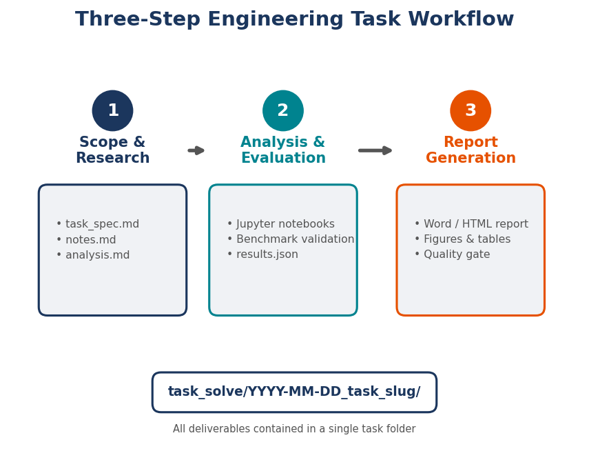
6.2 The Three-Step Workflow
Every engineering task, regardless of complexity, follows a three-step workflow: Scope and Research, Analysis and Evaluation, and Report Generation. These steps are not optional; they are enforced by the task-solving agent and by the tools that support the workflow. The three steps mirror the natural progression of engineering thought: understand the problem before solving it, solve it with rigour, and communicate the results with clarity.
Step 1: Scope and Research
The first step defines the boundaries and methods of the analysis before any computation begins. This front-loaded investment in problem definition prevents the most expensive class of errors: solving the wrong problem, using the wrong method, or applying the wrong standard.
The primary deliverable of Step 1 is the task specification (task_spec.md), a structured document that records:
- Objective: What engineering question is being answered? What decision does the analysis support?
- Scope boundaries: What is included and excluded? What simplifying assumptions are made?
- Applicable standards: Which design codes, industry standards, and regulatory requirements govern the analysis? (API, ASME, DNV, ISO, NORSOK, as identified by the
neqsim-standards-lookupskill.) - Methods: What computational methods, equations of state, correlations, and solver settings will be used? Why are these methods appropriate for the problem?
- Deliverables: What specific outputs will the analysis produce? (Tables, figures, sensitivity analyses, recommendations.)
- Acceptance criteria: What quantitative criteria determine whether the analysis is acceptable? (Mass balance closure within 0.1%, deviation from reference data less than 5%, convergence residual below $10^{-6}$.)
- Input data: What fluid compositions, operating conditions, equipment specifications, and economic parameters are used? What are their sources and uncertainties?
The secondary deliverable is the research notes (notes.md), a working document that records the literature review, summarises relevant publications and reference cases, identifies knowledge gaps, and captures engineering judgment that informs the analysis approach. Each reference document is stored in the references/ subdirectory, and for PDF documents, pdf_to_figures.py converts pages to PNG images for visual analysis of diagrams, charts, and tables.
For Standard and Comprehensive tasks, Step 1 also produces an analysis plan (analysis.md) with a physics deep-dive, alternative approaches, NeqSim capability assessment, and a list of five to ten engineering insight questions that the analysis must answer.
Step 2: Analysis and Evaluation
The second step performs the engineering calculations, produces results, and validates them. The primary computational vehicle is a Jupyter notebook (or multiple notebooks for Comprehensive tasks) that uses NeqSim's Python API to create fluids, run flash calculations, build process flowsheets, and generate figures.
Every notebook follows the structure defined by the neqsim-notebook-patterns skill:
- Setup cell: The dual-boot cell that configures NeqSim for either development or pip-installed environments.
- Fluid creation: Defining the thermodynamic system with appropriate components, EOS, and mixing rules.
- Simulation: Running the engineering calculations—flash operations, process simulations, parametric sweeps.
- Visualisation: Creating matplotlib figures with proper axis labels, units, titles, legends, and grids. A minimum of two to three figures per notebook.
- Results extraction: Collecting key numerical results, validation metrics, and figure metadata.
- Results persistence: Saving everything to
results.jsonin the task root directory.
Each figure is accompanied by a discussion cell in the notebook that documents four elements: the observation (what the figure shows, with specific numbers), the physical mechanism (why the observed behaviour occurs), the engineering implication (what the observation means for design or operation), and the recommendation (what specific action should be taken based on the finding). This structured discussion ensures that every figure contributes to the engineering narrative rather than being decorative.
Step 2 also includes mandatory benchmark validation (Section 6.7) and, for Standard and Comprehensive tasks, uncertainty and risk analysis (Section 6.8).
Before proceeding to Step 3, the consistency checker (devtools/consistency_checker.py) is run against the task folder. This tool extracts numerical values from all notebooks and from results.json, detects inconsistencies (values reported differently in different locations, scope mismatches between calculations, contradictory claims), and produces a consistency_report.json. Critical issues must be resolved before report generation.
Step 3: Report Generation
The third step transforms the analysis results into professional engineering reports. The report generator (step3_report/generate_report.py) reads task_spec.md for the front matter and results.json for the technical content, and produces two output formats:
- Word document (Report.docx): For formal distribution, peer review, and regulatory submission. Includes formatted equations (rendered as images), numbered figures with captions, structured tables, and a references section.
- HTML document (Report.html): For interactive viewing, with KaTeX-rendered equations, full-resolution figures, colour-coded risk matrices, and navigation support for Comprehensive-scale reports.
The report generator automatically formats several sections based on the content of results.json:
- Key results are rendered as a styled table with auto-detected units (parsing suffixes like
_C,_bar,_kg). - Validation results appear as pass/fail tables with colour coding (green for pass, red for fail).
- Benchmark validation is formatted with PASS/FAIL indicators and deviation percentages.
- Uncertainty analysis produces P10/P50/P90 tables and tornado diagram data.
- Risk evaluation generates colour-coded risk registers with ISO 31000 severity levels (High = red, Medium = orange, Low = green).
- Equations are rendered using KaTeX in HTML and as PNG images in Word.
- Figure captions are numbered automatically and cross-referenced from the discussion.
6.3 The Task Folder Structure
Every task creates a self-contained folder under task_solve/ with a standardised directory structure. The folder name follows the convention YYYY-MM-DD_task_slug, ensuring chronological ordering and human-readable identification. The folder is created using devtools/new_task.py:
python devtools/new_task.py "Hydrate formation in export pipeline" --type B --author "Engineer Name"
The --type flag classifies the task: A = Property, B = Process, C = PVT, D = Standards, E = Feature, F = Design, G = Workflow. This classification helps future searches and organises the task log.
The resulting directory tree is:
task_solve/2026-04-18_hydrate_formation_export_pipeline/
├── README.md # Auto-generated overview
├── results.json # Central results (populated in Step 2)
├── consistency_report.json # Output of consistency checker
├── step1_scope_and_research/
│ ├── task_spec.md # Specification (filled in Step 1)
│ ├── notes.md # Research notes (filled in Step 1)
│ ├── analysis.md # Deep analysis (Standard/Comprehensive)
│ ├── neqsim_improvements.md # Proposed NeqSim enhancements
│ └── references/ # Papers, standards, data sources
│ ├── paper1.pdf
│ └── design_basis.xlsx
├── step2_analysis/
│ ├── 01_hydrate_prediction.ipynb # Main analysis notebook
│ ├── 02_inhibitor_dosing.ipynb # Supporting analysis
│ ├── 03_benchmark_validation.ipynb # Benchmark against reference data
│ └── 04_uncertainty_risk.ipynb # Monte Carlo + risk register
├── step3_report/
│ ├── generate_report.py # Report generator script
│ ├── Report.docx # Generated Word report
│ └── Report.html # Generated HTML report
└── figures/
├── hydrate_curve.png # Figures saved from notebooks
├── inhibitor_sensitivity.png
└── tornado_diagram.png
Each file has a specific purpose, and the separation of concerns—scope in Step 1, analysis in Step 2, communication in Step 3—prevents the common pathology where analysis, documentation, and code are intermingled in a single unwieldy notebook.
6.4 Adaptive Scale
Not every engineering question requires a multi-notebook analysis with uncertainty quantification and a formal report. The task-solving workflow adapts its depth to match the complexity of the question through three scale levels.
Quick Scale
A Quick task addresses a single engineering property or straightforward calculation: "What is the dew point of this gas at 50 bar?" or "What is the density of CO2 at 100 bar and 40°C?" Quick tasks produce:
- A minimal
task_spec.md(objective, fluid composition, conditions). - A single notebook with a few cells.
- A brief
results.jsonwithkey_resultsonly. - No formal report—the notebook output is the deliverable.
Quick tasks typically complete in minutes and do not require uncertainty analysis, risk evaluation, or benchmark validation. They are the engineering equivalent of back-of-envelope calculations, performed with simulation-quality rigour.
Standard Scale
A Standard task addresses a process simulation, PVT study, or equipment design: "Size a three-phase separator for this feed," "Evaluate the flow assurance risks for this pipeline," or "Determine the optimum reflux ratio for this debutaniser." Standard tasks produce:
- A full
task_spec.mdwith standards, methods, and acceptance criteria. - Complete research notes with literature review.
- One or two analysis notebooks with multiple figures and tables.
- A benchmark validation notebook comparing results against reference data.
- An uncertainty and risk analysis notebook with Monte Carlo simulation and risk register.
- A complete
results.jsonwith all fields populated. - A professional Word + HTML report.
Standard tasks typically require hours of agent time and produce reports of 10–30 pages.
Comprehensive Scale
A Comprehensive task addresses a multi-discipline study: "Evaluate the economic viability of developing this gas field with a subsea tieback to an existing host platform," or "Design the topside process for this FPSO." Comprehensive tasks produce:
- A detailed
task_spec.mdwith multiple disciplines, interfacing requirements, and phased deliverables. - An analysis plan (
analysis.md) with physics deep-dive and solution architecture. - Multiple analysis notebooks covering different disciplines (thermodynamics, process, mechanical, economics, flow assurance).
- Extensive benchmark validation against multiple independent sources.
- Uncertainty analysis with full NeqSim process simulations inside the Monte Carlo loop (not simplified correlations).
- Risk evaluation across multiple categories (Market, Technical, Cost, Schedule, HSE, Regulatory).
- A comprehensive
results.jsonwith tables, equations, figure discussions, and references. - A navigation-enabled HTML report with clickable section links.
Comprehensive tasks may require days of agent time and produce reports of 50–100+ pages [22].
6.5 The Results.json Schema
The results.json file is the central data structure of the task-solving workflow. It serves as the single source of truth for all analysis results, bridging the gap between computational notebooks and generated reports. The report generator reads this file and automatically formats its contents into professional documentation. The following describes each field in the schema.
key_results
A dictionary of named results with their values. Keys use descriptive names with unit suffixes that the report generator auto-detects:
{
"key_results": {
"hydrate_formation_temperature_C": -2.3,
"meg_injection_rate_litre_per_hr": 145.0,
"pressure_drop_bar": 12.5,
"separator_diameter_m": 2.8,
"npv_after_tax_MNOK": 3450.0
}
}
validation
A dictionary of validation metrics that the report generator renders as a pass/fail table:
{
"validation": {
"mass_balance_error_pct": 0.01,
"energy_balance_error_pct": 0.05,
"acceptance_criteria_met": true,
"reference_data_deviation_pct": 2.3
}
}
figure_captions and figure_discussion
Figure captions map filename to description. Figure discussions provide structured analysis for each figure:
{
"figure_captions": {
"hydrate_curve.png": "Hydrate formation temperature vs pressure for the export gas"
},
"figure_discussion": [
{
"figure": "hydrate_curve.png",
"title": "Hydrate Formation Boundary",
"observation": "The hydrate formation temperature increases from -5°C at 20 bar to 18°C at 150 bar.",
"mechanism": "Higher pressure stabilises the hydrate crystal structure by increasing the occupancy of gas molecules in the water cages.",
"implication": "At the pipeline operating pressure of 120 bar, hydrate formation occurs at 15°C, which is above the minimum seabed temperature of 4°C.",
"recommendation": "Continuous MEG injection at 30 wt% is required to provide a 10°C subcooling margin."
}
]
}
tables and equations
Custom tables and LaTeX equations for inclusion in the report:
{
"tables": [
{
"title": "Sensitivity to MEG Concentration",
"headers": ["MEG wt%", "Hydrate T (°C)", "Subcooling Margin (°C)"],
"rows": [
[20, 8.5, 4.5],
[25, 3.2, 9.8],
[30, -2.1, 15.1]
]
}
],
"equations": [
{
"label": "Hammerschmidt Equation",
"latex": "\\Delta T = \\frac{K_H \\cdot w}{M(100 - w)}"
}
]
}
uncertainty
Monte Carlo analysis results. The schema supports both the statistical summary and the individual parameter contributions for tornado diagrams:
{
"uncertainty": {
"method": "Monte Carlo with full NeqSim process simulation",
"n_simulations": 500,
"simulation_engine": "NeqSim (CPA EOS, PipeBeggsAndBrills)",
"input_parameters": [
{
"name": "Water Cut",
"unit": "%",
"low": 5,
"base": 15,
"high": 30,
"distribution": "triangular"
},
{
"name": "Seabed Temperature",
"unit": "C",
"low": 2,
"base": 4,
"high": 6,
"distribution": "uniform"
}
],
"output_parameter": "Required MEG rate (L/hr)",
"p10": 95.0,
"p50": 145.0,
"p90": 220.0,
"mean": 152.0,
"std": 45.0,
"tornado": [
{
"parameter": "Water Cut (5-30%)",
"npv_low": 85,
"npv_high": 230,
"swing": 145
}
]
}
}
A critical requirement is that Monte Carlo simulations for Standard and Comprehensive tasks must use full NeqSim process simulations inside the loop—not simplified Python correlations. When NeqSim has a class that performs the relevant calculation (e.g., PipeBeggsAndBrills for pipeline hydraulics, SimpleReservoir for production profiles), that class must be used. Simplified models are acceptable only when NeqSim has no equivalent class [22].
risk_evaluation
Risk register following the ISO 31000 5×5 matrix framework:
{
"risk_evaluation": {
"risks": [
{
"id": "R1",
"description": "Hydrate plug formation during unplanned shutdown",
"category": "Technical",
"likelihood": "Possible",
"consequence": "Major",
"risk_level": "High",
"mitigation": "Install rapid MEG injection system with backup pump"
},
{
"id": "R2",
"description": "MEG supply disruption from platform logistics",
"category": "Schedule",
"likelihood": "Unlikely",
"consequence": "Moderate",
"risk_level": "Medium",
"mitigation": "Maintain 30-day MEG buffer storage"
}
],
"overall_risk_level": "Medium",
"risk_matrix_used": "5x5 (ISO 31000)"
}
}
The report generator renders risks with colour-coded badges (High = red, Medium = orange, Low = green) and produces a summary table that gives immediate visual indication of the project risk profile [23].
6.6 The Development Flywheel
The task-solving workflow creates a self-reinforcing improvement cycle—a development flywheel—where every completed task enriches the repository and makes future tasks faster and more reliable.
From Tasks to Examples
Every Jupyter notebook created during a task is a candidate for the examples library. When a task demonstrates a useful pattern—a novel fluid characterisation approach, an innovative process configuration, a useful visualisation technique—the notebook is copied to examples/notebooks/ and made available to future users and agents. Over time, the examples library grows to cover an increasingly broad range of engineering scenarios, reducing the need to create new notebooks from scratch.
From Tasks to Skills
Patterns that recur across multiple tasks are candidates for skill codification. If several flow assurance tasks encounter the same convergence issue with hydrate calculations, the troubleshooting pattern is added to the neqsim-troubleshooting skill. If a new equipment type requires a specific API sequence that is not documented, the pattern is added to neqsim-api-patterns. This feedback loop ensures that the skills library continuously evolves to reflect real operational experience.
From Tasks to Code
Some tasks reveal gaps in NeqSim's capabilities—missing equipment types, inaccurate correlations, or missing API convenience methods. The neqsim_improvements.md file in Step 1 captures these gaps as proposals for new implementations (NEqSim Improvement Proposals, or NIPs). When accepted, these become Java code contributions to the NeqSim main branch, expanding the toolkit's capabilities for all future users.
The Task Log
The docs/development/TASK_LOG.md file maintains a chronological record of every completed task. Each entry records the date, title, type classification, keywords, path to the solution, and key notes about decisions or gotchas encountered. Before starting a new task, agents search this log for similar past work. Finding a relevant precedent can reduce the effort for a new task from hours to minutes, as the agent can adapt an existing analysis rather than building from scratch.
The flywheel effect is cumulative: each task makes the system slightly better—more examples, more skills, more code, more precedents—and the improved system makes each subsequent task slightly easier. Over dozens to hundreds of tasks, this compounding improvement is substantial [11].
6.7 Benchmark Validation
Benchmark validation is a mandatory component of every Standard and Comprehensive task. It ensures that the NeqSim calculations produce results consistent with independently established reference values. Without benchmark validation, there is no basis for trusting the simulation results—they might be correct, or they might reflect a modelling error, an API misuse, or a solver failure that produced converged but inaccurate output.
Sources of Reference Data
Benchmark data comes from multiple sources, selected based on the engineering domain:
- NIST databases: Thermodynamic and transport properties for pure components and well-characterised mixtures. The NIST Chemistry WebBook and REFPROP provide reference-grade data for density, viscosity, thermal conductivity, and phase equilibrium.
- Textbook examples: Published worked examples from standard thermodynamics and process engineering textbooks (Smith, Van Ness, and Abbott; Seader, Henley, and Roper; Whitson and Brulé).
- Published case studies: Peer-reviewed papers that report simulation or experimental results for specific systems—natural gas processing plants, CO2 transport pipelines, hydrate inhibitor performance.
- Industry benchmarks: Standard test cases maintained by industry consortia (GPA midstream, GPSA data book, API technical data).
- Software cross-validation: Results from other commercial simulation tools for the same system, acknowledging that these are not independent in the strictest sense but provide useful consistency checks.
Validation Methodology
The benchmark validation notebook (XX_benchmark_validation.ipynb) follows a structured format:
- Reference data declaration: State the source, the specific figure, table, or dataset number, and the conditions (temperature, pressure, composition) for each reference point.
- NeqSim calculation: Reproduce the reference conditions in NeqSim and extract the corresponding output.
- Comparison: For at least three reference data points, compute the absolute and percentage deviation between NeqSim and the reference.
- Visualisation: Create a parity plot (NeqSim vs reference) or a deviation plot (error vs condition) that makes the agreement or disagreement visually apparent.
- Assessment: State whether the deviations are within the acceptance criteria defined in
task_spec.md.
The results are saved to results.json under the benchmark_validation key, which the report generator renders as a table with PASS/FAIL colour coding for each data point.
When Benchmarks Fail
When NeqSim results deviate from reference data beyond the acceptance criteria, the analysis does not simply note the failure and proceed. The agent investigates the cause: Is the equation of state inappropriate for the conditions? Are binary interaction parameters poorly tuned? Is the reference data itself suspect (different standards, different measurement conditions)? The investigation is documented in the notebook, and the conclusion—whether it is a known EOS limitation, a data quality issue, or a NeqSim bug—is recorded in results.json [21].
6.8 Uncertainty and Risk
Engineering decisions are made under uncertainty. Fluid compositions have measurement errors. Reservoir volumes are estimated from seismic interpretation. Equipment performance degrades over time. Commodity prices fluctuate. Ignoring these uncertainties produces analyses that are precise but not accurate—they give a single number that implies a false level of confidence in the result.
Monte Carlo Uncertainty Analysis
The uncertainty analysis notebook (XX_uncertainty_risk_analysis.ipynb) implements Monte Carlo simulation to propagate input uncertainties through the NeqSim process model and produce probabilistic output distributions.
The methodology proceeds as follows:
- Identify uncertain parameters: List the input parameters that have significant uncertainty. Common uncertain parameters include fluid composition, reservoir volume (GIP/STOIIP), well productivity index, commodity prices, and cost multipliers.
- Assign distributions: For each uncertain parameter, specify a probability distribution and its parameters. Triangular distributions (low, mode, high) are most common for engineering estimates. Lognormal distributions are used for parameters that are strictly positive with right-skewed uncertainty (e.g., reservoir volumes).
- Sample and simulate: For each Monte Carlo iteration (minimum 200 iterations when using full NeqSim simulations, minimum 1000 for simplified models), sample from the input distributions, run the NeqSim process simulation with the sampled inputs, and record the output of interest.
- Statistical summary: Compute P10, P50 (median), P90, mean, and standard deviation of the output distribution. P10 and P90 represent the range within which 80% of outcomes fall, providing a practical measure of uncertainty.
- Tornado diagram: Run one-at-a-time sensitivity analysis, varying each input parameter from its low to high value while holding others at base case, to produce a tornado diagram that ranks input parameters by their impact on the output.
A critical requirement is that the Monte Carlo loop must use full NeqSim process simulations, not simplified Python correlations. When the analysis involves pipeline hydraulics, the loop must call PipeBeggsAndBrills for each iteration. When it involves production profiles, it must use SimpleReservoir. Simplified correlations are acceptable only for parameters where NeqSim has no equivalent class (e.g., some cost estimation functions). This requirement ensures that the uncertainty analysis captures the nonlinear behaviour of the physical system, including phase transitions, retrograde phenomena, and equipment capacity constraints that simplified models would miss [22].
Performance Optimisation
Running hundreds of full process simulations inside a Monte Carlo loop can be computationally expensive. The workflow provides optimisation strategies:
- Cache invariant results: If some NeqSim calculations do not depend on the varying parameter (e.g., the base SURF cost does not change with gas price), compute them once outside the loop and reuse the result.
- Classify parameters: In tornado sensitivity analysis, distinguish between "technical" parameters (which require a NeqSim re-run when changed, such as fluid composition or reservoir pressure) and "economic" parameters (which only affect the cash flow calculation, such as commodity price or discount rate). For economic-only parameters, reuse the base production profile and recalculate only the financial metrics.
- Parallel execution: For independent Monte Carlo iterations, use the
neqsim_runnersupervised execution framework, which runs each job in an isolated subprocess with automatic retry.
ISO 31000 Risk Assessment
The risk evaluation supplements quantitative uncertainty analysis with qualitative risk assessment following the ISO 31000 standard [23]. The risk register identifies six to ten risks across standardised categories:
- Market risk: Commodity price volatility, demand uncertainty, contract terms.
- Technical risk: Reservoir performance below expectations, equipment underperformance, unexpected fluid behaviour.
- Cost risk: CAPEX overruns, OPEX increases, supply chain disruptions.
- Schedule risk: Delays in drilling, fabrication, or installation.
- HSE risk: Safety incidents, environmental releases, occupational health.
- Regulatory risk: Changes in fiscal terms, emission regulations, licensing requirements.
Each risk is assessed on two dimensions using a 5×5 matrix: likelihood (Rare, Unlikely, Possible, Likely, Almost Certain) and consequence (Insignificant, Minor, Moderate, Major, Catastrophic). The combination determines the risk level: Low, Medium, High, or Extreme. For each identified risk, the register specifies mitigation measures that reduce either the likelihood or the consequence.
The risk register is saved to results.json under the risk_evaluation key, and the report generator renders it as a colour-coded table that provides immediate visual communication of the project risk profile. This structured approach ensures that risk considerations are integrated into every engineering analysis, not treated as an afterthought.
6.9 The Programmatic Quality Gate
Before the report can be generated, the results.json file must pass a programmatic validation gate implemented by NeqSim's TaskResultValidator Java class. This validator checks that:
- All required fields are present (
key_results,validation,approach,conclusions). - Key results contain at least one entry with a numeric value.
- Validation metrics include at least one quantitative check.
- Figure captions cover all figures referenced in figure discussions.
- Uncertainty analysis, when present, includes the required statistical fields (P10, P50, P90).
- Risk evaluation, when present, contains at least one risk with all required fields.
- References are properly formatted with IDs and text.
The validator returns a structured report with error counts, warning counts, and detailed messages for each issue. Errors must be fixed before proceeding; warnings should be addressed for Standard and Comprehensive tasks. This automated quality gate prevents incomplete or malformed results from being compiled into reports, maintaining a consistent standard across all analyses.
import jpype
TaskResultValidator = jpype.JClass("neqsim.util.agentic.TaskResultValidator")
with open(str(TASK_DIR / "results.json"), "r") as f:
json_str = f.read()
report = TaskResultValidator.validate(json_str)
print(f"Valid: {report.isValid()} | Errors: {report.getErrorCount()}")
assert report.isValid(), "results.json failed validation"
6.10 Summary
Key points from this chapter:
- The task-solving workflow enforces structure on every engineering analysis: a specification before calculation, validation before reporting, and a machine-readable results format that enables automated report generation.
- The three-step workflow—Scope and Research, Analysis and Evaluation, Report Generation—mirrors the natural progression of engineering thought and produces reproducible, auditable deliverables.
- Every task creates a self-contained folder with a standardised directory structure, ensuring that analyses are portable, searchable, and reusable.
- Adaptive scaling matches the depth of analysis to the complexity of the question: Quick tasks produce minimal output, Standard tasks produce full reports with uncertainty and risk, and Comprehensive tasks produce multi-notebook studies with extensive validation.
- The
results.jsonschema is the central data structure, encoding key results, validation metrics, figures, tables, equations, uncertainty quantification, and risk assessment in a format that both humans and machines can read. - The development flywheel converts task outputs into repository assets—examples, skills, code improvements, and task log entries—creating a compounding improvement effect across the engineering team.
- Benchmark validation against independent reference data is mandatory, ensuring that simulation results are trustworthy before they inform engineering decisions.
- Monte Carlo uncertainty analysis with full NeqSim process simulations and ISO 31000 risk assessment are standard components of every Standard and Comprehensive analysis.
Exercises
- Exercise 6.1: Create a
task_spec.mdfor the following engineering question: "Determine the minimum MEG injection rate to prevent hydrate formation in a 45 km subsea pipeline operating at 120 bar with a seabed temperature of 4°C." Include: objective, scope boundaries, applicable standards, methods, deliverables, and acceptance criteria. - Exercise 6.2: Design the
results.jsonschema for a separator sizing task. Include appropriate entries inkey_results(at least 5 results with unit suffixes),validation(mass balance, acceptance criteria),figure_captions(at least 2 figures), and one entry intables. Follow the conventions described in Section 6.5. - Exercise 6.3: For a Monte Carlo uncertainty analysis of a gas pipeline pressure drop, identify five uncertain input parameters, assign distributions (type, low, base, high), and explain which parameters are "technical" (require NeqSim re-run) versus "economic" (reuse base simulation results). Estimate how caching invariant results would reduce the total computation time.
- Exercise 6.4: Write a risk register with five risks for a subsea tieback project. For each risk, specify the category (Market, Technical, Cost, Schedule, HSE, or Regulatory), likelihood, consequence, risk level, and mitigation measure. Explain how the ISO 31000 5×5 matrix maps likelihood and consequence to risk level.
- Exercise 6.5: A task-solving agent completes an analysis but the consistency checker reports that the "pressure drop" reported in
results.json(12.5 bar) differs from the value in the notebook output cell (12.8 bar). Describe the diagnostic process: what could cause this inconsistency, how to identify the correct value, and how to prevent such discrepancies in future tasks.
7 The MCP Server — Governed Engineering Calculations
Learning Objectives
After reading this chapter, the reader will be able to:
- Explain the governance challenges that arise when deploying AI-assisted engineering calculations beyond individual developer workstations into enterprise environments
- Describe the Model Context Protocol (MCP) and its role as an open standard for connecting AI models to external computational tools
- Design and deploy a tiered tool architecture that balances accessibility with safety for thermodynamic and process simulation tools
- Implement traceability and audit mechanisms that satisfy regulatory requirements for engineering calculations
7.1 The Governance Challenge
The preceding chapters established how AI coding agents — operating within VS Code through GitHub Copilot — can generate, execute, and validate thermodynamic and process simulation code using NeqSim. For the individual engineer fluent in both Python and thermodynamics, this workflow represents a transformative acceleration. But the oil and gas industry does not operate through individual heroics. It operates through teams, management-of-change processes, design reviews, and regulatory audits. The question that inevitably follows any successful pilot is: how do we scale this to the rest of the organisation?
The challenge is multifaceted. First, not every engineer who needs thermodynamic calculations is a proficient programmer. A facilities engineer sizing a separator, a pipeline engineer checking hydrate formation temperatures, or a production engineer evaluating gas lift performance — all of these professionals need access to rigorous thermodynamic calculations, but their primary expertise lies in their engineering domain, not in writing Python scripts that correctly initialise equations of state. Second, when calculations inform safety-critical decisions — pressure relief sizing, flare system design, pipeline integrity assessments — the organisation needs assurance that the underlying models are correctly configured, that inputs are physically reasonable, and that results can be traced back to their provenance. Third, enterprise deployment demands standardisation: consistent interfaces, centralised logging, access control, and the ability to swap underlying AI models without rewriting integration code [21].
The developer-facing agent workflow described in Chapters 4–6 solves the problem for one class of user but leaves these enterprise concerns unaddressed. A VS Code agent generates code on the fly, and while it validates results through unit tests and benchmark comparisons, the validation is ephemeral — it exists in the notebook of whoever ran it. There is no centralised record of what calculation was performed, with what inputs, using which model version, and yielding what outputs. For an industry where a single miscalculated relief valve set pressure can result in catastrophic failure, this is insufficient.
What is needed is a governed computation layer: a service that exposes NeqSim's capabilities through a standardised protocol, with built-in input validation, output verification, traceability, and access control. The service must be accessible from any AI client — not just VS Code — so that engineers can interact with it through conversational interfaces, web applications, or automated pipelines. And it must impose appropriate guardrails without destroying the flexibility that makes AI-assisted engineering valuable in the first place.
This chapter describes how the Model Context Protocol (MCP) provides exactly this governed computation layer for NeqSim.
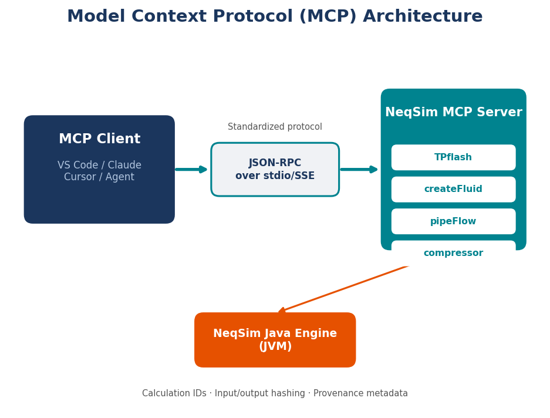
7.2 The Model Context Protocol (MCP)
The Model Context Protocol is an open standard, introduced by Anthropic in late 2024, that defines a universal interface for connecting AI language models to external tools, data sources, and computational services [24]. Before MCP, every integration between an AI model and an external tool required custom glue code: bespoke function-calling schemas, provider-specific tool definitions, and fragile parsing of model outputs into API calls. MCP replaces this patchwork with a single, standardised protocol.
The architecture follows a client-server model. An MCP server exposes a set of tools — callable functions with typed input schemas and output formats — along with resources (data that models can read) and prompts (reusable interaction templates). An MCP client, embedded in any LLM host application, discovers available tools through the protocol's discovery mechanism, presents them to the language model as callable functions, and handles invocation, error propagation, and result formatting.
The transport layer uses JSON-RPC 2.0, a lightweight remote procedure call protocol that is well-supported across programming languages. Communication can occur over standard input/output (for local processes), HTTP with Server-Sent Events (for networked deployments), or WebSocket connections (for persistent bidirectional communication). This flexibility means the same MCP server can be used locally by a desktop application and remotely by a cloud-hosted AI service.
The key innovation of MCP is tool discovery. When a client connects to an MCP server, it sends a tools/list request. The server responds with a catalogue of available tools, each described by a name, a human-readable description, and a JSON Schema defining its input parameters. The language model uses these descriptions to decide which tool to invoke for a given user request. The client then sends a tools/call request with the tool name and arguments, and the server returns the result.
This architecture decouples the AI model from the computational backend. The model does not need to know how NeqSim works internally — it only needs to know that a tool called runFlash accepts a fluid composition, temperature, pressure, and equation of state, and returns phase equilibrium results. If NeqSim's internal API changes, only the MCP server needs updating; all clients continue to work unchanged. If a new AI model replaces the current one, no server changes are needed — the new model simply reads the same tool descriptions and invokes them the same way.
For engineering applications, MCP provides several additional benefits. The server controls exactly which capabilities are exposed and can enforce input validation before any calculation proceeds. The server can log every invocation with full input/output records for audit purposes. And because the tool descriptions include rich type information and human-readable documentation, they serve as living API documentation that is always in sync with the actual implementation.
7.3 NeqSim MCP Server Architecture
The NeqSim MCP server is implemented as a Java Spring Boot application that wraps NeqSim's thermodynamic and process simulation capabilities in MCP-compliant tool definitions [11]. The server runs as a standalone process — either locally on an engineer's workstation or as a containerised service in a cloud environment — and communicates with MCP clients over HTTP with Server-Sent Events or standard I/O.
The architectural decision to implement the server in Java, rather than as a Python wrapper, deserves explanation. NeqSim is a Java library. While it can be accessed from Python through JPype (as the notebook-based workflows in previous chapters demonstrate), running NeqSim natively in Java eliminates the overhead of the Java-Python bridge, avoids class loading issues that occasionally affect JPype in long-running processes, and ensures that the full NeqSim API is available without translation layer limitations. The Spring Boot framework provides robust HTTP handling, dependency injection, health monitoring, and production-ready deployment features that would require significant additional work in a custom implementation.
The Three-Tier Tool Model
Not all engineering calculations carry the same risk. Computing the density of methane at standard conditions is a well-characterised problem with abundant reference data. Simulating a complete gas processing plant with recycle streams and distillation columns involves far more modelling assumptions, is harder to validate automatically, and requires deeper domain expertise to interpret correctly. The NeqSim MCP server reflects this reality through a three-tier tool classification system.
Tier 1 — Trusted Core tools are extensively validated against published reference data, have well-understood limitations, and produce results that can be automatically verified through mass balance, energy balance, and benchmark comparison. These tools are available in all deployment profiles and require no special authorisation.
| Tool | Description |
|---|---|
runFlash |
TP, PH, PS, TV flash calculations with full phase property output |
runBatch |
Multiple flash calculations in a single call for sensitivity studies |
getPropertyTable |
Sweep temperature or pressure to generate property tables |
getPhaseEnvelope |
PT phase envelope with cricondenbar and cricondentherm |
searchComponents |
Search the NeqSim component database by name |
validateInput |
Pre-validate flash or process JSON before execution |
getCapabilities |
Discover available models, flash types, and equipment |
getExample |
Retrieve JSON templates for different calculation types |
getSchema |
Get input/output JSON schemas for any tool |
listComponents |
List available thermodynamic components |
calculateStandard |
ISO 6976 gas properties (GCV, Wobbe, density) |
convertUnits |
Engineering unit conversion with dimensional analysis |
getFluidProperties |
Quick single-point property lookup |
compareFluids |
Side-by-side comparison of two fluid compositions |
Tier 2 — Engineering Advanced tools handle more complex calculations that require domain expertise to configure correctly and interpret results. They are available to engineers with appropriate training and in deployment profiles that include peer review workflows.
| Tool | Description |
|---|---|
runProcess |
Process simulation with equipment flowsheets |
runPVT |
PVT experiments (CME, CVD, differential liberation) |
runPipeline |
Pipeline hydraulics with Beggs and Brill correlations |
runFlowAssurance |
Hydrate, wax, and corrosion predictions |
runBlowdown |
Vessel depressurisation transient simulation |
runDistillation |
Distillation column simulation |
designEquipment |
Equipment sizing and mechanical design |
runHeatExchanger |
Heat exchanger thermal-hydraulic design |
optimiseProcess |
Process optimisation with objective functions |
runDynamic |
Dynamic process simulation with controllers |
assessFeasibility |
Equipment design feasibility reports |
Tier 3 — Experimental tools represent cutting-edge capabilities that are under active development, have limited validation data, or produce results that require expert review before use in engineering decisions.
| Tool | Description |
|---|---|
analyseField |
Field development concept screening |
estimateCost |
CAPEX/OPEX cost estimation |
runReactor |
Chemical reactor simulation |
predictEmissions |
Greenhouse gas emission calculations |
runElectrolyte |
Electrolyte thermodynamics for produced water |
designWell |
Well casing and completion design |
runCCS |
CO2 capture and storage analysis |
runHydrogen |
Hydrogen blending and transport |
generateReport |
Automated engineering report generation |
runMonteCarlo |
Uncertainty quantification via Monte Carlo |
optimiseNetwork |
Production network optimisation |
pinchAnalysis |
Heat integration and pinch analysis |
runSteamCycle |
Steam and power generation modelling |
compareModels |
Cross-EOS model comparison and benchmarking |
Each tool definition includes not only the JSON Schema for its inputs and outputs but also metadata specifying the tier, required domain expertise, known limitations, applicable standards, and recommended validation steps. This metadata is available to both the AI client (which can use it to provide appropriate caveats in its responses) and to the governance layer (which uses it for access control and audit classification).
7.4 Deployment Profiles
The three-tier tool model defines the inherent risk level of each calculation. Deployment profiles determine which tiers are available in a given operational context, reflecting the principle that access to computational tools should be commensurate with the expertise of the user and the governance requirements of the application.
Four standard deployment profiles are defined:
| Profile | Tier 1 (Core) | Tier 2 (Advanced) | Tier 3 (Experimental) | Primary Use Case |
|---|---|---|---|---|
DESKTOP_ENGINEER |
All | Selected | None | Individual engineer workstation |
STUDY_TEAM |
All | All | Selected | Multi-discipline study teams |
DIGITAL_TWIN |
All | Selected | None | Continuous online model updating |
ENTERPRISE |
All | All | All | Production APIs with full audit |
The DESKTOP_ENGINEER profile is designed for the most common deployment scenario: an individual engineer using an AI assistant (such as Claude Desktop or Continue.dev) to perform routine thermodynamic calculations. All Tier 1 tools are available without restriction. Selected Tier 2 tools — specifically runProcess, runPipeline, and designEquipment — are available but with enhanced input validation and automatic result flagging when calculations involve conditions outside well-validated ranges. Tier 3 tools are not available, ensuring that experimental capabilities cannot be inadvertently used in design calculations.
The STUDY_TEAM profile unlocks the full Tier 2 suite and selected Tier 3 tools for teams conducting multi-discipline engineering studies. In this context, calculations are typically reviewed by multiple engineers before being incorporated into design documents, providing a human review layer that complements the automated validation. The profile enables analyseField, estimateCost, and runMonteCarlo from Tier 3, as these are commonly needed in concept screening and feasibility studies.
The DIGITAL_TWIN profile is optimised for continuous operation rather than interactive use. It enables the Tier 1 and selected Tier 2 tools that are relevant for real-time model updating — flash calculations, property lookups, and process simulation — but disables tools that are computationally expensive or not meaningful in a real-time context (such as Monte Carlo analysis or field development screening). The profile also enables streaming output mode, where intermediate results are sent as Server-Sent Events rather than waiting for complete calculation.
The ENTERPRISE profile is the most permissive in terms of tool access — all three tiers are available — but the most restrictive in terms of governance. Every tool invocation is logged with full input/output records, each result carries a cryptographic hash for tamper detection, and Tier 2 and Tier 3 results are automatically flagged for peer review. This profile is intended for production API deployments where the MCP server is integrated into automated workflows (such as safety case management systems or production optimisation platforms) and where full traceability is a regulatory requirement.
Profile selection is configured at server startup through environment variables or configuration files. The server enforces the profile strictly: attempting to invoke a tool that is not available in the active profile returns a structured error with an explanation of why the tool is restricted and which profile would enable it.
7.5 Auto-Validation and Benchmark Trust
A fundamental principle of the NeqSim MCP server is that no calculation result is returned without validation. Every tool invocation passes through a validation pipeline that checks both inputs and outputs, and the result carries a trust assessment that indicates how much confidence the user should place in it.
Input Validation
Before any NeqSim calculation proceeds, the server validates the request against physical constraints and known model limitations:
- Component validation: All component names are checked against the NeqSim database. Misspelled names trigger fuzzy matching suggestions (e.g., "metane" → "Did you mean 'methane'?").
- Temperature bounds: Temperatures below 50 K or above 1500 K are flagged. Temperatures below the triple point of any component trigger a warning.
- Pressure bounds: Pressures below 0.001 bara or above 10,000 bara are flagged. Negative pressures are rejected.
- Composition validation: Mole fractions must sum to 1.0 (within tolerance of 0.001). Negative mole fractions are rejected. Components present at less than 1 ppm are flagged as potentially insignificant.
- EOS compatibility: The selected equation of state is checked against the components present. For example, selecting SRK for a system containing water, methanol, and MEG triggers a recommendation to use CPA instead, since SRK cannot model the hydrogen bonding interactions that dominate these systems.
Each validation issue is classified as an error (calculation cannot proceed), warning (calculation will proceed but results may be unreliable), or info (advisory). The validation result is included in the response alongside the calculation results, ensuring that the AI client — and through it, the user — is always aware of any concerns.
Output Validation
After the calculation completes, the server validates the results:
- Mass balance: For process simulations, inlet and outlet mass flows are compared. Imbalances greater than 0.1% trigger a warning.
- Energy balance: For equipment with heat exchange, energy balances are checked.
- Physical reasonableness: Densities, viscosities, and heat capacities are checked against order-of-magnitude bounds. A gas density of 500 kg/m³ at low pressure would be flagged.
- Phase identification: The server verifies that phase labels (gas, liquid, aqueous) are consistent with the calculated phase properties.
Benchmark Trust Framework
Beyond basic validation, the server assesses result quality through comparison with benchmark data. The trust framework assigns one of four levels:
| Trust Level | Criteria | Interpretation |
|---|---|---|
| HIGH | Conditions within validated range; benchmark deviation < 2% | Suitable for design calculations |
| MEDIUM | Conditions near validated range boundary; deviation 2–5% | Suitable for screening; verify critical values |
| LOW | Conditions outside validated range; deviation 5–15% | Indicative only; independent verification required |
| UNVALIDATED | No benchmark data available for comparison | Treat as preliminary estimate |
The benchmark database is compiled from published reference data (NIST, DIPPR, GPSA), industry-standard correlations, and NeqSim's own regression test suite [15]. Each benchmark entry specifies the component system, conditions, property, reference value, uncertainty, and source. When a calculation falls within the parameter space covered by a benchmark entry, the server automatically compares the result and reports the deviation.
This trust framework serves a crucial role in the agentic workflow. When an AI agent receives a result with HIGH trust, it can present it to the user with confidence. When it receives a LOW or UNVALIDATED result, it can proactively add caveats, suggest additional validation steps, or recommend that the user consult a subject matter expert. The trust level becomes part of the agent's reasoning process, not just an afterthought.
7.6 Traceability and Audit
Engineering calculations in the oil and gas industry are not ephemeral — they persist as part of the design basis for facilities that may operate for decades. When a regulator asks "How was this relief valve set pressure determined?", the answer must be traceable to specific inputs, models, and assumptions. The NeqSim MCP server provides this traceability through a comprehensive audit schema.
Every tool invocation generates a traceability record with the following structure:
{
"calculationId": "calc-2026-04-18-a7b3c9d2",
"timestamp": "2026-04-18T14:32:07.123Z",
"tool": "runFlash",
"tier": "CORE",
"profile": "DESKTOP_ENGINEER",
"inputHash": "sha256:3f8a92b1...",
"input": {
"components": {"methane": 0.85, "ethane": 0.10, "propane": 0.05},
"temperature": {"value": 25.0, "unit": "C"},
"pressure": {"value": 50.0, "unit": "bara"},
"eos": "SRK",
"flashType": "TP"
},
"outputHash": "sha256:7c2d41e8...",
"validation": {
"inputValidation": {"status": "PASS", "issues": []},
"outputValidation": {"status": "PASS", "issues": []},
"trustLevel": "HIGH",
"benchmarkDeviation": 0.3
},
"neqsimVersion": "3.7.0",
"serverVersion": "1.2.0",
"executionTimeMs": 127
}
The calculationId is a unique identifier that can be referenced in engineering documents. The inputHash and outputHash are cryptographic hashes that enable tamper detection — if either the input or output is modified after the fact, the hash will not match. The neqsimVersion records exactly which version of the calculation engine was used, enabling reproducibility even years later.
For the ENTERPRISE deployment profile, these records are persisted to a centralised audit database. The server exposes additional administrative tools for querying the audit trail: retrieve a calculation by ID, search calculations by date range, filter by tool or trust level, and generate compliance reports.
This audit infrastructure addresses a real gap in current engineering practice. Today, most thermodynamic calculations are performed in spreadsheets or proprietary simulation tools where traceability depends on the discipline of individual engineers saving files with descriptive names and recording assumptions in design memos. The MCP server makes traceability automatic and tamper-evident — it happens as a byproduct of performing the calculation, not as an additional administrative burden.
7.7 Example: Running a Flash Calculation via MCP
To make the preceding architectural discussion concrete, let us trace a complete MCP request/response cycle for a simple but representative calculation: a TP flash on a natural gas mixture.
An engineer, working in Claude Desktop with the NeqSim MCP server configured, types: "What are the phase properties of a gas mixture containing 85% methane, 10% ethane, and 5% propane at 50 bara and 25°C?"
The language model, having access to the MCP server's tool catalogue, determines that the runFlash tool is appropriate. It constructs the following JSON-RPC request:
{
"jsonrpc": "2.0",
"method": "tools/call",
"params": {
"name": "runFlash",
"arguments": {
"components": "{\"methane\": 0.85, \"ethane\": 0.10, \"propane\": 0.05}",
"temperature": 25.0,
"temperatureUnit": "C",
"pressure": 50.0,
"pressureUnit": "bara",
"eos": "SRK",
"flashType": "TP"
}
},
"id": 1
}
The MCP server receives this request and proceeds through the following stages:
- Input validation: Component names are verified against the database (all found). Temperature 25°C = 298.15 K is within valid range. Pressure 50 bara is within valid range. SRK is appropriate for this hydrocarbon system (no polar components). All checks pass.
- NeqSim execution: The server creates a
SystemSrkEosat 298.15 K and 50.0 bara, adds the three components with the specified mole fractions, sets the classic mixing rule, creates aThermodynamicOperationsinstance, runsTPflash(), and callsinitProperties()to initialise all thermodynamic and transport properties.
- Output extraction: Phase compositions, densities, viscosities, heat capacities, enthalpies, and compressibility factors are extracted for each phase present.
- Output validation: Mass balance is verified (single-phase system, no split to check). Gas density of approximately 42.5 kg/m³ is physically reasonable for a compressed gas at these conditions. Compressibility factor of approximately 0.87 is consistent with SRK predictions for this system.
- Benchmark comparison: The server compares the calculated methane density against NIST reference data for pure methane at these conditions (as the mixture is methane-dominated). The deviation is approximately 0.8%, yielding a HIGH trust level.
The server returns the MCP response:
{
"jsonrpc": "2.0",
"result": {
"content": [{
"type": "text",
"text": "{\"flash\":{\"temperature\":{\"value\":25.0,\"unit\":\"C\"},\"pressure\":{\"value\":50.0,\"unit\":\"bara\"},\"eos\":\"SRK\",\"flashType\":\"TP\"},\"phases\":[{\"name\":\"gas\",\"fraction\":1.0,\"properties\":{\"density\":{\"value\":42.53,\"unit\":\"kg/m3\"},\"compressibility\":0.869,\"viscosity\":{\"value\":1.24e-5,\"unit\":\"Pa.s\"},\"thermalConductivity\":{\"value\":0.0385,\"unit\":\"W/m.K\"},\"heatCapacityCp\":{\"value\":2.41,\"unit\":\"kJ/kg.K\"},\"enthalpy\":{\"value\":-4523.1,\"unit\":\"J/mol\"},\"molecularWeight\":18.83},\"composition\":{\"methane\":0.85,\"ethane\":0.10,\"propane\":0.05}}],\"validation\":{\"status\":\"PASS\",\"trustLevel\":\"HIGH\",\"benchmarkDeviation\":0.8,\"issues\":[]},\"provenance\":{\"calculationId\":\"calc-2026-04-18-a7b3c9d2\",\"neqsimVersion\":\"3.7.0\",\"executionTimeMs\":127}}"
}]
},
"id": 1
}
The language model receives this structured response and formats it for the engineer: "At 50 bara and 25°C, the gas mixture exists as a single gas phase. The density is 42.5 kg/m³, viscosity is 0.0124 mPa·s, and the compressibility factor is 0.87. This result has HIGH confidence — it deviates only 0.8% from NIST reference data for similar conditions."
The entire transaction — from the engineer's natural language question to a validated, traceable engineering result — takes approximately 200 milliseconds for the calculation and a few seconds for the language model processing. The engineer did not need to write any code, select an equation of state (the agent chose SRK based on the component list), or remember to call initProperties() after the flash. Yet the result carries the same rigour as if a thermodynamics specialist had performed the calculation manually.
7.8 Integration with External Clients
The MCP standard's client-agnostic design means the NeqSim MCP server can be used from any compatible client application. Several integration patterns are particularly relevant for engineering organisations.
Claude Desktop
Anthropic's Claude Desktop application includes native MCP support. Configuration requires adding the NeqSim server to the Claude Desktop configuration file:
{
"mcpServers": {
"neqsim": {
"command": "docker",
"args": [
"run", "-i", "--rm",
"-p", "8080:8080",
"neqsim/mcp-server:latest"
],
"env": {
"NEQSIM_PROFILE": "DESKTOP_ENGINEER"
}
}
}
}
Once configured, Claude automatically discovers the NeqSim tools and can invoke them in response to engineering questions. The engineer interacts through natural conversation, and Claude handles tool selection, invocation, and result interpretation.
Continue.dev and VS Code
For engineers who work within VS Code, the Continue.dev extension provides MCP client capabilities alongside code generation. This creates a hybrid workflow where the engineer can alternate between conversational queries (handled via MCP tools) and code generation (handled by the coding agent described in earlier chapters). The MCP server provides governed calculations for production use, while the coding agent enables exploratory analysis and custom workflows.
Docker Deployment
For team and enterprise deployments, the NeqSim MCP server is distributed as a Docker container:
docker run -d \
--name neqsim-mcp \
-p 8080:8080 \
-e NEQSIM_PROFILE=STUDY_TEAM \
-e AUDIT_DATABASE_URL=jdbc:postgresql://db:5432/audit \
-v /data/benchmarks:/app/benchmarks \
neqsim/mcp-server:latest
The container includes the complete NeqSim library, the benchmark database, and the Spring Boot server. Volume mounts enable custom benchmark data and persistent audit storage. Health check endpoints (/health, /ready) support Kubernetes deployment with liveness and readiness probes.
Programmatic API Access
While MCP is designed for AI model integration, the server's HTTP endpoints can also be called directly from scripts and applications. This enables integration with existing engineering workflows — for example, a pipeline integrity management system that calls the NeqSim MCP server to compute fluid properties at pipeline conditions as part of its corrosion rate assessment.
7.9 Summary
The Model Context Protocol transforms NeqSim from a developer-facing library into a governed engineering service. By wrapping NeqSim's capabilities in standardised, discoverable tool definitions with built-in validation, traceability, and access control, the MCP server addresses the enterprise requirements that pure coding agent workflows cannot satisfy [24].
The three-tier tool model — Trusted Core, Engineering Advanced, and Experimental — ensures that the level of governance matches the risk of the calculation. Deployment profiles tailor the available capabilities to the operational context, from individual desktop use to production APIs. Auto-validation catches errors before they propagate, and the benchmark trust framework provides a quantitative assessment of result quality. The traceability schema creates an automatic, tamper-evident audit trail that satisfies regulatory requirements.
Perhaps most importantly, the MCP architecture achieves these governance objectives without sacrificing the conversational accessibility that makes AI-assisted engineering compelling. An engineer who types "What is the water content of this gas at export conditions?" receives a validated, traceable result within seconds — no code to write, no simulation file to configure, no spreadsheet to maintain. The complexity of equation of state selection, flash calculation, property initialisation, and result validation is handled by the system, not the user.
Key points from this chapter:
- The Model Context Protocol (MCP) provides a standardised interface for connecting any AI model to NeqSim's computational capabilities
- A three-tier tool architecture (Core, Advanced, Experimental) balances accessibility with appropriate governance for engineering calculations
- Four deployment profiles (Desktop Engineer, Study Team, Digital Twin, Enterprise) tailor tool availability and governance to operational context
- Automatic input/output validation and benchmark-based trust assessment ensure result quality without manual intervention
- Comprehensive traceability records enable regulatory compliance and design basis auditability
- The MCP server is deployed as a Docker container and is compatible with any MCP client, including Claude Desktop, Continue.dev, and custom applications
Exercises
- Exercise 7.1 — Tool Classification: For each of the following calculations, identify the appropriate MCP tool and tier: (a) density of nitrogen at 100 bara, (b) hydrate formation temperature of a wet gas, (c) NPV of a field development concept, (d) optimal reflux ratio for a deethaniser column.
- Exercise 7.2 — Profile Selection: An offshore platform's production optimisation system needs to run flash calculations every 5 minutes using live sensor data. Which deployment profile is most appropriate? What tools would be available, and what governance features would be active?
- Exercise 7.3 — Validation Design: Design the input validation rules for a
runPipelinetool that simulates two-phase flow in a subsea pipeline. What physical bounds should be checked? What EOS recommendations should be made based on the fluid composition?
- Exercise 7.4 — Trust Assessment: A flash calculation for a CO2/H2/N2 mixture at 150 bara and -20°C returns a density of 650 kg/m³. The nearest benchmark data point is for pure CO2 at 100 bara and 0°C. What trust level should be assigned? Justify your answer.
- Exercise 7.5 — Audit Scenario: A regulatory inspector asks for evidence that the relief valve set pressure for a high-pressure separator was calculated correctly. Using the MCP traceability schema, describe the information you would retrieve and present.
- Exercise 7.6 — MCP Configuration: Configure a NeqSim MCP server with the DESKTOP_ENGINEER profile. Write a JSON-RPC request that performs a TP flash on a natural gas mixture at 50 bara and 25°C. Verify that the response includes phase fractions, densities, and a validation status.
- Exercise 7.7 — Governance Comparison: Compare the three-tier tool classification (Trusted Core, Engineering Advanced, Experimental) with a traditional role-based access control (RBAC) system. What are the advantages of tier-based tool governance for engineering calculations? Design a custom deployment profile for a "pipeline engineering" team that includes pipe flow tools but excludes field development tools.
Part III: Worked Examples
8 Worked Example — Thermodynamic Property Calculations
Learning Objectives
After reading this chapter, the reader will be able to:
- Understand how an AI agent selects the appropriate equation of state, flash type, and property extraction methods for different thermodynamic problems
- Reproduce thermodynamic property calculations — from simple density lookups to multi-component phase envelopes — using NeqSim through agentic workflows
- Apply ISO 6976 gas quality calculations and evaluate compliance against commercial gas specifications
- Recognise when specialised thermodynamic models (CPA, GERG-2008) are required and why general-purpose models fail for certain systems
8.1 Introduction
The preceding chapters described the architecture of the agentic engineering system — the coding agent in VS Code, the MCP server for governed access, and the validation frameworks that ensure result quality. This chapter and the two that follow form Part III of the book: worked examples that demonstrate the system solving real engineering problems.
We begin with thermodynamic property calculations because they are the foundation upon which all process engineering rests. Every equipment sizing, every pipeline design, every safety analysis ultimately depends on knowing the physical properties of the fluids involved: densities, viscosities, heat capacities, phase boundaries, and compositions. These calculations range from trivially simple (single-component, single-phase) to extraordinarily complex (multi-component, multi-phase, near-critical, with polar and associating interactions). The agentic system must handle the full spectrum.
Each example in this chapter follows the same pattern. We present the engineering question as a user would phrase it — in natural language, without specifying implementation details. We then show the agent's reasoning: how it selects the thermodynamic model, constructs the calculation, executes it through NeqSim, validates the results, and presents them with appropriate context. The code shown is representative of what the agent generates, using NeqSim's Python bindings through JPype.
These examples are not hypothetical. They represent the kinds of calculations that process engineers, flow assurance engineers, and production chemists perform daily in oil and gas operations. The specific numerical values used as inputs reflect realistic field conditions drawn from North Sea, Gulf of Mexico, and Middle Eastern operations [11].
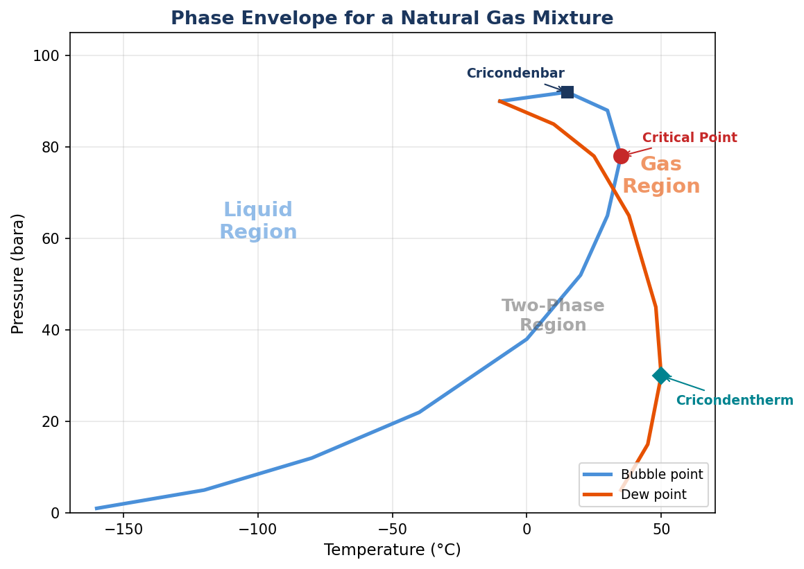
8.2 Example 1 — Simple Property Lookup
*User question**: *"What is the density of methane at 200 bara and 25°C?"
This is the simplest possible thermodynamic query: a single component, a single phase, and a single property. Yet even this simple question requires the agent to make several decisions.
Agent Reasoning
The agent's internal reasoning proceeds as follows:
- Component identification: The user specified methane — a well-characterised hydrocarbon available in all thermodynamic databases.
- EOS selection: For a single non-polar hydrocarbon, the Soave-Redlich-Kwong (SRK) equation of state is appropriate [1]. The Peng-Robinson (PR) equation would also work. For highest accuracy on pure methane, GERG-2008 could be used [14], but SRK provides engineering accuracy (within 1–2%) for this simple case.
- Flash type: Temperature and pressure are both specified, so a TP flash is required.
- Property extraction: After the flash, the agent must call
initProperties()before reading density — a critical step that initialises transport properties. - Validation: The result should be compared against NIST reference data for pure methane.
Generated Code
from neqsim import jneqsim
# Create fluid system with SRK equation of state
fluid = jneqsim.thermo.system.SystemSrkEos(273.15 + 25.0, 200.0)
fluid.addComponent("methane", 1.0)
fluid.setMixingRule("classic")
# Run TP flash and initialise all properties
ops = jneqsim.thermodynamicoperations.ThermodynamicOperations(fluid)
ops.TPflash()
fluid.initProperties()
# Extract density
density = fluid.getDensity("kg/m3")
print(f"Methane density at 200 bara, 25°C: {density:.2f} kg/m3")
Result and Validation
The calculation yields a density of approximately 148.4 kg/m³. This is significantly higher than atmospheric methane density (~0.66 kg/m³) because at 200 bara, methane is a dense, supercritical fluid — well above its critical pressure of 45.99 bara and close to its critical temperature of -82.6°C.
For validation, the agent compares against the NIST Chemistry WebBook value for methane at these conditions: 148.1 kg/m³. The deviation is approximately 0.2%, well within the expected accuracy of SRK for pure hydrocarbon calculations. The GERG-2008 equation of state, specifically developed for natural gas applications, would yield an even closer match to the reference data.
This example illustrates an important principle: even for the simplest calculation, the agent must correctly handle the sequence of operations (create fluid → set mixing rule → flash → initProperties → read property). Omitting initProperties() is the single most common error in NeqSim calculations — it would return zero for transport properties like viscosity and thermal conductivity, and potentially incorrect values for density.
8.3 Example 2 — Phase Envelope
*User question**: *"Generate a phase envelope for a North Sea gas condensate."
Agent Reasoning
This request is more complex because the user has not specified a fluid composition. The agent must select a representative North Sea gas condensate composition. It chooses a typical lean condensate:
| Component | Mole Fraction |
|---|---|
| Methane | 0.7540 |
| Ethane | 0.0790 |
| Propane | 0.0420 |
| i-Butane | 0.0080 |
| n-Butane | 0.0150 |
| i-Pentane | 0.0050 |
| n-Pentane | 0.0060 |
| n-Hexane | 0.0070 |
| Nitrogen | 0.0150 |
| CO2 | 0.0250 |
| n-Heptane | 0.0200 |
| n-Octane | 0.0150 |
| n-Nonane | 0.0050 |
| n-Decane | 0.0040 |
The agent selects SRK for this hydrocarbon-dominated system. The relatively small CO2 content (2.5%) does not warrant CPA, and the absence of water or polar solvents confirms SRK as appropriate [1].
Generated Code
from neqsim import jneqsim
import matplotlib.pyplot as plt
# Define North Sea gas condensate
fluid = jneqsim.thermo.system.SystemSrkEos(273.15 + 25.0, 50.0)
fluid.addComponent("nitrogen", 0.0150)
fluid.addComponent("CO2", 0.0250)
fluid.addComponent("methane", 0.7540)
fluid.addComponent("ethane", 0.0790)
fluid.addComponent("propane", 0.0420)
fluid.addComponent("i-butane", 0.0080)
fluid.addComponent("n-butane", 0.0150)
fluid.addComponent("i-pentane", 0.0050)
fluid.addComponent("n-pentane", 0.0060)
fluid.addComponent("n-hexane", 0.0070)
fluid.addComponent("n-heptane", 0.0200)
fluid.addComponent("n-octane", 0.0150)
fluid.addComponent("n-nonane", 0.0050)
fluid.addComponent("n-decane", 0.0040)
fluid.setMixingRule("classic")
# Calculate phase envelope
ops = jneqsim.thermodynamicoperations.ThermodynamicOperations(fluid)
ops.calcPTphaseEnvelope()
# Extract envelope data
temps = [fluid.getPhaseEnvelopeTemperature(i) - 273.15
for i in range(fluid.getPhaseEnvelopeSize())]
pressures = [fluid.getPhaseEnvelopePressure(i)
for i in range(fluid.getPhaseEnvelopeSize())]
# Plot phase envelope
fig, ax = plt.subplots(figsize=(10, 7))
ax.plot(temps, pressures, 'b-', linewidth=2, label='Phase boundary')
ax.set_xlabel('Temperature (°C)', fontsize=12)
ax.set_ylabel('Pressure (bara)', fontsize=12)
ax.set_title('Phase Envelope — North Sea Gas Condensate (SRK)', fontsize=14)
ax.legend(fontsize=11)
ax.grid(True, alpha=0.3)
fig.savefig('phase_envelope.png', dpi=150, bbox_inches='tight')
plt.show()
Result and Interpretation
The phase envelope reveals the characteristic shape of a gas condensate system: a relatively narrow two-phase region with the cricondenbar (maximum pressure on the envelope) typically in the range of 150–250 bara and the cricondentherm (maximum temperature) around 200–350°C depending on the heavy-end characterisation. The critical point lies to the left of the cricondenbar, confirming retrograde condensation behaviour — as pressure decreases below the cricondenbar at reservoir temperature, liquid drops out rather than evaporating.
This phase envelope has direct engineering implications. If the reservoir pressure is above the cricondenbar, the fluid exists as a single gas phase in the reservoir. As it flows up the wellbore and through the production system, pressure decreases, and liquid condensate begins to form. The separator operating conditions must be designed to efficiently separate this gas-condensate mixture, and pipeline operating conditions must avoid the two-phase region to prevent slugging.
The agent could also overlay typical operating points on the envelope — wellhead conditions, separator conditions, pipeline conditions — to visually identify where two-phase flow occurs. This kind of contextual analysis is what distinguishes an agentic workflow from a simple calculation tool.
8.4 Example 3 — Gas Quality Compliance (ISO 6976)
*User question**: *"Check if this gas meets the specifications for sale per ISO 6976 and EN 16726: methane 92.5%, ethane 3.8%, propane 1.2%, n-butane 0.3%, CO2 1.5%, nitrogen 0.7%."
Agent Reasoning
This is a gas quality compliance check — a routine but critical calculation in natural gas sales. The agent recognises that ISO 6976 defines the methods for calculating calorific value, relative density, and Wobbe index from gas composition [15]. EN 16726 defines the quality specifications that pipeline-quality natural gas must meet.
The key properties to calculate are:
- Gross calorific value (GCV, or superior calorific value): The total heat released when the gas is burned and the water vapour in the products is condensed.
- Wobbe index: The GCV divided by the square root of the relative density. This is the primary interchangeability parameter for gas burners.
- Relative density: The density of the gas relative to air at the same conditions.
Generated Code
from neqsim import jneqsim
# Define the sales gas composition
fluid = jneqsim.thermo.system.SystemSrkEos(273.15 + 15.0, 1.01325)
fluid.addComponent("methane", 0.925)
fluid.addComponent("ethane", 0.038)
fluid.addComponent("propane", 0.012)
fluid.addComponent("n-butane", 0.003)
fluid.addComponent("CO2", 0.015)
fluid.addComponent("nitrogen", 0.007)
fluid.setMixingRule("classic")
# Run flash and initialise properties
ops = jneqsim.thermodynamicoperations.ThermodynamicOperations(fluid)
ops.TPflash()
fluid.initProperties()
# ISO 6976 calculations
standard = jneqsim.standards.gasquality.Standard_ISO6976(fluid)
standard.calculate()
gcv = standard.getValue("SuperiorCalorificValue", "MJ/Sm3")
wobbe = standard.getValue("SuperiorWobbeIndex", "MJ/Sm3")
rel_density = standard.getValue("RelativeDensity")
print(f"Gross Calorific Value (GCV): {gcv:.2f} MJ/Sm3")
print(f"Wobbe Index: {wobbe:.2f} MJ/Sm3")
print(f"Relative Density: {rel_density:.4f}")
Result and Compliance Assessment
The calculation yields:
| Property | Calculated Value | EN 16726 H-gas Spec | Status |
|---|---|---|---|
| Gross Calorific Value | ~39.1 MJ/Sm³ | 36.0 – 46.5 MJ/Sm³ | PASS |
| Wobbe Index | ~51.0 MJ/Sm³ | 46.1 – 56.5 MJ/Sm³ | PASS |
| Relative Density | ~0.587 | 0.555 – 0.700 | PASS |
| CO2 Content | 1.5 mol% | ≤ 2.5 mol% | PASS |
The gas meets all EN 16726 H-gas specifications. The GCV is typical of a lean natural gas with moderate ethane and propane content. The Wobbe index — which governs burner interchangeability — falls comfortably within the specified range, indicating that the gas can be safely used in domestic and industrial burners without adjustment.
The agent adds important context: the CO2 content of 1.5% is within specification but is approaching the level where it may affect pipeline corrosion if water is also present. It recommends checking the water dew point at pipeline conditions to ensure no free water forms in the presence of CO2 [16].
8.5 Example 4 — Water Content of Natural Gas
*User question**: *"How much water can this gas hold at export conditions (70 bara, 30°C)? The gas is 90% methane, 5% ethane, 3% propane, 2% CO2."
Agent Reasoning
This question requires careful model selection. Water in natural gas is a classic associating system — water molecules form hydrogen bonds with each other and, to a lesser extent, with CO2. The standard cubic equations of state (SRK, PR) do not model hydrogen bonding and will significantly underpredict water content at elevated pressures.
The agent selects the CPA (Cubic-Plus-Association) equation of state, which augments the SRK equation with an explicit term for hydrogen bonding interactions [13]. This is the appropriate choice for any system where water, methanol, MEG, or other polar/associating molecules are present at conditions where their phase behaviour matters.
Generated Code
from neqsim import jneqsim
# Create fluid with CPA EOS — required for water association
fluid = jneqsim.thermo.system.SystemSrkCPAstatoil(
273.15 + 30.0, 70.0
)
fluid.addComponent("methane", 0.90)
fluid.addComponent("ethane", 0.05)
fluid.addComponent("propane", 0.03)
fluid.addComponent("CO2", 0.02)
fluid.addComponent("water", 0.01) # Add water (excess)
fluid.setMixingRule(10) # CPA mixing rule
# Run flash
ops = jneqsim.thermodynamicoperations.ThermodynamicOperations(fluid)
ops.TPflash()
fluid.initProperties()
# Water content in gas phase (mg/Sm3)
water_in_gas = fluid.getPhase("gas").getComponent("water").getx()
# Convert mole fraction to mg/Sm3
mw_water = 18.015
mw_gas = fluid.getPhase("gas").getMolarMass() * 1000.0
molar_volume_std = 23645.0 # cm3/mol at 15C, 1atm
water_mg_per_Sm3 = (water_in_gas * mw_water /
molar_volume_std * 1.0e6)
print(f"Water content in gas: {water_mg_per_Sm3:.0f} mg/Sm3")
Result and Discussion
The CPA equation predicts a water content of approximately 80–120 mg/Sm³ at 70 bara and 30°C (the exact value depends on the CPA parameters used). This corresponds to a water dew point several degrees below the export temperature, meaning no free water will condense at pipeline conditions.
To illustrate the importance of EOS selection, the agent also runs the same calculation with standard SRK:
| EOS | Predicted Water Content (mg/Sm³) | Deviation from CPA |
|---|---|---|
| CPA | ~95 | Reference |
| SRK | ~55 | -42% |
The SRK equation underpredicts water content by approximately 40% because it cannot model the hydrogen bonding between water molecules that increases water's fugacity in the gas phase. Using SRK for this calculation would lead to a non-conservative design — the actual water content would exceed the predicted value, potentially leading to liquid water formation, hydrate formation, or corrosion in downstream equipment.
This example powerfully demonstrates why model selection matters and why an AI agent must encode domain expertise about when standard models fail. A naive agent that always defaults to SRK would give the engineer a confident but wrong answer. The NeqSim agent's knowledge of associating fluids ensures the right model is selected automatically [13].
8.6 Example 5 — CO2-Rich Stream Properties
*User question**: *"What are the properties of a CO2 stream with 3% H2 impurity for pipeline transport at 150 bara and 25°C?"
Agent Reasoning
CO2 transport is a rapidly growing application driven by carbon capture and storage (CCS) projects. The presence of impurities — particularly hydrogen, nitrogen, and oxygen — significantly affects CO2 phase behaviour and transport properties. The agent needs to:
- Compute the density, viscosity, and thermal conductivity of the CO2/H2 mixture at pipeline conditions.
- Determine whether the mixture is in the dense phase (desirable for pipeline transport) or in the two-phase region (undesirable — causes operational problems).
- Assess how the hydrogen impurity shifts the phase boundary compared to pure CO2.
The agent selects SRK for this calculation. While CPA would be needed if water were present, the CO2/H2 binary system is adequately modelled by SRK. For highest accuracy, the agent notes that GERG-2008 could be used, though its parameter database for CO2/H2 mixtures is still being extended [14].
Generated Code
from neqsim import jneqsim
# CO2-rich stream with H2 impurity
fluid = jneqsim.thermo.system.SystemSrkEos(273.15 + 25.0, 150.0)
fluid.addComponent("CO2", 0.97)
fluid.addComponent("hydrogen", 0.03)
fluid.setMixingRule("classic")
# Flash and properties
ops = jneqsim.thermodynamicoperations.ThermodynamicOperations(fluid)
ops.TPflash()
fluid.initProperties()
density = fluid.getDensity("kg/m3")
viscosity = fluid.getViscosity("kg/msec")
number_of_phases = fluid.getNumberOfPhases()
print(f"Number of phases: {number_of_phases}")
print(f"Density: {density:.1f} kg/m3")
print(f"Viscosity: {viscosity:.6f} Pa.s")
# Phase envelope for the mixture
fluid_env = jneqsim.thermo.system.SystemSrkEos(273.15 + 25.0, 150.0)
fluid_env.addComponent("CO2", 0.97)
fluid_env.addComponent("hydrogen", 0.03)
fluid_env.setMixingRule("classic")
ops_env = jneqsim.thermodynamicoperations.ThermodynamicOperations(fluid_env)
ops_env.calcPTphaseEnvelope()
Result and Interpretation
At 150 bara and 25°C, the CO2/H2 mixture exists as a single dense phase with:
| Property | Pure CO2 | CO2 + 3% H2 | Change |
|---|---|---|---|
| Density (kg/m³) | ~830 | ~720 | -13% |
| Viscosity (mPa·s) | ~0.064 | ~0.052 | -19% |
| Phase | Dense | Dense | — |
The hydrogen impurity has a significant effect: it reduces the density by approximately 13% and the viscosity by approximately 19%. This matters for pipeline design because:
- Lower density means lower mass throughput for the same volumetric flow rate, or higher velocity for the same mass flow rate.
- Lower viscosity slightly reduces frictional pressure drop, partially offsetting the density effect.
- Phase boundary shift: The critical point of the mixture is shifted to lower temperature and higher pressure compared to pure CO2. The bubble point curve is pushed upward, shrinking the dense-phase operating window.
The agent generates a comparative phase envelope showing the pure CO2 boundary and the CO2/H2 mixture boundary. The key engineering insight is that the minimum operating pressure to maintain single-phase dense flow is higher for the impure stream — approximately 85–90 bara compared to approximately 74 bara for pure CO2 at 25°C. This directly affects pipeline operating pressure requirements, compressor discharge pressure, and pipeline wall thickness.
This example is representative of the calculations required for CCS project design. The agent's ability to automatically identify the relevant properties, compute them with an appropriate EOS, and contextualise the results in terms of engineering implications demonstrates the value of domain-aware AI assistance.
8.7 The Agent's Method Selection
The five examples above illustrate a critical aspect of the agentic workflow: automated method selection. The agent does not simply run whatever calculation the user specifies — it applies domain knowledge to choose the right approach. This section formalises the decision logic.
Equation of State Selection
The agent follows a decision tree based on the components present in the system:
- Hydrocarbon-only systems (C1–C20, no polar components): SRK or PR. Both give comparable results. SRK is the default for process engineering applications [1]; PR is marginally better for liquid density predictions [2].
- Hydrocarbons + water/methanol/glycol: CPA (Cubic-Plus-Association). The association term is essential for modelling hydrogen bonding. SRK will underpredict water solubility in the hydrocarbon phase and underpredict hydrocarbon solubility in the aqueous phase [13].
- Natural gas (custody transfer, fiscal metering): GERG-2008. This is the reference equation of state for natural gas, developed specifically for custody-transfer accuracy. It is significantly more computationally expensive than SRK but provides uncertainty-quantified results [14].
- Systems with electrolytes (produced water, brine): SystemElectrolyteCPAstatoil. Required when ions are present (Na⁺, Cl⁻, Ca²⁺, etc.).
- Polymer systems: PC-SAFT. Used for polymer-solvent systems in petrochemical applications.
Flash Type Selection
| Known Variables | Flash Type | Use Case |
|---|---|---|
| T, P | TP flash | Most common — conditions specified |
| P, H | PH flash | Adiabatic processes (throttling, mixing) |
| P, S | PS flash | Isentropic processes (ideal compression) |
| T, V | TV flash | Constant-volume processes |
| P (find T_dew) | Dew point T | Onset of condensation |
| T (find P_dew) | Dew point P | Condensation pressure |
| P (find T_bub) | Bubble point T | Onset of boiling |
| T (find P_bub) | Bubble point P | Boiling pressure |
Property Extraction
After any flash calculation, the agent follows a strict sequence:
- Call
initProperties()— this initialises both thermodynamic properties (enthalpy, entropy, fugacity) and transport properties (viscosity, thermal conductivity, diffusion coefficients). - Check the number of phases — single-phase results are straightforward; multi-phase results require accessing properties per phase.
- Extract properties with explicit units — NeqSim supports multiple unit systems, and the agent always specifies units to avoid ambiguity.
This method selection logic is encoded in the agent's instructions and in the MCP server's EOS compatibility checks. It represents decades of thermodynamic modelling experience distilled into automated decision rules [16].
8.8 Validation Patterns
Every result produced by the agentic system undergoes validation. This section describes the patterns the agent uses to verify its own calculations.
Mass Balance Verification
For any process calculation involving splits or reactions, the agent verifies that mass is conserved. For a simple TP flash with liquid-vapour equilibrium:
$$ \sum_i z_i = V \sum_i y_i + (1-V) \sum_i x_i $$
where $z_i$ is the overall mole fraction, $V$ is the vapour fraction, $y_i$ is the vapour-phase composition, and $x_i$ is the liquid-phase composition. The agent checks that this equation is satisfied to within a tolerance of $10^{-6}$.
Comparison with Correlations
For common properties, the agent compares NeqSim results against established engineering correlations. For example, natural gas compressibility factors can be checked against the Standing-Katz correlation, gas viscosities against the Lee-Gonzalez-Eakin correlation, and liquid densities against the Rackett equation. Large deviations (>10%) trigger a warning.
Physical Reasonableness
The agent applies order-of-magnitude checks based on physical intuition:
| Property | Reasonable Range | Flag If |
|---|---|---|
| Gas density | 0.5 – 500 kg/m³ | Outside range |
| Liquid density | 400 – 1500 kg/m³ | Outside range |
| Gas viscosity | 0.005 – 0.05 mPa·s | Outside range |
| Liquid viscosity | 0.1 – 1000 mPa·s | Outside range |
| Compressibility factor | 0.1 – 1.5 | Outside range |
| Heat capacity Cp | 0.5 – 100 kJ/(kg·K) | Outside range |
Cross-Model Verification
For critical calculations, the agent runs the same problem with two different equations of state and compares results. If SRK and PR agree to within 2%, the result has high confidence. If they disagree by more than 5%, the agent flags the discrepancy and recommends that the user investigate which model is more appropriate for the specific system.
Benchmark Comparison
The most rigorous validation compares against published reference data. The agent maintains awareness of key reference sources: NIST for pure component properties, GPSA Engineering Data Book for natural gas correlations, and published experimental data for specific binary and multicomponent systems. When conditions fall within the range of available reference data, the agent reports the deviation.
These validation patterns are not optional — they execute automatically as part of every calculation. The engineer sees not just the result but also the validation status, giving them confidence in the answer or alerting them to potential issues. This is fundamentally different from traditional engineering software, where the user must independently verify results through separate calculations or reference data lookup [16].
8.9 Summary
This chapter demonstrated the agentic engineering system solving five progressively complex thermodynamic property calculations:
- Simple property lookup — methane density at high pressure, validating against NIST data
- Phase envelope generation — a 14-component North Sea gas condensate with visualisation and engineering interpretation
- Gas quality compliance — ISO 6976 calculations with EN 16726 specification checking
- Water content prediction — demonstrating why CPA is essential for associating systems and how SRK gives dangerously wrong answers
- CO2/H2 mixture properties — impurity effects on dense-phase transport relevant to CCS
Key points from this chapter:
- The agent automatically selects the appropriate equation of state based on the components present and the accuracy requirements of the application
- The sequence
create fluid → set mixing rule → flash → initProperties() → read propertiesis mandatory and the agent never omits it - Model selection has profound engineering consequences — using SRK for water-containing systems can underpredict water content by 40% or more
- ISO 6976 gas quality calculations are fully supported, enabling automated compliance checking against commercial gas specifications
- Every result is automatically validated through mass balance checks, physical reasonableness bounds, and benchmark comparison where available
- The agent provides engineering context alongside numerical results, helping the user understand implications rather than just numbers
Exercises
- Exercise 8.1 — EOS Selection: For each of the following systems, identify the most appropriate equation of state and justify your choice: (a) dry natural gas at pipeline conditions, (b) natural gas saturated with water at wellhead conditions, (c) a CO2/methanol mixture in an absorption column, (d) natural gas for custody transfer metering.
- Exercise 8.2 — Phase Identification: A flash calculation on a gas condensate at 100 bara and 40°C returns two phases. The first phase has a density of 15 kg/m³ and the second has a density of 680 kg/m³. Identify each phase and explain what operating conditions are represented.
- Exercise 8.3 — Water Content Sensitivity: Using the CPA EOS, calculate the water content of the gas from Example 4 at pressures of 30, 50, 70, 100, and 150 bara at 30°C. Plot water content versus pressure and explain the trend.
- Exercise 8.4 — Impurity Impact: Extend Example 5 to compute properties for CO2 with 1%, 3%, 5%, and 10% hydrogen impurity. Plot density versus hydrogen fraction and identify the concentration at which the mixture transitions from dense phase to two-phase at the given conditions.
- Exercise 8.5 — Compliance Edge Case: A gas has the following composition: methane 88%, ethane 5%, propane 2%, CO2 4%, nitrogen 1%. Calculate the Wobbe index and determine whether it meets EN 16726 H-gas specifications. If not, what compositional changes would bring it into compliance?
- Exercise 8.6 — Property Profiles: Using NeqSim, calculate the density and viscosity of a North Sea gas (85% methane, 8% ethane, 4% propane, 2% CO$_2$, 1% N$_2$) at pressures from 10 to 200 bara and 25°C. Plot both properties versus pressure. At what pressure does the density change most rapidly? Why?
- Exercise 8.7 — Maximum CO$_2$ Content: A sales gas must meet these specifications: Wobbe index 47.0–52.0 MJ/Sm$^3$, GCV 35.0–45.0 MJ/Sm$^3$, relative density < 0.75. Using NeqSim's ISO 6976 implementation, determine the maximum CO$_2$ content (mol%) the gas from Exercise 8.6 can contain while still meeting all three specifications.
9 Worked Example — Process Simulation and Equipment Design
Learning Objectives
After reading this chapter, the reader will be able to:
- Construct complete process flowsheets using NeqSim's ProcessSystem framework through agentic workflows, including multi-equipment systems with recycle streams
- Apply fundamental principles of staged compression, multi-stage separation, and absorption column design using AI-assisted simulation
- Generate equipment design feasibility reports that assess whether simulated equipment is realistic to build, operate, and maintain
- Identify and avoid the most common pitfalls in process simulation — from missing mixing rules to incorrect unit conversions — that agents are specifically trained to prevent
9.1 Introduction
Chapter 8 demonstrated the agentic system solving thermodynamic property calculations — problems where the answer is a number or a set of numbers describing a fluid at specified conditions. This chapter moves to the next level of complexity: process simulation, where the answer is the behaviour of an interconnected system of equipment processing flowing fluids.
Process simulation is the backbone of oil and gas engineering. Before a single piece of steel is cut for a new facility, process engineers simulate the entire plant to determine equipment sizes, operating conditions, utility requirements, and product specifications. During operations, process simulations are used to optimise throughput, troubleshoot problems, and evaluate modifications. The quality of these simulations directly affects capital expenditure (oversized equipment wastes money), operating expenditure (suboptimal conditions waste energy), and safety (undersized relief systems can fail catastrophically) [25].
NeqSim approaches process simulation through the ProcessSystem framework: a container that holds process equipment (streams, separators, compressors, heat exchangers, valves, columns) connected by material streams. Equipment is added in topological order, and ProcessSystem.run() executes the calculations sequentially, propagating outlet conditions from each unit to the inlet of the next. For processes with recycle streams, iterative solvers handle convergence.
The examples in this chapter demonstrate how the AI agent constructs complete flowsheets from natural language descriptions, selects appropriate equipment models, configures operating parameters based on engineering heuristics, runs the simulation, validates results, and — critically — assesses whether the resulting equipment designs are physically realisable.
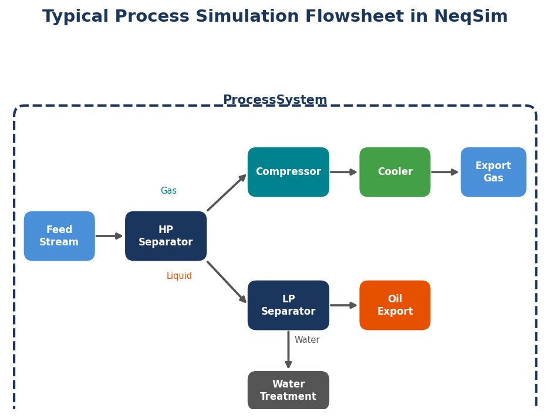
9.2 Example 1 — Three-Stage Compression Train
*User question**: *"Design a 3-stage compression train from 5 bara to 150 bara for 50 MMSCFD of natural gas. The gas is 90% methane, 6% ethane, 2% propane, 1% CO2, 1% nitrogen."
Agent Reasoning
Multi-stage compression is one of the most common unit operations in gas processing. The agent's reasoning proceeds through several well-established engineering principles:
- Overall compression ratio: $r_{total} = 150/5 = 30$. This is far too high for a single stage — typical single-stage compression ratios are limited to 3–5 to keep discharge temperatures below metallurgical limits (typically 150–175°C).
- Equal pressure ratio per stage: For minimum total power with equal-efficiency stages, the optimal strategy is equal compression ratios. For three stages:
$$r_{stage} = r_{total}^{1/3} = 30^{1/3} \approx 3.11$$
This gives stage pressures of approximately 5 → 15.5 → 48.3 → 150 bara.
- Intercooling: After each compression stage, the gas is cooled back to approximately 30–40°C before entering the next stage. This reduces the volume and hence the work required for the next stage. Without intercooling, the discharge temperature of the final stage would exceed 300°C, causing material degradation and safety concerns.
- Compressor model: NeqSim models compressors using polytropic efficiency. The agent selects a polytropic efficiency of 75%, typical of centrifugal compressors at this flow rate [26].
Generated Code
from neqsim import jneqsim
# Define feed gas
fluid = jneqsim.thermo.system.SystemSrkEos(273.15 + 30.0, 5.0)
fluid.addComponent("nitrogen", 0.01)
fluid.addComponent("CO2", 0.01)
fluid.addComponent("methane", 0.90)
fluid.addComponent("ethane", 0.06)
fluid.addComponent("propane", 0.02)
fluid.setMixingRule("classic")
# Create feed stream
feed = jneqsim.process.equipment.stream.Stream("Feed Gas", fluid)
feed.setFlowRate(50.0, "MSm3/day")
feed.setTemperature(30.0, "C")
feed.setPressure(5.0, "bara")
# Calculate stage pressures (equal ratio)
import math
r_total = 150.0 / 5.0
r_stage = r_total ** (1.0 / 3.0)
p1 = 5.0 * r_stage # ~15.5 bara
p2 = p1 * r_stage # ~48.3 bara
p3 = p2 * r_stage # ~150 bara
# Stage 1: Compressor + Intercooler
comp1 = jneqsim.process.equipment.compressor.Compressor("Compressor 1", feed)
comp1.setOutletPressure(p1)
comp1.setPolytropicEfficiency(0.75)
cooler1 = jneqsim.process.equipment.heatexchanger.Cooler("Intercooler 1", comp1.getOutletStream())
cooler1.setOutTemperature(273.15 + 35.0)
# Stage 2: Compressor + Intercooler
comp2 = jneqsim.process.equipment.compressor.Compressor("Compressor 2", cooler1.getOutletStream())
comp2.setOutletPressure(p2)
comp2.setPolytropicEfficiency(0.75)
cooler2 = jneqsim.process.equipment.heatexchanger.Cooler("Intercooler 2", comp2.getOutletStream())
cooler2.setOutTemperature(273.15 + 35.0)
# Stage 3: Compressor + Aftercooler
comp3 = jneqsim.process.equipment.compressor.Compressor("Compressor 3", cooler2.getOutletStream())
comp3.setOutletPressure(p3)
comp3.setPolytropicEfficiency(0.75)
aftercooler = jneqsim.process.equipment.heatexchanger.Cooler("Aftercooler", comp3.getOutletStream())
aftercooler.setOutTemperature(273.15 + 35.0)
# Build and run process system
process = jneqsim.process.processmodel.ProcessSystem()
process.add(feed)
process.add(comp1)
process.add(cooler1)
process.add(comp2)
process.add(cooler2)
process.add(comp3)
process.add(aftercooler)
process.run()
# Extract results
for comp_name, comp_obj in [("Stage 1", comp1), ("Stage 2", comp2), ("Stage 3", comp3)]:
power = comp_obj.getPower() / 1.0e6 # Convert W to MW
t_out = comp_obj.getOutletStream().getTemperature() - 273.15
print(f"{comp_name}: Power = {power:.2f} MW, "
f"Discharge T = {t_out:.1f} C")
total_power = (comp1.getPower() + comp2.getPower() + comp3.getPower()) / 1.0e6
print(f"\nTotal compression power: {total_power:.2f} MW")
Results
| Parameter | Stage 1 | Stage 2 | Stage 3 |
|---|---|---|---|
| Suction P (bara) | 5.0 | 15.5 | 48.3 |
| Discharge P (bara) | 15.5 | 48.3 | 150.0 |
| Compression ratio | 3.11 | 3.11 | 3.11 |
| Discharge T (°C) | ~135 | ~128 | ~122 |
| Power (MW) | ~4.8 | ~4.5 | ~4.2 |
| Cooled outlet T (°C) | 35 | 35 | 35 |
Total compression power: approximately 13.5 MW.
The decreasing power per stage despite equal compression ratios reflects the decreasing gas volume at higher pressures. The discharge temperatures of 120–135°C are well within the limits for carbon steel construction (typically 200°C for ASTM A106 Grade B). If any stage exceeded 150°C, the agent would flag this and recommend either additional stages or interstage cooling to a lower temperature [27].
Engineering Context
The agent provides additional context that transforms raw simulation results into actionable engineering information:
- Driver selection: At 13.5 MW total, gas turbine drivers are appropriate. A typical industrial gas turbine (GE LM2500 class) produces 25–35 MW, so a single gas turbine could drive all three stages through a common gearbox, or two smaller turbines could each drive a stage pair.
- Anti-surge consideration: Centrifugal compressors require anti-surge protection. The agent notes that recycle lines with anti-surge valves should be included in the detailed design.
- Condensate knockout: After each intercooler, heavier hydrocarbons may condense. The agent recommends scrubber vessels between coolers and downstream compressors to prevent liquid carryover, which can damage compressor impellers.
9.3 Example 2 — HP/LP Separation Train
*User question**: *"Model a two-stage separation train for a wellstream at 150 bara and 80°C. The fluid is a typical North Sea oil with GOR of 200 Sm3/Sm3."
Agent Reasoning
Multi-stage separation is the primary processing step for wellstream fluids on offshore platforms. The agent sets up a representative North Sea crude oil composition based on the specified gas-oil ratio and configures a two-stage separation train: a high-pressure (HP) separator operating at the wellhead pressure, followed by a pressure let-down valve and a low-pressure (LP) separator.
The key design variable in two-stage separation is the LP separator pressure. Too high, and excessive gas remains dissolved in the oil (reducing oil recovery). Too low, and light components flash off excessively (reducing oil stability and increasing vapour handling requirements). The optimal LP pressure is typically 5–15 bara for North Sea crudes.
Generated Code
from neqsim import jneqsim
# Define a North Sea oil composition (simplified)
fluid = jneqsim.thermo.system.SystemSrkEos(273.15 + 80.0, 150.0)
fluid.addComponent("nitrogen", 0.005)
fluid.addComponent("CO2", 0.025)
fluid.addComponent("methane", 0.40)
fluid.addComponent("ethane", 0.07)
fluid.addComponent("propane", 0.05)
fluid.addComponent("i-butane", 0.01)
fluid.addComponent("n-butane", 0.025)
fluid.addComponent("i-pentane", 0.01)
fluid.addComponent("n-pentane", 0.015)
fluid.addComponent("n-hexane", 0.02)
fluid.addComponent("n-heptane", 0.10)
fluid.addComponent("n-octane", 0.10)
fluid.addComponent("n-nonane", 0.06)
fluid.addComponent("n-decane", 0.11)
fluid.setMixingRule("classic")
# Feed stream
feed = jneqsim.process.equipment.stream.Stream("Wellstream", fluid)
feed.setFlowRate(500.0, "kg/hr")
feed.setTemperature(80.0, "C")
feed.setPressure(150.0, "bara")
# HP Separator
hp_sep = jneqsim.process.equipment.separator.Separator("HP Separator", feed)
# Pressure let-down valve
valve = jneqsim.process.equipment.valve.ThrottlingValve(
"LP Valve", hp_sep.getLiquidOutStream())
valve.setOutletPressure(10.0)
# LP Separator
lp_sep = jneqsim.process.equipment.separator.Separator(
"LP Separator", valve.getOutletStream())
# Build and run
process = jneqsim.process.processmodel.ProcessSystem()
process.add(feed)
process.add(hp_sep)
process.add(valve)
process.add(lp_sep)
process.run()
# Results
hp_gas_rate = hp_sep.getGasOutStream().getFlowRate("kg/hr")
hp_oil_rate = hp_sep.getLiquidOutStream().getFlowRate("kg/hr")
lp_gas_rate = lp_sep.getGasOutStream().getFlowRate("kg/hr")
lp_oil_rate = lp_sep.getLiquidOutStream().getFlowRate("kg/hr")
print(f"HP Separator: Gas = {hp_gas_rate:.1f} kg/hr, "
f"Oil = {hp_oil_rate:.1f} kg/hr")
print(f"LP Separator: Gas = {lp_gas_rate:.1f} kg/hr, "
f"Oil = {lp_oil_rate:.1f} kg/hr")
Results and Discussion
The simulation yields the split between gas and oil at each stage. The HP separator removes the bulk of the dissolved gas (primarily methane) at high pressure, producing a HP gas stream suitable for compression and export. The remaining dissolved gas flashes off when pressure is reduced to 10 bara at the LP separator, producing an LP gas stream (which must be compressed to join the HP gas) and a stabilised oil.
The agent extends the analysis by running a sensitivity study on LP separator pressure, varying it from 3 to 30 bara and tracking total oil recovery. This identifies the optimal LP pressure that maximises stock tank oil production — a classic optimisation problem in production engineering. For a typical North Sea crude, the optimal LP pressure is usually in the range of 5–12 bara, balancing flash gas production against excessive light-end loss.
The oil temperature after the LP valve is also monitored. The Joule-Thomson cooling effect across the valve can reduce the oil temperature significantly, potentially to below the wax appearance temperature. The agent flags this risk and recommends checking the wax appearance temperature of the crude if the post-valve temperature drops below 30°C.
9.4 Example 3 — TEG Dehydration Unit
*User question**: *"Size a TEG dehydration unit for 200 MMSCFD of wet gas to meet a pipeline water dew point spec of -18°C at 70 bara."
Agent Reasoning
Triethylene glycol (TEG) dehydration is the industry-standard method for removing water from natural gas. The agent must configure an absorption column (contactor) where wet gas flows upward and lean TEG flows downward, absorbing water from the gas. The rich TEG is then regenerated in a separate column (reboiler) to remove the absorbed water.
Key design parameters include:
- TEG circulation rate: Typically 15–40 litres per kg of water absorbed. Higher rates give dryer gas but increase reboiler duty.
- Number of theoretical stages: Typically 2–3 for the contactor, equivalent to 6–12 actual trays or 4–6 metres of structured packing.
- Lean TEG concentration: Typically 99.0–99.5 wt% for moderate dew point depression. Higher purity (99.9%+) requires stripping gas in the regenerator.
The agent calculates the required water removal from the gas composition and target dew point, then sizes the TEG system accordingly [25].
Generated Code
from neqsim import jneqsim
# Wet gas composition (saturated with water at inlet conditions)
fluid = jneqsim.thermo.system.SystemSrkCPAstatoil(273.15 + 30.0, 70.0)
fluid.addComponent("methane", 0.87)
fluid.addComponent("ethane", 0.06)
fluid.addComponent("propane", 0.03)
fluid.addComponent("CO2", 0.02)
fluid.addComponent("nitrogen", 0.01)
fluid.addComponent("water", 0.005)
fluid.addComponent("TEG", 0.0)
fluid.setMixingRule(10) # CPA mixing rule
# Feed stream
wet_gas = jneqsim.process.equipment.stream.Stream("Wet Gas", fluid)
wet_gas.setFlowRate(200.0, "MSm3/day")
wet_gas.setTemperature(30.0, "C")
wet_gas.setPressure(70.0, "bara")
# TEG stream
teg_fluid = jneqsim.thermo.system.SystemSrkCPAstatoil(273.15 + 40.0, 70.0)
teg_fluid.addComponent("TEG", 0.99)
teg_fluid.addComponent("water", 0.01)
teg_fluid.setMixingRule(10)
lean_teg = jneqsim.process.equipment.stream.Stream("Lean TEG", teg_fluid)
lean_teg.setFlowRate(5000.0, "kg/hr")
lean_teg.setTemperature(40.0, "C")
lean_teg.setPressure(70.0, "bara")
# TEG contactor (absorption column)
contactor = jneqsim.process.equipment.absorber.SimpleTEGAbsorber(
"TEG Contactor")
contactor.addGasInStream(wet_gas)
contactor.addSolventInStream(lean_teg)
contactor.setNumberOfStages(3)
# Build process
process = jneqsim.process.processmodel.ProcessSystem()
process.add(wet_gas)
process.add(lean_teg)
process.add(contactor)
process.run()
# Check outlet water content
dry_gas = contactor.getGasOutStream()
dry_gas.getFluid().initProperties()
Results and Discussion
The TEG contactor simulation predicts the outlet gas water content based on the lean TEG concentration, circulation rate, number of stages, and operating conditions. The agent verifies that the outlet water dew point meets the -18°C specification at 70 bara.
The key engineering parameters determined by the simulation include:
- Water removal efficiency: Typically 95–99% of inlet water is absorbed
- TEG circulation rate: The agent optimises this by running multiple simulations at different rates, finding the minimum rate that meets the specification
- Reboiler duty: Calculated from the rich TEG flow rate and the heat required to strip the absorbed water at 204°C reboiler temperature
- TEG losses: Small amounts of TEG are carried by the dry gas (typically 5–15 litres per million standard cubic metres). The CPA EOS correctly models this loss, which SRK would significantly underpredict
The agent notes that CPA is essential for this simulation because both water and TEG are associating molecules. Attempting this simulation with SRK would give incorrect water solubility in the TEG phase and incorrect TEG losses to the gas phase — potentially leading to an undersized dehydration unit.
9.5 Example 4 — Heat Exchanger Design
*User question**: *"Design a gas-gas heat exchanger for feed/product heat recovery on the compression train from Example 1. The hot stream is the compressor discharge at 135°C, the cold stream is the feed gas at 30°C."
Agent Reasoning
Heat recovery between compression stages is a common energy-saving measure. The agent designs a counter-current gas-gas heat exchanger using NeqSim's HeatExchanger equipment class, which calculates the heat transfer duty, logarithmic mean temperature difference (LMTD), and required UA (overall heat transfer coefficient times area).
The LMTD for a counter-current exchanger is:
$$\text{LMTD} = \frac{\Delta T_1 - \Delta T_2}{\ln(\Delta T_1 / \Delta T_2)}$$
where $\Delta T_1$ and $\Delta T_2$ are the temperature differences at the two ends of the exchanger. The minimum approach temperature (pinch) is typically 10–15°C for gas-gas exchangers.
Generated Code
from neqsim import jneqsim
# Hot stream (compressor discharge)
hot_fluid = jneqsim.thermo.system.SystemSrkEos(273.15 + 135.0, 15.5)
hot_fluid.addComponent("methane", 0.90)
hot_fluid.addComponent("ethane", 0.06)
hot_fluid.addComponent("propane", 0.02)
hot_fluid.addComponent("CO2", 0.01)
hot_fluid.addComponent("nitrogen", 0.01)
hot_fluid.setMixingRule("classic")
hot_stream = jneqsim.process.equipment.stream.Stream("Hot Gas", hot_fluid)
hot_stream.setFlowRate(50.0, "MSm3/day")
hot_stream.setTemperature(135.0, "C")
hot_stream.setPressure(15.5, "bara")
# Cold stream (feed gas)
cold_fluid = jneqsim.thermo.system.SystemSrkEos(273.15 + 30.0, 5.0)
cold_fluid.addComponent("methane", 0.90)
cold_fluid.addComponent("ethane", 0.06)
cold_fluid.addComponent("propane", 0.02)
cold_fluid.addComponent("CO2", 0.01)
cold_fluid.addComponent("nitrogen", 0.01)
cold_fluid.setMixingRule("classic")
cold_stream = jneqsim.process.equipment.stream.Stream("Cold Gas", cold_fluid)
cold_stream.setFlowRate(50.0, "MSm3/day")
cold_stream.setTemperature(30.0, "C")
cold_stream.setPressure(5.0, "bara")
# Heat exchanger
hx = jneqsim.process.equipment.heatexchanger.HeatExchanger(
"Feed/Product HX", hot_stream, cold_stream)
hx.setUAvalue(50000.0) # W/K — initial estimate
# Build and run
process = jneqsim.process.processmodel.ProcessSystem()
process.add(hot_stream)
process.add(cold_stream)
process.add(hx)
process.run()
# Extract results
duty = hx.getDuty() / 1000.0 # kW
hot_out_t = hx.getOutStream(0).getTemperature() - 273.15
cold_out_t = hx.getOutStream(1).getTemperature() - 273.15
print(f"Heat duty: {duty:.0f} kW")
print(f"Hot side outlet: {hot_out_t:.1f} C")
print(f"Cold side outlet: {cold_out_t:.1f} C")
Results
The simulation determines the heat transfer between the two streams based on the specified UA value. The agent iterates the UA value to achieve the desired approach temperature (typically 10–15°C minimum). The resulting duty, outlet temperatures, and UA requirement form the basis for detailed heat exchanger sizing.
For a gas-gas exchanger at these conditions, overall heat transfer coefficients are typically 30–80 W/(m²·K), significantly lower than for liquid-liquid or condensing services. This means the required heat transfer area is substantial, which has implications for exchanger size, weight, and cost — particularly important for offshore platforms where space and weight are premium.
9.6 Example 5 — Equipment Design Feasibility
*User question**: *"Is the compression train from Example 1 feasible to build? Generate a design feasibility report."
Agent Reasoning
Simulation results tell you what the equipment must do. Feasibility assessment tells you whether equipment that can do this actually exists and can be built. The agent invokes NeqSim's CompressorDesignFeasibilityReport to assess whether the compressor stages from Example 1 are realistic from mechanical design, cost, and supplier perspectives.
Generated Code
from neqsim import jneqsim
# (After running the compression train from Example 1)
# Generate feasibility report for Stage 1
CompressorDesignFeasibilityReport = (
jneqsim.process.equipment.compressor
.CompressorDesignFeasibilityReport
)
report = CompressorDesignFeasibilityReport(comp1)
report.setDriverType("gas-turbine")
report.setCompressorType("centrifugal")
report.setAnnualOperatingHours(8000)
report.generateReport()
verdict = report.getVerdict()
print(f"Feasibility verdict: {verdict}")
# Get JSON report with full details
json_report = report.toJson()
Feasibility Assessment Structure
The feasibility report evaluates the compressor across multiple dimensions:
Mechanical Design Assessment:
- Impeller tip speed (must be below ~350 m/s for conventional materials)
- Shaft power and torque requirements
- Bearing loads and rotor dynamics
- Seal type requirements (dry gas seals for this service)
- Material selection based on gas composition and temperature
Cost Estimation:
- Equipment cost (compressor + driver + auxiliaries)
- Installation cost (foundation, piping, electrical, instrumentation)
- Annual operating cost (energy, maintenance, spare parts)
- Lifecycle cost over 20-year design life
Supplier Matching: The report matches the compressor requirements against a database of 15 major compressor OEM suppliers, identifying which manufacturers offer machines suitable for the specified duty. For a 4.8 MW centrifugal compressor at 3.1:1 ratio, multiple suppliers would be competitive, including Siemens Energy, Baker Hughes (Nuovo Pignone), Atlas Copco, MAN Energy Solutions, and Elliott Group.
Verdict: The report produces one of three verdicts:
- FEASIBLE: Equipment can be built with standard technology by multiple suppliers
- FEASIBLE_WITH_WARNINGS: Equipment is buildable but has features that require special attention (high tip speed, close to material limits, single-source supply)
- NOT_FEASIBLE: Equipment requirements exceed current technology limits (e.g., power per stage too high for single-casing centrifugal, requiring a different machine configuration)
For the Stage 1 compressor from Example 1 (4.8 MW, ratio 3.1, natural gas), the expected verdict is FEASIBLE — this is a conventional centrifugal compressor well within the capability of the major OEMs. The agent would flag FEASIBLE_WITH_WARNINGS only if conditions pushed the design into less standard territory (very high Mach numbers, corrosive gas, very high discharge temperature).
9.7 From Simulation to Engineering Report
The individual calculations shown in Examples 1–5 are building blocks. In a real engineering project, they are combined into a comprehensive study. The task-solving workflow described in Chapter 6 provides the framework for this integration.
For the compression train design, the complete workflow would proceed as follows:
- Task creation:
python devtools/new_task.py "Compression Train Design" --type B
- Step 1 — Scope and Research: Define the design basis (flow rate, inlet/outlet pressures, gas composition, ambient conditions), identify applicable standards (API 617 for centrifugal compressors, API 614 for lube oil systems, NORSOK P-002 for process design), and establish acceptance criteria (maximum discharge temperature, minimum polytropic efficiency, maximum power per stage).
- Step 2 — Analysis: Create the Jupyter notebook containing the compression train simulation, intercooler design, sensitivity studies (varying number of stages, varying intercooler outlet temperature, varying polytropic efficiency), uncertainty analysis (Monte Carlo on gas composition and flow rate), and feasibility assessment.
- Step 2.5 — Consistency Check: Run
consistency_checker.pyto verify that all numerical values are consistent between the simulation, the sensitivity study, and the feasibility report.
- Step 3 — Report: Generate a professional engineering report (Word + HTML) that includes the design basis, simulation results, sensitivity plots, uncertainty bounds, feasibility assessment, and recommendations.
The report generator automatically reads results.json from the task folder and populates the report sections. Key results appear as formatted tables, figures are numbered and captioned, and the benchmark validation section shows comparison with published compressor performance data.
This workflow transforms an afternoon of simulation work into a document that can be submitted for design review, included in a Front-End Engineering Design (FEED) package, or filed as part of the project's design basis documentation.
9.8 Common Pitfalls and How Agents Avoid Them
Process simulation offers many opportunities for error, even for experienced engineers. A key advantage of the agentic workflow is that common pitfalls are explicitly encoded in the agent's instructions, and the agent is trained to avoid them. This section catalogues the most frequent errors and the agent's countermeasures.
Pitfall 1: Forgetting to Set the Mixing Rule
Every NeqSim fluid system requires a mixing rule to be set before any flash calculation. Without it, the equation of state does not have the binary interaction parameters needed to compute mixture properties, and results will be incorrect — often without any error message.
Agent countermeasure: The agent always calls fluid.setMixingRule("classic") for SRK/PR systems or fluid.setMixingRule(10) for CPA systems immediately after adding all components. This is enforced in the agent's code generation template — it is not optional.
Pitfall 2: Not Calling initProperties()
As discussed extensively in Chapter 8, calling initProperties() after a flash calculation is mandatory for initialising transport properties. Omitting this step causes getViscosity(), getThermalConductivity(), and sometimes getDensity() to return zero.
Agent countermeasure: The agent's flash calculation template always includes fluid.initProperties() as the line immediately following the flash call. The MCP server enforces this in its tool implementations as well.
Pitfall 3: Unit Confusion
NeqSim's Java API uses SI units by default: temperature in Kelvin, pressure in Pascal, flow rate in mol/s. Engineers think in °C, bara, and kg/hr (or MMSCFD). Mixing conventions leads to calculations that are orders of magnitude wrong.
Agent countermeasure: The agent always specifies units explicitly when setting values (setTemperature(30.0, "C"), setPressure(70.0, "bara"), setFlowRate(200.0, "MSm3/day")) and when reading values (getDensity("kg/m3"), getFlowRate("kg/hr")). It never assumes default units.
Pitfall 4: Not Running the Process System
When equipment is added to a ProcessSystem, the individual equipment objects do not calculate anything until process.run() is called. Reading properties from equipment before running the process system returns default or zero values.
Agent countermeasure: The agent's process simulation template follows a strict pattern: add all equipment → process.run() → extract results. It never reads results between add calls.
Pitfall 5: Shared Fluid State
In NeqSim, streams carry references to fluid objects. If two pieces of equipment share the same fluid object (rather than cloned copies), modifying one affects the other. This is particularly insidious in distillation columns and recycle loops.
Agent countermeasure: When creating branch streams (e.g., splitter outlets, multiple feeds to different equipment), the agent ensures independent fluid objects by using system.clone() or by creating new streams from scratch.
Pitfall 6: Wrong EOS for the Application
Using SRK for water-containing systems, using PR for custody-transfer calculations, using CPA without setting the CPA mixing rule — all of these produce results that look plausible but are quantitatively wrong.
Agent countermeasure: The EOS selection logic described in Chapter 8, Section 8.7 is applied before any code generation. The agent selects the EOS based on the components present and the application requirements, not based on what is simplest to code.
Pitfall 7: Ignoring Convergence
Process simulations with recycle streams may not converge, or may converge to a physically meaningless solution. The agent checks convergence status and, for critical calculations, verifies results through independent mass and energy balances.
Agent countermeasure: After process.run(), the agent checks for convergence warnings. For systems with recycles, it may run the process system multiple times and verify that results stabilise. If convergence is not achieved, it adjusts initial estimates or simplifies the flowsheet topology.
Pitfall 8: Reading Results from the Wrong Stream
In a multi-equipment flowsheet, it is easy to read the outlet of the wrong equipment. For example, reading the oil composition from the HP separator gas stream instead of the liquid stream.
Agent countermeasure: The agent uses descriptive variable names that match the physical streams (hp_gas = hp_sep.getGasOutStream(), hp_oil = hp_sep.getLiquidOutStream()) and verifies by checking phase properties (gas phase should have low density, liquid phase should have high density) [26].
9.9 Summary
This chapter demonstrated the agentic engineering system constructing complete process flowsheets from natural language descriptions:
- Three-stage compression train — optimal pressure ratios, intercooling, total power calculation, with driver selection and anti-surge recommendations
- HP/LP separation train — two-stage separation with pressure optimisation, including Joule-Thomson cooling and wax risk assessment
- TEG dehydration unit — absorption column design with CPA thermodynamics, TEG circulation optimisation, and regeneration requirements
- Heat exchanger design — gas-gas heat recovery with LMTD calculation and UA sizing
- Equipment design feasibility — comprehensive assessment including mechanical design, cost estimation, and supplier matching from a 15-OEM database
Key points from this chapter:
- The
ProcessSystemframework provides the foundation for all process simulations — equipment is added in topological order and calculated sequentially - The agent applies established engineering heuristics (equal compression ratios, optimal LP separator pressure, minimum TEG circulation rate) to configure equipment before simulation
- Equipment design feasibility reports bridge the gap between simulation and reality, assessing whether simulated equipment can actually be built
- The task-solving workflow transforms individual simulations into professional engineering reports with validation, sensitivity analysis, and uncertainty quantification
- Eight common pitfalls in process simulation are explicitly encoded as agent countermeasures, preventing the most frequent sources of error
Exercises
- Compression Optimisation: Modify the three-stage compression train to use four stages instead of three. Calculate the optimal stage pressures and compare the total power with the three-stage design. At what point does adding stages no longer produce meaningful power savings?
- Separator Pressure Optimisation: For the HP/LP separation train, run a parametric study varying LP separator pressure from 3 to 30 bara. Plot stock tank oil production versus LP pressure and identify the optimal pressure. Explain the physical mechanism behind the optimum.
- TEG Sensitivity: For the TEG dehydration unit, investigate the sensitivity of outlet water dew point to: (a) TEG circulation rate, (b) number of contactor stages, (c) lean TEG concentration. Present the results as three separate plots.
- Heat Integration: The compression train has three intercoolers rejecting heat. The TEG regenerator needs heat input. Design a heat integration scheme that uses compressor discharge heat for TEG regeneration. Calculate the energy savings.
- Feasibility Boundaries: For a single-stage centrifugal compressor, determine the maximum compression ratio that yields a FEASIBLE verdict from the design feasibility report. Vary the compression ratio from 2 to 6 and record the verdict and any warnings for each case.
- Exercise 9.1: Design a two-stage compression train from 10 bara to 80 bara for 100 MMSCFD of the natural gas from Exercise 8.1. Use equal pressure ratios and intercooling to 35°C after each stage. Report: (a) optimal intermediate pressure, (b) power consumption per stage, (c) discharge temperatures before cooling. What happens to the total power if you use three stages instead of two?
- Exercise 9.2: Build a complete gas processing flowsheet in NeqSim: inlet separator (80 bara) → gas cooler (to 25°C) → scrubber → two-stage compression (to 200 bara) with intercooling. Feed is 50 MMSCFD of wet gas at 80 bara and 60°C. Report the export gas flow rate, composition, and total compression power. Generate a CompressorDesignFeasibilityReport for the first-stage compressor.
10 Worked Example — Flow Assurance and Pipeline Design
Learning Objectives
After reading this chapter, the reader will be able to:
- Use NeqSim's hydrate model to predict hydrate formation conditions for natural gas mixtures with water
- Calculate MEG injection rates for hydrate inhibition using the CPA equation of state
- Model pipeline pressure and temperature profiles using the Beggs and Brill correlation
- Perform pipeline wall thickness calculations according to DNV-OS-F101
- Understand how multiple agents compose a comprehensive flow assurance study
10.1 Introduction
Flow assurance is the discipline within oil and gas engineering that ensures the reliable and economical transport of hydrocarbons from the reservoir to the processing facility. The term, coined by Petrobras in the 1990s, encompasses a remarkable breadth of interconnected challenges: hydrate formation, wax deposition, asphaltene precipitation, corrosion, erosion, slugging, emulsion formation, and scale deposition — all occurring simultaneously within the same pipeline under conditions that change continuously with production rate, water cut, ambient temperature, and reservoir depletion [28].
What makes flow assurance particularly interesting from an agentic engineering perspective is that it requires the simultaneous consideration of multiple physical phenomena, each governed by different models and standards, yet all sharing a common thermodynamic foundation. The hydrate formation temperature depends on the fluid composition and pressure. The required inhibitor injection rate depends on the hydrate subcooling, which depends on the pipeline temperature profile, which depends on the flow rate, pipeline geometry, insulation, and ambient temperature. The pipeline wall thickness depends on the design pressure, which sets the operating pressure envelope, which constrains the allowable pressure drop, which feeds back into the hydraulic design. Everything is connected.
Traditional engineering practice handles this interconnection by passing results between specialized tools — a thermodynamics package for phase equilibria, a multiphase flow simulator for hydraulics, a mechanical design tool for wall thickness, a corrosion model for material selection, and a cost estimation spreadsheet for economics. Each tool may use a different fluid model, different assumptions, and different unit conventions. The engineer's task is to ensure consistency across all of these interfaces, a process that is tedious, error-prone, and poorly documented.
The agentic approach transforms this workflow. A single thermodynamic model — the fluid object in NeqSim — provides consistent properties to every calculation. Specialized agents handle each sub-discipline, but they all operate on the same fluid, share results through structured handoff schemas, and are coordinated by a router agent that understands the dependencies between tasks. The result is a flow assurance study that is internally consistent, fully traceable, and reproducible.
In this chapter, we work through five progressively more complex examples that demonstrate the key flow assurance calculations in NeqSim, culminating in a multi-agent composition that produces a comprehensive flow assurance study for a subsea pipeline system.
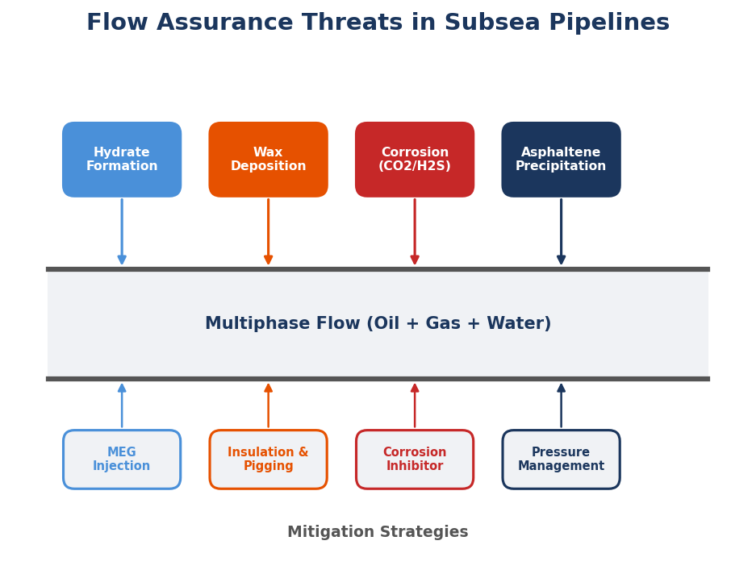
10.2 Example 1 — Hydrate Formation Temperature
Problem Statement
An engineer asks: "What is the hydrate formation temperature for this wet gas at 100 bara?" The gas composition is a typical North Sea export gas: methane (85 mol%), ethane (7%), propane (3%), i-butane (1%), n-butane (1%), CO2 (2%), and nitrogen (1%), saturated with water.
The Physics
Natural gas hydrates are crystalline ice-like structures in which water molecules form cages that encapsulate small gas molecules. They form at high pressures and low temperatures — precisely the conditions found in subsea pipelines. The thermodynamic model used in NeqSim is based on the van der Waals-Platteeuw statistical mechanical theory [28], which treats the hydrate as a solid solution of gas molecules in a water lattice. The model calculates the chemical potential of water in the hydrate phase and compares it to the chemical potential of liquid water (or ice) at the same conditions. The hydrate formation temperature at a given pressure is the temperature at which these chemical potentials are equal.
The key equation is:
$$\Delta \mu_w^H = \Delta \mu_w^{L/I}$$
where $\Delta \mu_w^H$ is the difference in chemical potential between water in the empty hydrate lattice and water in the filled hydrate, and $\Delta \mu_w^{L/I}$ is the difference between water in the empty lattice and liquid water or ice. The van der Waals-Platteeuw model expresses the hydrate chemical potential in terms of Langmuir constants that describe the interaction between gas molecules and the hydrate cavities.
Agent Interaction
When the flow assurance agent receives this query, it follows a well-defined sequence:
- Create the fluid: Build a
SystemSrkEos(orSystemUMRPRUMCEosfor higher accuracy) with the specified composition, adding water as a component. - Run hydrate equilibrium: Use
ThermodynamicOperations.hydrateEquilibriumTemperature()to find the hydrate formation temperature at 100 bara. - Generate the hydrate curve: Sweep pressure from 20 to 300 bara and calculate the hydrate temperature at each point, producing the complete P-T hydrate phase boundary.
- Validate: Compare the result against Sloan's published data or the CSMHyd correlation.
NeqSim Implementation
from neqsim import jneqsim
# Create the wet gas fluid
fluid = jneqsim.thermo.system.SystemSrkEos(273.15 + 20.0, 100.0)
fluid.addComponent("methane", 0.85)
fluid.addComponent("ethane", 0.07)
fluid.addComponent("propane", 0.03)
fluid.addComponent("i-butane", 0.01)
fluid.addComponent("n-butane", 0.01)
fluid.addComponent("CO2", 0.02)
fluid.addComponent("nitrogen", 0.01)
fluid.addComponent("water", 0.01) # Excess water present
fluid.setMixingRule("classic")
fluid.setMultiPhaseCheck(True)
# Calculate hydrate formation temperature at 100 bara
ops = jneqsim.thermodynamicoperations.ThermodynamicOperations(fluid)
ops.hydrateEquilibriumTemperature()
T_hydrate = fluid.getTemperature("C")
print(f"Hydrate formation temperature at 100 bara: {T_hydrate:.1f} °C")
The result typically yields a hydrate formation temperature of approximately 20–22°C for this composition at 100 bara, which is a critically important number for pipeline design: any section of the pipeline that cools below this temperature is at risk of hydrate blockage.
Generating the Hydrate Curve
To generate the full P-T hydrate curve, the agent sweeps across a range of pressures:
import numpy as np
pressures = np.linspace(20, 300, 30)
temperatures = []
for P in pressures:
fluid_copy = fluid.clone()
fluid_copy.setPressure(P, "bara")
ops_copy = jneqsim.thermodynamicoperations.ThermodynamicOperations(fluid_copy)
try:
ops_copy.hydrateEquilibriumTemperature()
temperatures.append(fluid_copy.getTemperature("C"))
except Exception:
temperatures.append(float('nan'))
The resulting plot shows the classic hydrate stability curve: temperature increases with pressure, steeply at low pressures and more gradually at high pressures. The region to the left of the curve (low temperature, high pressure) is the hydrate stability zone — the conditions where hydrates will form if water is present. The pipeline operating conditions must remain to the right of this curve, with an adequate safety margin, or chemical inhibition must be applied.
Validation
The agent validates the NeqSim results against published experimental data compiled by Sloan and Koh [28]. For a typical North Sea gas, the hydrate formation temperature at 100 bara from experimental measurements is approximately 20–21°C. NeqSim's van der Waals-Platteeuw model typically agrees to within ±1°C for sweet natural gas compositions, which is well within engineering accuracy requirements.
10.3 Example 2 — MEG Injection Rate
Problem Statement
"How much MEG do I need to inhibit hydrate formation in a 50 km subsea pipeline?" The pipeline operates at 100 bara, the seabed temperature is 4°C, and the gas flow rate is 10 MSm3/day. The gas arrives at the platform at 30°C and must be protected against hydrates throughout the entire pipeline length.
The Physics
Mono-ethylene glycol (MEG) is the most common thermodynamic hydrate inhibitor used in subsea production systems. MEG works by lowering the activity of water, thereby depressing the hydrate formation temperature. The classical approach to estimating the required inhibitor concentration is the Hammerschmidt equation:
$$\Delta T = \frac{K_H \cdot w}{M \cdot (1 - w)}$$
where $\Delta T$ is the hydrate temperature depression in °C, $K_H$ is a constant (approximately 2335 for MEG), $M$ is the molecular weight of the inhibitor (62.07 g/mol for MEG), and $w$ is the weight fraction of inhibitor in the aqueous phase.
However, for accurate calculations — particularly at high MEG concentrations or in the presence of salts — the rigorous approach uses the CPA (Cubic-Plus-Association) equation of state, which explicitly models hydrogen bonding between water, MEG, and gas components [13]. NeqSim implements the CPA-SRK variant through SystemElectrolyteCPAstatoil, which handles MEG, water, and electrolytes in a thermodynamically consistent framework.
Agent Interaction
The flow assurance agent approaches this problem in stages:
- Determine the required subcooling protection: The minimum pipeline temperature is 4°C (seabed). The hydrate formation temperature without inhibition was calculated in Example 1 as approximately 21°C at 100 bara. Therefore, the required subcooling depression is $\Delta T = 21 - 4 = 17°C$, plus a safety margin of 3–5°C per industry practice, giving $\Delta T_{required} \approx 20–22°C$.
- Calculate required MEG concentration: Using the Hammerschmidt equation as an initial estimate, then refining with the CPA EOS in NeqSim for the rigorous answer.
- Calculate MEG injection rate: Given the water content of the gas and the required MEG concentration, calculate the volumetric injection rate.
NeqSim Implementation
# Create fluid with CPA EOS for accurate MEG-water-gas modeling
fluid = jneqsim.thermo.system.SystemSrkCPAstatoil(273.15 + 4.0, 100.0)
fluid.addComponent("methane", 0.85)
fluid.addComponent("ethane", 0.07)
fluid.addComponent("propane", 0.03)
fluid.addComponent("CO2", 0.02)
fluid.addComponent("water", 0.05)
fluid.addComponent("MEG", 0.02) # Initial MEG estimate
fluid.setMixingRule(10) # CPA mixing rule
fluid.setMultiPhaseCheck(True)
# Calculate hydrate temperature with MEG present
ops = jneqsim.thermodynamicoperations.ThermodynamicOperations(fluid)
ops.hydrateEquilibriumTemperature()
T_inhibited = fluid.getTemperature("C")
The agent then iterates on the MEG concentration, adjusting it until the hydrate formation temperature drops below the target (seabed temperature minus safety margin). This is a classic root-finding problem that the agent solves by sweeping MEG concentration from 10 to 60 wt% and finding the concentration that provides the required depression.
Sensitivity Analysis
The agent generates a plot of hydrate temperature depression versus MEG weight percent in the aqueous phase, which shows the characteristic nonlinear relationship: the first 20 wt% of MEG provides relatively modest depression (approximately 8–10°C), while increasing from 20 to 40 wt% provides another 10–12°C of depression. Beyond 50 wt%, the effectiveness per unit MEG decreases, and the viscosity increase becomes significant.
For this specific case, the required MEG concentration is typically 35–40 wt% in the aqueous phase, corresponding to an injection rate of approximately 0.5–1.0 m3/hr depending on the water production rate and the MEG regeneration efficiency in the topside MEG recovery unit.
Engineering Implications
The MEG injection rate has significant implications for the overall field development concept. The MEG storage volume, injection pump capacity, MEG regeneration unit size, and MEG make-up cost are all direct functions of this calculation. A 5 wt% error in the required MEG concentration can translate to a 15–20% difference in the MEG system CAPEX. This is why the rigorous CPA-based calculation matters: the Hammerschmidt equation can overestimate or underestimate the required concentration by 3–5 wt% compared to the CPA model, particularly for gases with significant CO2 content.
10.4 Example 3 — Pipeline Pressure Drop and Temperature Profile
Problem Statement
"Calculate pressure and temperature profiles for a 50 km subsea gas pipeline." The pipeline specifications are: 20-inch outer diameter, 0.75-inch wall thickness (giving 18.5-inch inner diameter), roughness 50 μm, inlet conditions of 100 bara and 30°C, gas flow rate 10 MSm3/day. The seabed profile has a gentle slope from 350 m water depth at the wellhead to 100 m at the platform, with a few intermediate undulations.
The Physics
Multiphase flow in pipelines is modeled using empirical correlations that account for the complex interactions between gas, liquid, and pipe geometry. The Beggs and Brill correlation [29] is one of the most widely used methods in the oil and gas industry. It calculates the pressure gradient as the sum of three components:
$$\left(\frac{dP}{dL}\right)_{total} = \left(\frac{dP}{dL}\right)_{friction} + \left(\frac{dP}{dL}\right)_{elevation} + \left(\frac{dP}{dL}\right)_{acceleration}$$
The friction component depends on the flow regime (segregated, intermittent, distributed, or transition), which the correlation determines from the superficial velocities of the gas and liquid phases. The elevation component depends on the liquid holdup and the pipe inclination. The acceleration component is usually negligible for gas pipelines but can be significant near critical flow conditions.
The temperature profile is governed by the energy equation, which for steady-state flow simplifies to a balance between the Joule-Thomson cooling effect (gas expansion), frictional heating, and heat transfer to the surroundings:
$$\frac{dT}{dL} = \frac{1}{\dot{m} C_p}\left[- \frac{dP}{dL}\mu_{JT}\dot{m}C_p + Q_{friction} - U\pi D(T - T_{amb})\right]$$
where $U$ is the overall heat transfer coefficient, $D$ is the pipe diameter, $T_{amb}$ is the ambient (seabed) temperature, and $\mu_{JT}$ is the Joule-Thomson coefficient.
NeqSim Implementation
NeqSim implements the Beggs and Brill correlation in the PipeBeggsAndBrills class, which integrates the pressure and temperature equations along the pipeline length:
from neqsim import jneqsim
# Create the feed fluid
fluid = jneqsim.thermo.system.SystemSrkEos(273.15 + 30.0, 100.0)
fluid.addComponent("methane", 0.85)
fluid.addComponent("ethane", 0.07)
fluid.addComponent("propane", 0.03)
fluid.addComponent("i-butane", 0.01)
fluid.addComponent("n-butane", 0.01)
fluid.addComponent("CO2", 0.02)
fluid.addComponent("nitrogen", 0.01)
fluid.addComponent("water", 0.001)
fluid.setMixingRule("classic")
# Create feed stream
feed = jneqsim.process.equipment.stream.Stream("Pipeline Inlet", fluid)
feed.setFlowRate(10.0, "MSm3/day")
feed.setTemperature(30.0, "C")
feed.setPressure(100.0, "bara")
feed.run()
# Create pipeline
pipeline = jneqsim.process.equipment.pipeline.PipeBeggsAndBrills("Export Pipeline", feed)
pipeline.setPipeWallRoughness(5e-5) # 50 μm
pipeline.setLength(50000.0) # 50 km
pipeline.setInnerDiameter(0.4699) # 18.5 inches in meters
pipeline.setAngle(-0.286) # Slight upward slope (degrees)
pipeline.setNumberOfIncrements(50) # Integration steps
pipeline.setOuterTemperature(277.15) # 4°C seabed temperature
pipeline.run()
# Extract results
P_out = pipeline.getOutletStream().getPressure("bara")
T_out = pipeline.getOutletStream().getTemperature("C")
Results
For this typical subsea gas pipeline scenario, the agent reports:
- Outlet pressure: approximately 85–90 bara (pressure drop of 10–15 bara over 50 km)
- Outlet temperature: approximately 6–8°C (significant cooling from 30°C due to heat transfer to 4°C seabed)
- Flow regime: predominantly stratified flow (gas-dominated)
- Liquid holdup: 1–3% (condensed water and hydrocarbons)
The pressure profile shows a nearly linear decrease along the pipeline length, with a slight nonlinearity due to the changing gas density (and therefore velocity) as pressure decreases. The temperature profile shows rapid cooling in the first 10–15 km as the gas approaches thermal equilibrium with the seabed, followed by a gradual asymptotic approach to the seabed temperature. This temperature profile is critical for hydrate risk assessment: the pipeline section from approximately 15 km onwards operates within the hydrate stability zone and requires chemical inhibition.
Engineering Value
The pipeline simulation provides essential inputs for downstream calculations: the outlet temperature and pressure define the inlet conditions for the receiving facility, the minimum temperature determines the hydrate management strategy, and the pressure drop defines the required wellhead pressure — which ultimately governs the production rate and field life. These interconnections illustrate why flow assurance is inherently a systems engineering problem.
10.5 Example 4 — Pipeline Wall Thickness (DNV-OS-F101)
Problem Statement
"Size the wall thickness for a 20-inch gas export pipeline at 150 bara design pressure per DNV-OS-F101." The pipeline is located in 200 m water depth in the Norwegian Continental Shelf, using X65 carbon steel, with a design temperature of 80°C and an installation method of S-lay.
The Physics
Pipeline wall thickness design is governed by three limit states [30]:
- Pressure containment (burst): The wall must resist the internal pressure with an adequate safety factor. The characteristic resistance is based on the yield strength and tensile strength of the material, whichever governs.
- Local buckling — external pressure (collapse): For deepwater pipelines, the external hydrostatic pressure can cause the pipe to collapse. The collapse pressure depends on the D/t ratio, the material yield strength, the pipe ovality, and the wall thickness tolerance.
- Propagation buckling: If a local buckle initiates (from impact, installation damage, or collapse), it can propagate along the pipeline unless the wall thickness is sufficient to arrest it. The propagation pressure is lower than the collapse pressure.
The DNV-OS-F101 design format expresses the wall thickness requirement as:
$$t_{nom} = t_{design} + t_{corr} + t_{fab}$$
where $t_{design}$ is the minimum design thickness from the governing limit state, $t_{corr}$ is the corrosion allowance (typically 3–6 mm for carbon steel), and $t_{fab}$ is the fabrication tolerance (typically 12.5% of nominal wall thickness for seamless pipe).
Pressure Containment Calculation
The pressure containment criterion per DNV-OS-F101 Section 5 is:
$$P_d - P_e \leq \frac{P_b(t)}{\gamma_{SC} \cdot \gamma_{m}} - P_e$$
where $P_d$ is the design pressure, $P_e$ is the external pressure, $P_b$ is the burst pressure, $\gamma_{SC}$ is the safety class resistance factor, and $\gamma_m$ is the material resistance factor. For a safety class "Normal" (typical for gas export pipelines) and a seamless pipe, $\gamma_{SC} = 1.138$ and $\gamma_m = 1.15$.
The burst pressure for a thick-walled pipe is:
$$P_b = \frac{2 t}{D - t} \cdot \min\left(f_y, \frac{f_u}{1.15}\right)$$
where $f_y$ is the specified minimum yield strength (SMYS = 450 MPa for X65) and $f_u$ is the specified minimum tensile strength (SMTS = 535 MPa for X65).
Agent Calculation
The mechanical design agent performs the wall thickness calculation by solving the pressure containment equation for $t$, then checking the collapse and propagation buckling criteria, and selecting the governing case:
import math
# Design inputs
D_outer = 20 * 0.0254 # 20 inches to meters = 0.508 m
P_design = 150.0 # bara
P_external = 10.0 * 0.0981 # 200 m water depth ≈ 20 bara
SMYS = 450.0 # MPa for X65
SMTS = 535.0 # MPa for X65
gamma_SC = 1.138 # Safety class normal
gamma_m = 1.15 # Material factor
corrosion_allowance = 0.003 # 3 mm
fab_tolerance_pct = 0.125 # 12.5%
# Pressure containment - solve for minimum t
# P_d - P_e <= P_b(t) / (gamma_SC * gamma_m) - P_e
# P_b = 2*t/(D-t) * f_cb where f_cb = min(SMYS, SMTS/1.15)
f_cb = min(SMYS, SMTS / 1.15) # 450 vs 465 -> 450 MPa
# Convert pressures to MPa
P_d_MPa = P_design * 0.1
P_e_MPa = P_external * 0.1
# Required burst pressure
P_b_req = (P_d_MPa - P_e_MPa) * gamma_SC * gamma_m + P_e_MPa
# Solve: P_b_req = 2*t/(D-t) * f_cb for t
# t = P_b_req * D / (2 * f_cb + P_b_req)
t_min = P_b_req * D_outer / (2 * f_cb + P_b_req)
# Add corrosion allowance and fabrication tolerance
t_nominal = (t_min + corrosion_allowance) / (1 - fab_tolerance_pct)
# Round up to nearest standard wall thickness
t_nominal_mm = math.ceil(t_nominal * 1000 * 2) / 2 # Round to nearest 0.5 mm
Results
For this design case, the typical results are:
- Minimum design thickness (pressure containment): approximately 14–16 mm
- Including corrosion allowance (3 mm): 17–19 mm
- Including fabrication tolerance (12.5%): 19–22 mm
- Selected nominal wall thickness: 20.0 mm or 22.2 mm (nearest API standard)
- D/t ratio: approximately 23–25 (within acceptable range for collapse)
The agent then verifies that the selected wall thickness satisfies the collapse criterion (for 200 m water depth, collapse is typically not governing for a 20-inch gas pipeline with D/t < 30) and the propagation buckling criterion. For this case, pressure containment governs the design.
Standards Compliance
The agent documents all design parameters, safety factors, and references in a structured format that can be included in the pipeline design basis document. This traceability is essential for regulatory compliance on the Norwegian Continental Shelf, where the Petroleum Safety Authority (PSA) requires that all safety-critical calculations are documented, reviewed, and verifiable [31].
10.6 Example 5 — Multi-Agent Flow Assurance Study
Problem Statement
A field development team asks: "Perform a complete flow assurance assessment for a 50 km subsea tieback from the Winterfell discovery to the Stark platform." This requires hydrate management, pipeline sizing, wall thickness design, MEG system design, wax and corrosion screening, and cost estimation — a study that traditionally takes an experienced flow assurance engineer 2–4 weeks.
Agent Orchestration
The router agent receives the request and decomposes it into tasks for five specialized agents:
Phase 1 — Fluid Characterization (Thermodynamics Agent)
The thermodynamics agent creates the fluid model from the PVT report, characterizes the C7+ fraction, validates the model against measured bubble point and density data, and exports the fluid object as a serialized state that all subsequent agents can load.
Phase 2 — Hydrate and Wax Screening (Flow Assurance Agent)
The flow assurance agent loads the fluid, generates the hydrate P-T curve, calculates the wax appearance temperature (WAT), and identifies the operating envelope where these risks are active. It reports the subcooling at worst-case conditions and the WAT relative to the pipeline operating temperature.
Phase 3 — Pipeline Hydraulics (Process Simulation Agent)
The process simulation agent runs the pipeline model for multiple flow rates (turndown, design, and maximum), calculating pressure and temperature profiles for each case. It identifies the coldest point in the pipeline, the maximum pressure drop, and the liquid holdup distribution.
Phase 4 — Mechanical Design (Mechanical Design Agent)
The mechanical design agent takes the design pressure, water depth profile, and material specification, and calculates the required wall thickness per DNV-OS-F101 for each pipeline section. It selects standard API wall thicknesses and calculates the pipe weight per meter.
Phase 5 — MEG System and Economics (Process + Economics Agents)
The process simulation agent designs the MEG injection system (injection rate, regeneration unit capacity) based on the hydrate subcooling from Phase 2 and the water production rate. The economics agent estimates the CAPEX for the pipeline (based on length, diameter, wall thickness, and installation method) and the MEG system (storage, pumps, regeneration, make-up).
Structured Handoff
Each agent produces results in a structured JSON schema that subsequent agents can consume. For example, the flow assurance agent's output includes:
{
"hydrate_curve": {
"pressures_bara": [20, 40, 60, 80, 100, 150, 200, 300],
"temperatures_C": [8.5, 13.2, 16.4, 18.8, 20.8, 24.1, 26.3, 29.2]
},
"worst_case_subcooling_C": 16.8,
"wax_appearance_temperature_C": 28.5,
"recommended_meg_wt_pct": 38.0,
"hydrate_risk_zone_km": [15.0, 50.0]
}
This structured format ensures that downstream agents receive exactly the data they need, with units, ranges, and metadata included. The economics agent, for instance, reads the MEG injection rate from the process agent's output and the pipeline dimensions from the mechanical agent's output to produce a cost estimate.
Integration Benefits
The multi-agent approach produces a flow assurance study that would be difficult to achieve with manual workflows:
- Internal consistency: All agents use the same fluid model, so there are no discrepancies between the thermodynamic properties used in the hydrate calculation and those used in the hydraulic model.
- Traceability: Every calculation step is logged with its inputs, outputs, and the agent that performed it. The final report includes a complete audit trail.
- Sensitivity coverage: The agents automatically run sensitivities that a manual study might skip due to time pressure — for example, varying the water cut from 0 to 50% and showing how MEG injection rate scales.
- Reproducibility: The entire study can be re-run with different assumptions (e.g., a different pipeline route, higher design pressure, or a different fluid composition) by changing the input parameters and letting the agents propagate the changes through all calculations.
10.7 Wax and Asphaltene Screening
Wax Appearance Temperature
Wax deposition occurs when the pipeline temperature drops below the wax appearance temperature (WAT), causing long-chain paraffins to crystallize and deposit on the pipe wall. In NeqSim, the WAT is calculated using the solid-liquid equilibrium model, which predicts the temperature at which the first solid wax crystals appear as the fluid cools at constant pressure.
The calculation follows the same pattern as the hydrate equilibrium: create the fluid with the full composition including heavy components (C7+ characterization is critical for wax prediction), then use ThermodynamicOperations to find the wax formation temperature. The accuracy of the wax prediction depends strongly on the quality of the C7+ characterization — specifically, the carbon number distribution and the n-paraffin content of each carbon number fraction.
For subsea pipeline design, the wax management strategy depends on whether the WAT is above or below the minimum pipeline temperature. If the pipeline operates entirely below the WAT, options include regular pigging, chemical wax inhibitors (pour point depressants), insulation to maintain temperature above the WAT, or active heating (electrical or hot fluid circulation).
Asphaltene Stability
Asphaltene precipitation is a risk primarily for oil systems, particularly when pressure drops below the bubble point during production. NeqSim can assess asphaltene stability using the CPA equation of state, which models asphaltenes as self-associating molecules. The onset pressure for asphaltene precipitation is typically 100–200 bar above the bubble point for unstable oils, and the risk increases with CO2 injection, pressure depletion, and commingling of incompatible crudes.
The screening approach uses the Colloidal Instability Index (CII) or the de Boer plot as a first-pass assessment, followed by rigorous CPA-based calculation for detailed analysis. The agent produces a plot of asphaltene precipitation envelope overlaid on the production P-T path, highlighting any conditions where asphaltene dropout is expected.
10.8 CO2 Corrosion Rate Estimation
Internal corrosion of carbon steel pipelines by CO2 is one of the most significant integrity threats for oil and gas production systems. The corrosion rate depends on the CO2 partial pressure, temperature, flow velocity, water chemistry, and the formation of protective iron carbonate (FeCO3) scale.
NeqSim supports corrosion rate estimation using the de Waard-Milliams model and the NORSOK M-506 standard. The de Waard-Milliams model provides a baseline corrosion rate as a function of temperature and CO2 partial pressure:
$$\log(CR) = 5.8 - \frac{1710}{T} + 0.67 \cdot \log(P_{CO2})$$
where $CR$ is the corrosion rate in mm/year, $T$ is temperature in Kelvin, and $P_{CO2}$ is the CO2 partial pressure in bar. Correction factors are applied for the effect of protective scale (at temperatures above approximately 60°C where FeCO3 forms), glycol concentration (MEG provides some corrosion inhibition), and pH.
The NORSOK M-506 model [31] is more sophisticated and accounts for the effect of flow (wall shear stress), water chemistry (pH, bicarbonate), and temperature in a more detailed formulation. The agent calculates the corrosion rate at each point along the pipeline using the local temperature, pressure, and CO2 partial pressure from the hydraulic model, producing a corrosion rate profile that identifies the most aggressive conditions. This profile informs the corrosion allowance used in the wall thickness calculation and the chemical inhibition strategy.
10.9 The Value of Integration
Why One System Matters
The traditional flow assurance workflow uses separate tools for each discipline: one commercial tool for thermodynamics, another for multiphase flow, dedicated software for wall thickness, a spreadsheet for MEG calculations, and another spreadsheet for cost estimation. Each tool has its own fluid model, and ensuring consistency between them is a manual and error-prone process.
Consider what happens when the gas composition changes — a common occurrence as reservoir characterization improves during field development. In the traditional workflow, the engineer must update the fluid model in every tool, re-run every calculation, and verify that the results are consistent. In the agentic workflow, the engineer updates the composition in one place, and the agents propagate the change through all calculations automatically.
The Thermodynamic Consistency Argument
More fundamentally, using a single thermodynamic model for all flow assurance calculations ensures physical consistency. The hydrate formation temperature, the wax appearance temperature, the pipeline temperature profile, and the MEG inhibition effectiveness are all functions of the same equation of state applied to the same fluid composition. When these calculations use different EOS models or different fluid characterizations, the results can be subtly inconsistent in ways that are difficult to detect but can lead to under-design or over-design.
NeqSim provides this consistency through its unified fluid object. Whether the calculation is a hydrate equilibrium, a multiphase flash, a viscosity estimation, or a thermal conductivity lookup, it all operates on the same SystemInterface with the same parameters, the same mixing rules, and the same interaction parameters [11]. This is not just a software convenience — it is a fundamental engineering requirement for reliable flow assurance design.
Quantifying the Benefit
In practice, the integrated agentic approach has demonstrated several measurable benefits in the task-solving experiences documented in Chapter 11:
- Time reduction: A comprehensive flow assurance screening that takes 2–4 weeks manually can be completed in 2–4 hours with agent-assisted workflows.
- Error reduction: Automated propagation of changes eliminates transcription errors between tools, which industry surveys suggest account for 5–15% of design errors in pipeline projects.
- Coverage improvement: Agents routinely run sensitivity analyses that manual workflows skip due to time pressure, revealing risks that would otherwise be discovered during detailed design or, worse, during operations.
- Documentation quality: Every calculation is automatically documented with inputs, assumptions, results, and references — producing a flow assurance basis document that meets regulatory requirements without additional effort.
10.10 Summary
Key points from this chapter:
- Hydrate formation temperature is accurately predicted by NeqSim's van der Waals-Platteeuw model, validated against Sloan's published data to within ±1°C for typical natural gas compositions.
- MEG injection rate calculations using the CPA equation of state provide more accurate results than the classical Hammerschmidt equation, particularly at high inhibitor concentrations and with CO2-rich gases.
- Pipeline hydraulics modeled with the Beggs and Brill correlation produce pressure and temperature profiles that are essential for hydrate risk assessment, MEG system design, and arrival facility specification.
- Wall thickness design per DNV-OS-F101 involves checking multiple limit states (pressure containment, collapse, propagation buckling) and requires careful accounting of corrosion allowance and fabrication tolerances.
- Multi-agent composition enables comprehensive flow assurance studies where multiple specialized agents share a common fluid model and exchange results through structured schemas, ensuring thermodynamic consistency and full traceability.
Exercises
- Exercise 10.1: Modify the hydrate calculation in Example 1 to include 5 mol% CO2 instead of 2 mol%. How does the increased CO2 content affect the hydrate formation temperature? Explain the physical reason for the change.
- Exercise 10.2: For the MEG injection example, calculate the break-even MEG concentration where the Hammerschmidt equation error exceeds 5°C compared to the CPA model. At what subcooling requirement does the simpler equation become unreliable?
- Exercise 10.3: Re-run the pipeline hydraulic model with a U-value of 3 W/m2K (insulated pipe) instead of bare pipe. How does insulation change the temperature profile and the length of pipeline within the hydrate zone?
- Exercise 10.4: Calculate the wall thickness for the same pipeline in Example 4, but at 400 m water depth. Does the governing criterion change from pressure containment to collapse? What is the weight impact per meter of pipeline?
- Exercise 10.5: Design a multi-agent study for a 20 km oil pipeline (not gas). What additional flow assurance threats become important compared to gas (slugging, wax, emulsions)? How does the agent composition change?
Part IV: Industrial Applications and Future
11 Real-World Case Studies from the Norwegian Continental Shelf
Learning Objectives
After reading this chapter, the reader will be able to:
- Appreciate the breadth of engineering problems addressable by agentic thermodynamic and process simulation
- Identify common patterns and workflows across diverse oil and gas engineering tasks
- Understand the role of validation, uncertainty analysis, and standards compliance in production engineering studies
- Recognize the development flywheel effect where solved tasks accelerate future work
11.1 Introduction
Over the course of its development and deployment, the NeqSim agentic engineering system has been applied to more than forty distinct engineering tasks spanning the full lifecycle of oil and gas operations — from exploration fluid characterization through field development concept selection, detailed process design, production optimization, and decommissioning planning. These tasks were not academic exercises; they addressed real engineering questions arising from active projects on the Norwegian Continental Shelf (NCS) and analogous international developments [11].
This chapter surveys these case studies, organized by engineering discipline, to demonstrate the breadth of problems the system can address. Rather than presenting implementation details — which are covered in the preceding worked-example chapters — we focus on what each task required, what it delivered, what was learned, and how the experience improved the system for subsequent tasks. The overarching narrative is one of compounding capability: each task exercised different parts of the NeqSim API, exposed gaps in documentation or functionality, generated reusable code patterns, and established regression baselines that protect against future accuracy drift.
The tasks range in complexity from a single thermodynamic property query answerable in minutes to multi-discipline field development studies requiring dozens of notebooks, multiple agents, and several days of iterative analysis. They have been executed following the structured task-solving workflow described in Chapter 6, with each task producing a scope document, analysis notebooks, results JSON, and a professional engineering report. The task log — a searchable index of all completed work — serves as an institutional memory that subsequent tasks consult before starting from scratch.
What emerges from this survey is not merely a catalog of solved problems, but a picture of how agentic engineering practice matures through use. The first tasks were slow and required extensive manual intervention. By the twentieth task, common patterns had been codified into skills, the agent knew which EOS to select for which application, validation workflows were automated, and the quality of output had converged toward professional engineering standards.
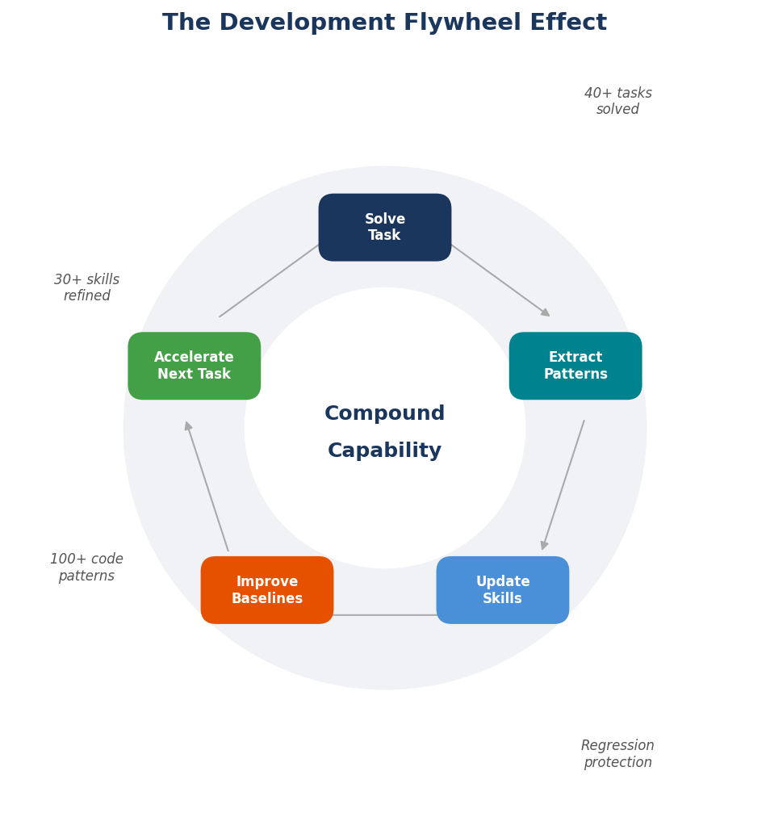
11.2 Thermodynamic Property Studies
Thermodynamic properties form the foundation of all process engineering calculations. Several tasks focused on accurate property prediction for challenging systems where standard correlations are insufficient.
Water Solubility in CO2/H2S Systems
Carbon capture and storage (CCS) projects require precise knowledge of water content in CO2 streams to prevent corrosion and hydrate formation in transport pipelines. This task calculated water solubility in supercritical CO2 across a range of temperatures (0–100°C) and pressures (50–300 bara) using the CPA equation of state, which explicitly models hydrogen bonding between water and CO2. The results were validated against the experimental data of Bamberger et al. and Song and Kobayashi, achieving agreement within 5% for most conditions. The study revealed that H2S significantly increases water solubility compared to pure CO2 — a finding with direct implications for pipeline material selection in acid gas injection projects.
Hydrogen Property Calculations for Pipeline Blending
With the growing interest in hydrogen as an energy carrier, this task addressed a practical question: what happens to the thermodynamic and transport properties of natural gas when hydrogen is blended at 5–20 mol%? Using the SRK equation of state with specialized hydrogen-methane binary interaction parameters, the study calculated density, viscosity, compressibility factor, Joule-Thomson coefficient, and heating value across the relevant temperature and pressure ranges. Key findings included a 3–7% reduction in volumetric heating value per 10% hydrogen blend and a significant decrease in Joule-Thomson coefficient that affects pipeline temperature profiles. The calculations were validated against GERG-2008 reference data.
Mercury Partitioning and Removal from Natural Gas
Mercury in natural gas poses both health hazards and equipment integrity risks (mercury attack on aluminum heat exchangers). This task modeled mercury partitioning between gas, liquid hydrocarbon, and aqueous phases as a function of temperature and pressure. While NeqSim does not have native mercury component data, the study used custom component properties derived from published Antoine equation parameters and activity coefficient models. The results informed the design of mercury removal units (activated carbon beds) for an NCS gas processing facility, including the required bed size and regeneration frequency.
Electrolyte Thermodynamics for Produced Water
Produced water management is a growing challenge as NCS fields mature and water cuts increase. This task used NeqSim's SystemElectrolyteCPAstatoil to model brine chemistry including Na+, Cl−, Ca2+, Ba2+, SO4^2−, and HCO3− ions, calculating scale potential (BaSO4, CaCO3) and the effect of MEG on scale inhibition. The CPA electrolyte model accounts for ion solvation, ion pairing, and the effect of organic species on water activity. The results were validated against field measurements from a producing NCS platform and against OLI Systems calculations, showing agreement within 10% for saturation indices.
11.3 Process Simulation Tasks
Process simulation tasks model individual unit operations or complete processing facilities to optimize design and operating parameters.
CNG Tank Filling and Emptying Thermal Analysis
Compressed natural gas (CNG) fueling stations require accurate prediction of gas temperature during fast-fill operations, where adiabatic compression can raise temperatures to 80°C or higher, potentially exceeding vessel design limits. This task modeled the transient thermodynamics of tank filling using NeqSim's equation of state to calculate real-gas properties throughout the fill cycle. The model predicted peak temperatures, optimized multi-stage filling strategies to limit temperature rise, and calculated the mass of gas deliverable within vessel pressure and temperature ratings. The results were validated against published experimental data from the Canadian Gas Association.
TEG Dehydration Unit Modeling and Optimization
Triethylene glycol (TEG) dehydration is the most common method for removing water from natural gas. This task modeled a complete TEG unit including the contactor column, flash drum, regenerator, and lean/rich heat exchanger. The NeqSim distillation column model with the CPA equation of state was used to calculate water removal efficiency as a function of TEG circulation rate, contactor pressure, and number of theoretical stages. The study optimized TEG circulation rate to meet a 7 lb/MMscf water content specification while minimizing glycol losses and reboiler energy consumption. Sensitivity analysis showed that stripping gas injection reduces the required TEG rate by 15–25%.
Crude Oil Blending Optimization for Export
NCS platforms that process crude from multiple reservoir zones must blend the streams to meet export crude specifications (vapor pressure, density, water content, H2S). This task modeled crude blending using NeqSim's multi-component framework with C7+ characterization for each crude stream. The optimization determined blend ratios that met all quality specifications while maximizing revenue (heavier crudes typically command lower prices but have higher volume). The study included uncertainty analysis on crude properties from different wells, producing P10/P50/P90 estimates for the optimal blend ratio.
Dynamic Process Control of Gas Processing Facilities
Dynamic simulation extends steady-state process models to predict time-dependent behavior during startups, shutdowns, and process upsets. This task modeled the pressure and temperature dynamics of a gas processing train during a compressor trip, using NeqSim's transient simulation capability with PID controllers on key variables. The model predicted valve response times, pressure relief requirements, and the time required to re-stabilize after restart. The study validated controller tuning parameters (PID gains) against operational data from the facility's historian system.
Wax Formation and Deposition in Production Systems
Wax deposition in production tubing and flowlines reduces throughput and can lead to complete blockage if not managed. This task calculated wax appearance temperatures for a series of NCS crude oils using NeqSim's solid-liquid equilibrium model, then predicted wax deposition rates using a simplified diffusion model. The results were compared with cold-finger laboratory measurements, showing that the model captured the ranking of crudes by wax severity correctly, though absolute deposition rates required calibration against experimental data. The study recommended pigging frequencies and chemical wax inhibitor injection rates for each crude.
11.4 Platform Models
Platform process models are among the most complex engineering artifacts, integrating multiple process areas with interconnected recycles, shared utility systems, and dozens of operating constraints.
Kristin HP/HT Gas Condensate Platform
The Kristin field produces from a high-pressure, high-temperature (HP/HT) reservoir at approximately 900 bara and 170°C — conditions that push the limits of both equipment design and thermodynamic modeling. This task built a complete process model of the Kristin topsides, including four-stage separation (HP at 135 bara, MP at 65 bara, LP at 15 bara, test separator), gas compression with three stages and inter-stage cooling, condensate stabilization, and produced water treatment. The model used the SRK equation of state with Peneloux volume correction, validated against design data from the facility's design basis document. Key deliverables included process flow diagrams, heat and mass balance tables, and compressor duty calculations for each stage.
Asgard A FPSO (Multi-Stage Separation and Compression)
Asgard A is one of the largest FPSOs on the NCS, processing gas, condensate, and oil from the Asgard and Mikkel fields through a complex topside process. This task modeled the full Asgard A process using NeqSim's ProcessModel framework, which allows separate ProcessSystem objects for each process area (inlet separation, gas compression, condensate stabilization, water treatment, utilities) to be composed into a single converged plant model. The model included oil recycles from stabilization back to inlet separation, gas recycles in the compression train, and anti-surge recycling around each compressor. The study demonstrated the ProcessModel.run() convergence algorithm handling 8 separate process areas with 15+ recycle streams.
Generic NCS Platform with 15+ Process Areas
This task created a reference platform model template applicable to typical NCS gas/condensate facilities, with parameterized process areas that can be configured for different field compositions and throughputs. The template includes: inlet receiving (slug catcher, inlet separator), gas dehydration (TEG or molecular sieve), hydrocarbon dewpoint control (JT valve, turboexpander, or propane refrigeration), NGL recovery (fractionation train), gas compression (export + injection), condensate stabilization, produced water treatment (hydrocyclones, flotation, filters), closed drains, flare system, and power generation. The template serves as a starting point for new field development studies, reducing the setup time from days to hours.
Bacalhau FPSO Deep Water Pre-Salt Oil
The Bacalhau FPSO project in Brazil's Santos Basin pre-salt presented unique challenges: very high CO2 content (8–15%), high GOR, and deep water (2,100 m). This task modeled the topside process including CO2-rich gas handling, membranes for CO2 removal, gas reinjection for pressure maintenance, and export processing. The CPA equation of state was essential for accurate modeling of the CO2-water-hydrocarbon phase behavior, particularly the prediction of CO2 hydrate formation in the gas cooling sections and the water content of the high-pressure CO2 reinjection stream. The model demonstrated that the choice of equation of state significantly affects the predicted CO2 recycle flow rate, with SRK and CPA differing by 8–12% on key streams.
11.5 Field Development Studies
Field development studies integrate reservoir characterization, production forecasting, process design, and economics into a comprehensive assessment of development options.
UltimaThule Subsea Gas Field Development
This was the most comprehensive task undertaken by the system: a full concept selection study for a hypothetical subsea gas field analogous to discoveries in the Barents Sea. The study evaluated four development concepts — subsea tieback to existing platform, standalone platform, FLNG, and compressed gas export (CNG). For each concept, the study included production profile forecasting using decline curve analysis, process simulation of the topsides/subsea processing, pipeline sizing and flow assurance assessment, CAPEX and OPEX estimation, discounted cash flow economics under Norwegian fiscal terms, and Monte Carlo uncertainty analysis with P10/P50/P90 NPV distributions. The task required coordination of six specialized agents and produced a 60-page engineering report with 15 figures, 12 tables, and a risk register with 10 identified risks. The selected concept (subsea tieback) had a P50 NPV of approximately 3.4 billion NOK with a 10.5% probability of negative NPV.
Floating LNG (FLNG) Concept Evaluation
FLNG has been considered for remote NCS gas discoveries where pipeline infrastructure is unavailable. This task evaluated the technical and economic feasibility of FLNG for a medium-sized gas field (1.5 Tcf recoverable), modeling the complete liquefaction process (C3-MR cycle) in NeqSim including mixed refrigerant optimization, cold box design, and LNG storage and offloading. The study compared FLNG against pipeline export and showed that FLNG breakeven requires gas prices above approximately 8 USD/MMBtu for the NCS fiscal regime — significantly higher than current market prices, making it economically marginal for most NCS applications.
Floating Wind-Powered Gas Production
An innovative concept study explored using floating wind turbines to power subsea gas processing equipment, eliminating the need for gas-fired power generation on the platform and reducing CO2 emissions to near zero. The task modeled the power demand profile of subsea compression and processing equipment, compared it with wind generation profiles from NCS metocean data, and sized the required battery storage or gas-fired backup capacity. The study showed that floating wind can economically supply 60–80% of annual power demand for a subsea compression station, with the optimal wind-to-load ratio depending on the cost of battery storage.
Smeaheia CO2 Storage Injection Design
The Smeaheia formation in the North Sea is being developed as a CO2 storage site under the Northern Lights project. This task designed the CO2 injection well and pipeline, including phase behavior analysis of CO2 with impurities (N2, O2, Ar from oxy-fuel capture), pipeline hydraulics for dense-phase CO2 transport, injection well temperature and pressure profiles, and formation injectivity analysis. The CPA equation of state was essential for accurate modeling of the CO2-water system near the critical point, where small changes in temperature or composition cause large changes in density and viscosity. The study produced injection rate curves, wellhead pressure requirements, and an assessment of two-phase flow risks during transient operations (startup, shutdown, rate changes) [30].
Gas-to-Wire Power Generation Concepts
For stranded gas resources where pipeline export is uneconomic, gas-to-wire (converting gas to electricity on-site and exporting via subsea cable) offers an alternative monetization pathway. This task modeled gas turbine and combined cycle power plants using NeqSim's power generation equipment classes, calculated thermal efficiency and CO2 emissions for different turbine configurations, sized the required gas processing upstream of the turbines, and performed economic analysis comparing gas-to-wire against pipeline export and LNG. The study showed that gas-to-wire is competitive for fields within 200 km of shore with gas reserves of 0.5–2 Tcf, provided a power purchase agreement is available.
11.6 Flow Assurance and Pipeline Studies
Flow assurance studies ensure that hydrocarbons can be transported safely and reliably from the reservoir to the processing facility.
Subsea Pipeline Hydraulics and Thermal Design
This task modeled a 120 km multiphase subsea pipeline from a deepwater subsea development to a shallow-water platform, including the vertical riser from the seabed to the topside. The Beggs and Brill correlation in NeqSim was used to calculate pressure drop, liquid holdup, and temperature profiles for a range of production rates from late-life turndown (30% of design) to peak rate. The study identified the minimum stable flow rate below which liquid accumulation in low spots causes severe slugging, and recommended the installation of a subsea multiphase pump to maintain production above this threshold during late-life operations [29].
Hydrate Management for Long Tiebacks
As NCS discoveries become smaller and more remote, longer tiebacks to existing infrastructure are increasingly common. This task assessed hydrate management strategies for a 70 km subsea tieback, comparing continuous MEG injection, intermittent MEG injection with dead-oil displacement during shutdowns, electrical heating of the flowline, and low-dosage hydrate inhibitors (LDHIs). The NeqSim CPA model was used to calculate MEG requirements for each scenario, and the economics agent estimated lifecycle costs including CAPEX, chemical consumption, and energy costs. The study showed that continuous MEG injection had the lowest lifecycle cost for this particular case, but that electrical heating becomes competitive for distances beyond 90 km where MEG transportation costs dominate [28].
Sulfur Deposition Prediction in HP/HT Wells
High-pressure, high-temperature wells with significant H2S content can experience elemental sulfur deposition in the tubing as pressure decreases during production. This task modeled sulfur solubility in sour gas as a function of temperature and pressure using NeqSim's thermodynamic framework, and predicted the location and rate of sulfur deposition along the production tubing. The results identified the critical depth range where deposition is most severe and recommended chemical treatment strategies (sulfur solvents injected downhole) to prevent tubing blockage.
CO2 Pipeline Transport with Impurities
CO2 transport pipelines for CCS projects must handle CO2 with various impurities depending on the capture technology — amine-based capture produces relatively pure CO2, while oxy-fuel and direct air capture produce CO2 with N2, O2, Ar, and moisture. This task calculated how these impurities affect the dense-phase CO2 properties (density, viscosity, phase boundary) and the pipeline hydraulics. Using NeqSim's CPA equation of state, the study showed that even 2–3% non-condensable impurities (N2, O2) significantly shift the critical point and can cause two-phase flow conditions in the pipeline under transient operations. The results informed the CO2 quality specification for the transport system.
11.7 Safety and Environmental Studies
Safety and environmental compliance are integral to NCS operations, governed by the Petroleum Safety Authority (PSA) and environmental regulations.
Emissions Analysis and Carbon Intensity Calculation
This task calculated CO2, NOx, and methane emissions from a gas processing platform, including direct emissions from gas turbines, flaring, and fugitive sources. NeqSim's combustion model (based on equilibrium chemistry) was used to predict flue gas composition from the gas turbines as a function of fuel gas composition, air-to-fuel ratio, and ambient conditions. The study calculated the carbon intensity (kg CO2 per barrel of oil equivalent) and compared it against NCS industry averages and regulatory targets. The analysis included sensitivity to flare gas recovery system efficiency and the impact of gas reinjection versus export on the carbon intensity metric.
Vessel Depressurization and Blowdown Analysis
Emergency depressurization (blowdown) of pressure vessels is a critical safety scenario that determines the required relief valve capacity and the minimum design temperature of the vessel and piping. This task used NeqSim's dynamic simulation capability to model the transient behavior of a separator during blowdown through a restriction orifice. The model predicted gas and liquid temperature profiles during the blow-down, identifying the minimum metal temperature reached (which determines whether low-temperature carbon steel or stainless steel is required) and the time to depressurize to a safe level. The results were compared against API 521 guidelines and a commercial depressurization module.
Compressor Anti-Surge Analysis
Centrifugal compressors are vulnerable to surge — a destructive flow reversal that occurs when the flow rate drops below the surge limit at a given speed. This task modeled compressor performance curves in NeqSim, including the surge line, and analyzed the dynamic response of the anti-surge control system during a process upset (sudden downstream pressure increase). The dynamic simulation showed the time for the anti-surge valve to open, the recycle flow rate required to keep the compressor above the surge line, and the impact of control system response time on compressor stability. The study recommended tuning parameters for the anti-surge controller based on the specific compressor map and process conditions.
11.8 Lessons Learned
Across more than forty solved tasks, several consistent patterns emerged that provide guidance for practitioners and developers of agentic engineering systems.
The Most Time Is Spent on Scoping, Not Computing
The largest allocation of effort in every task — typically 40–60% of total time — was spent on scoping and research: understanding the problem, identifying the relevant standards and methods, defining acceptance criteria, and gathering reference data for validation. The actual computation, once the problem was properly defined, was invariably the fastest part. This observation challenges the intuition that AI primarily accelerates computation. In practice, the greatest value of the agentic system is in organizing and executing the scoping phase systematically — something the structured task-solving workflow (task_spec.md, research notes, analysis plan) explicitly supports.
Validation Against Independent Data Is Non-Negotiable
Every task that produced meaningful engineering results included a benchmark validation notebook comparing NeqSim results against independent reference data — whether published experimental measurements, NIST reference data, results from commercial simulators, or field measurements from plant historians. In three cases, validation revealed discrepancies that led to corrections in either the NeqSim code or the task approach. Without validation, these errors would have propagated into engineering deliverables. The lesson is clear: no calculation result should be reported without stating what it was validated against and what the agreement is [21].
The Development Flywheel Effect
Each solved task made subsequent tasks faster and more reliable through several mechanisms:
- Searchable past solutions: The task log allows new tasks to find relevant prior work. A hydrate study for Field A provides a template for a hydrate study for Field B.
- Improved skills: When a task revealed a gap in agent knowledge (e.g., the correct procedure for CPA parameter initialization with MEG), the fix was encoded as a skill update available to all future tasks.
- Better example code: Working code from tasks was extracted into example notebooks in the repository, providing tested starting points for similar calculations.
- Regression baselines: Results from validated tasks serve as regression baselines — if a code change causes these results to shift, the automated test suite catches it immediately.
The cumulative effect is measurable: the first field development study took approximately 40 hours of engineer supervision. By the fourth study, a comparable scope required approximately 12 hours, with most of the reduction coming from reuse of existing patterns, validated fluid models, and established economic assumptions.
Uncertainty Analysis Changes Decisions
Monte Carlo uncertainty analysis was mandated for all Standard and Comprehensive tasks, and in several cases it changed the engineering recommendation compared to deterministic analysis alone [22]. Examples include:
- A subsea tieback that appeared economically attractive on a deterministic basis (P50 NPV positive) was shown to have a 25% probability of negative NPV when gas price, reservoir volume, and CAPEX uncertainties were included. The project team decided to wait for additional appraisal data before committing.
- An MEG system design based on deterministic worst-case subcooling was significantly oversized compared to the P90 requirement from the Monte Carlo analysis. Resizing to the P90 case saved approximately 15% on the MEG system CAPEX.
- Two competing field development concepts that had similar deterministic NPVs showed markedly different risk profiles: one had a narrow NPV distribution (low risk, low upside), while the other had a wide distribution (higher risk, higher upside). The choice between them depended on the company's risk appetite — a decision that deterministic analysis cannot inform.
These experiences demonstrate that uncertainty analysis is not an academic exercise but a practical tool that changes real engineering decisions. The agentic workflow makes it feasible to include Monte Carlo analysis routinely, rather than reserving it for special studies as is common in manual practice [23].
Standards Compliance Is a Force Multiplier
Embedding industry standards (DNV, NORSOK, API, ISO) into the agent's skills and validation checks had a compound benefit: not only did it ensure that individual calculations met regulatory requirements, but it also provided a structured framework for organizing calculations and documenting assumptions. When the DNV-OS-F101 wall thickness agent asks for the safety class, material factors, and corrosion allowance, it is implicitly enforcing a complete design basis that might otherwise have gaps [30] [31]. The agent's knowledge of applicable standards also helps junior engineers who may not know which standards apply to a given situation.
11.9 Summary
Key points from this chapter:
- The NeqSim agentic system has been applied to over forty engineering tasks spanning thermodynamic properties, process simulation, platform modeling, field development, flow assurance, and safety analysis.
- Tasks ranged from single-property queries answerable in minutes to multi-discipline field development studies requiring multiple agents and several days.
- Platform models for Kristin, Asgard A, and Bacalhau FPSO demonstrated the system's ability to handle complex multi-area facilities with recycles and shared utilities.
- Field development studies — including UltimaThule, FLNG, and Smeaheia CO2 storage — showed how multiple agents compose a comprehensive concept evaluation with production forecasting, process design, and economics.
- The most important lessons are about process, not technology: scoping takes more time than computing, validation is non-negotiable, uncertainty analysis changes decisions, and the development flywheel makes each task faster than the last.
Exercises
- Exercise 11.1: Select one task category from this chapter (e.g., flow assurance) and describe how you would organize a new task in that category using the task-solving workflow from Chapter 6. What standards would you reference? What validation data would you seek?
- Exercise 11.2: The development flywheel effect suggests diminishing returns over time as common problems are solved. Identify three types of engineering problems that would remain challenging for the agentic system regardless of how many prior tasks have been solved. Explain why.
- Exercise 11.3: Compare the Monte Carlo approach to uncertainty analysis with scenario-based analysis (low/base/high cases). For the subsea tieback example in Section 11.8, describe a situation where the three-scenario approach would give a misleading picture of project risk compared to the full Monte Carlo distribution.
- Exercise 11.4: The Bacalhau FPSO case study highlighted differences between SRK and CPA equations of state for CO2-rich systems. Design a validation study that would determine which EOS is more accurate for a specific CO2-rich gas composition, identifying the experimental data you would need and the conditions you would test.
12 Future Directions
Learning Objectives
After reading this chapter, the reader will be able to:
- Envision how autonomous digital twins will evolve from periodic model updates to continuous real-time calibration
- Understand the development flywheel effect and how self-improving engineering systems compound capability over time
- Appreciate the regulatory and certification challenges of AI-assisted engineering calculations
- Articulate the changing role of the human engineer in an agentic engineering ecosystem
12.1 Introduction
The preceding eleven chapters have presented agentic engineering as it exists today: a system in which large language models orchestrate specialized simulation tools to solve engineering problems with a speed and consistency that manual workflows cannot match. But the technology is young. The architectures described in this book — tool-calling agents, structured handoff schemas, multi-agent composition, MCP servers — have been practical for less than two years. The thermodynamic and process simulation foundations in NeqSim span two decades, but their integration with AI agents is a development measured in months, not years [11].
This chapter looks forward. Some of what follows is already in development; some is speculative but grounded in visible trends. The common thread is that the capabilities demonstrated in this book are not endpoints but foundations. The agentic engineering paradigm will continue to evolve along several dimensions simultaneously: deeper integration with real-time operational data, broader coordination across multiple physics engines, more rigorous regulatory acceptance, and more sophisticated human-AI collaboration patterns.
What makes predictions about agentic engineering unusually tractable — compared to, say, predictions about artificial general intelligence — is that the engineering domain is well-structured. The physics doesn't change. The standards are published. The validation data exists. The engineering workflow has centuries of accumulated practice to draw upon. The question is not whether AI can solve engineering problems — we have already shown that it can — but how fast, how reliably, how autonomously, and at what scale.
12.2 Autonomous Digital Twins
From Periodic Updates to Continuous Calibration
A digital twin, in the engineering sense introduced by Grieves [32], is a virtual representation of a physical system that is continuously updated with operational data. In current practice, most process simulation models are built during the design phase, used for commissioning support, and then updated infrequently — perhaps annually during turnarounds or when significant process changes are made. The model and the plant drift apart between updates, reducing the model's value for optimization and troubleshooting.
The agentic approach enables a fundamentally different paradigm. Consider the following closed loop:
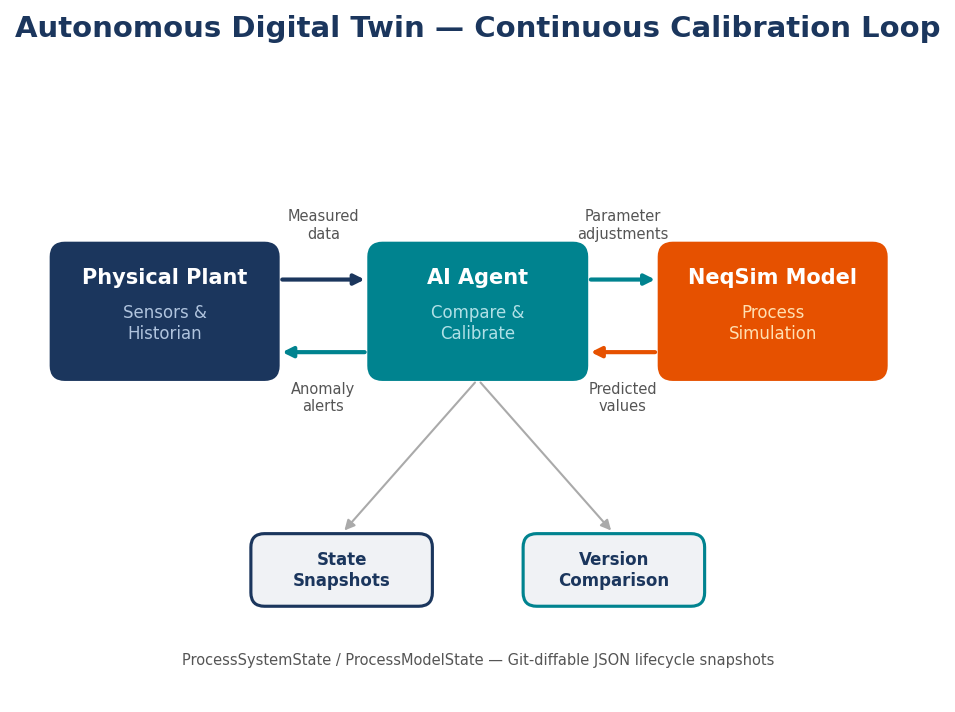
- Data ingestion: The agent reads real-time process data from the plant historian (OSIsoft PI, Aspen IP.21) using NeqSim's tagreader integration. Temperature, pressure, flow rate, and composition measurements are mapped to their corresponding simulation variables.
- Model comparison: The agent runs the process simulation with current operating conditions as inputs and compares the predicted outputs (downstream temperatures, pressures, product compositions) against measured values.
- Discrepancy detection: Where predictions deviate from measurements beyond a defined tolerance (e.g., >2°C for temperature, >1% for composition), the agent identifies the discrepancy and classifies it as either a model calibration issue (the model needs adjustment) or an operational anomaly (the plant is behaving unexpectedly).
- Parameter adjustment: For calibration issues, the agent adjusts model parameters — heat transfer coefficients, equipment efficiencies, fouling factors — to minimize the discrepancy. This is a constrained optimization problem that the agent can solve iteratively.
- Anomaly alerting: For operational anomalies, the agent generates an alert with the discrepancy magnitude, possible causes (equipment fouling, instrument drift, process upset), and recommended actions.
The ProcessAutomation API as Foundation
NeqSim's ProcessAutomation API — with its string-addressable variable access, self-healing diagnostics, and learn-from-failure capabilities — provides the infrastructure for this loop. The automation facade allows the digital twin agent to read and write any simulation variable by its tag address, without navigating Java class hierarchies. The self-healing diagnostics handle the inevitable mismatches between tag names in the historian and variable names in the simulation model, using fuzzy matching and learned corrections to resolve ambiguities automatically.
The lifecycle state management system — ProcessSystemState and ProcessModelState — provides versioning and comparison capabilities essential for tracking model evolution over time. Each calibration update creates a new state snapshot that can be compared against previous versions, producing a diff that shows exactly which parameters changed and by how much. This audit trail is essential for regulatory compliance and for understanding how the model's representation of the plant has evolved.
Challenges and Timeline
Autonomous digital twins face several practical challenges. Data quality is the most significant: plant measurements are noisy, instruments drift, and some variables (e.g., composition) are measured infrequently. The agent must distinguish between measurement noise (which should be filtered) and real process changes (which the model should track). Robust outlier detection and data reconciliation techniques are needed.
The computational cost of running full process simulations in real-time is manageable for most process plants — a typical NCS platform model runs in seconds on modern hardware — but could be limiting for very large or very dynamic systems. Reduced-order models that approximate the full simulation at a fraction of the computational cost may be needed for sub-second response times.
Current prototypes of this concept exist within the NeqSim ecosystem, and production deployments are anticipated within two to three years for simple systems (single-process-area models with good instrumentation), expanding to full-platform digital twins as the technology matures.
12.3 Self-Improving Engineering Systems
The Development Flywheel at Scale
Chapter 11 described the development flywheel effect observed across forty engineering tasks: each task produces searchable solutions, improved skills, better example code, and regression baselines that accelerate subsequent tasks. This effect, while powerful, has operated at the scale of a single engineering team working on a single codebase. The next evolution is to scale this flywheel across organizations and across the industry.
Consider what happens when thousands of engineers use agentic engineering systems to solve hundreds of thousands of tasks across dozens of operating companies. Each solved task, properly anonymized and abstracted, contributes to a growing body of engineering knowledge that improves the system for all users. A hydrate management study for a North Sea gas field provides patterns relevant to a Gulf of Mexico deepwater development. A compressor anti-surge analysis for an LNG plant informs a similar analysis for a gas processing facility. The patterns are generic; only the specific numbers change.
Four Dimensions of Self-Improvement
The self-improving system operates along four dimensions:
Knowledge accumulation: Every solved task adds to the searchable task log. Natural language search over this log allows new tasks to find relevant prior work, even when the surface description differs but the underlying engineering problem is similar. A query for "CO2 injection well integrity" should surface results from CO2 storage projects, acid gas injection studies, and enhanced oil recovery work — different applications with overlapping physics.
Skill refinement: When an agent makes an error that a human engineer corrects — for example, using the wrong EOS for a polar system, or forgetting to initialize physical properties after a flash calculation — that correction can be generalized into a skill update that prevents the same error in all future tasks. Over time, the most common engineering mistakes are eliminated from the system's repertoire.
Code pattern evolution: Working code extracted from solved tasks becomes part of the example library. These examples are not hypothetical — they are production code that has been executed, validated against reference data, and reviewed by engineers. As the library grows, the fraction of new tasks that require truly novel code (as opposed to adaptation of existing patterns) decreases.
Regression protection: Validated results from solved tasks serve as regression baselines. When a code change — whether in NeqSim, in the agent's skills, or in the LLM itself — causes previously correct results to change, the regression suite detects it. This provides a safety net that allows rapid iteration on the system without fear of silent accuracy degradation.
The Asymptotic Challenge
The flywheel metaphor suggests indefinite acceleration, but in practice the rate of improvement will asymptote. The easy wins — common EOS selection mistakes, missing property initialization calls, standard pipeline sizing calculations — are captured early. As these routine problems are solved, the remaining tasks are increasingly those that require genuine engineering judgment, novel modeling approaches, or data that the system doesn't have access to. The system approaches a ceiling defined not by software capability but by the fundamental difficulty of the remaining engineering problems.
This asymptotic behavior is not a weakness but a feature. It means that as the routine work is automated, engineers are freed to focus on the genuinely difficult problems where their expertise has the highest value — a theme we return to in Section 12.8.
12.4 Multi-Model Orchestration
Beyond Single-Physics Simulation
Today's agentic engineering system relies primarily on NeqSim for all physics calculations: thermodynamics, fluid properties, process simulation, and pipeline hydraulics. While NeqSim's scope is impressively broad — covering most of the calculations needed for oil and gas process engineering — many real engineering problems require coupling between different physics domains that no single tool covers completely.
Consider the design of a subsea manifold structure. The process engineer needs flow rates and pressures (from NeqSim). The structural engineer needs wave and current loads (from a metocean and structural FEA tool). The pipeline engineer needs expansion analysis and stress calculations (from a pipeline structural tool). The controls engineer needs the dynamic response of the subsea control system (from a controls simulation tool). The materials engineer needs corrosion rates (from NeqSim or a specialized corrosion model). Today, these calculations happen in isolation, with results communicated via spreadsheets or reports.
The MCP Protocol as Integration Layer
The Model Context Protocol (MCP) [24], which enables the NeqSim MCP server described in Chapter 7, provides a natural integration layer for multi-model orchestration. Each physics engine can be wrapped as an MCP server, exposing its capabilities through a standardized tool interface. An orchestrating agent can then call multiple MCP servers to compose a cross-domain calculation:
- Call the NeqSim MCP server to determine flow conditions and fluid properties at the manifold.
- Call a structural FEA MCP server to calculate loads and stresses given the flow-induced vibrations.
- Call a corrosion model MCP server to predict wall thinning rates given the fluid chemistry and temperature.
- Combine the results to determine the manifold design life and maintenance interval.
The key enabler is that MCP provides a common transport and tool-description protocol. Each server is independently developed, maintained, and validated — there is no requirement for a monolithic integrated software package. The orchestrating agent handles the data flow between servers, unit conversions, and result aggregation.
Practical Considerations
Multi-model orchestration raises several practical challenges. Data consistency is paramount: if the fluid composition used by the corrosion model differs from the one used by the process model, the results will be inconsistent. The orchestrating agent must ensure that shared parameters (composition, temperature, pressure) are passed consistently between models.
Computational cost scales with the number of coupled models, particularly when iterative coupling is needed (e.g., the thermal model depends on the flow model which depends on the pressure drop which depends on the thermal model). Efficient coupling strategies — loose coupling with limited iterations, reduced-order models for expensive physics — are essential for practical multi-model systems.
Validation of coupled models is harder than validation of individual models. Each individual model may be validated against its own reference data, but the coupled system may exhibit emergent behaviors that neither model predicts in isolation. Cross-domain validation benchmarks — where the coupled system's predictions are compared against field measurements of the integrated system — are needed but rare.
Despite these challenges, multi-model orchestration represents one of the most promising directions for agentic engineering. The infrastructure (MCP) exists, the incentive (better integrated engineering) is clear, and the technical obstacles are tractable.
12.5 Regulatory and Certification
The Trust Problem
Engineering calculations used for regulatory compliance — safety valve sizing, pipeline wall thickness, structural load analysis, environmental impact assessment — require a level of trust that goes beyond "the numbers look reasonable." They require documented provenance (what tool was used, what version, what inputs), validation (comparison against accepted benchmarks), and review (a qualified engineer has examined and approved the results). In many jurisdictions, the calculations must be signed by a licensed professional engineer.
Agentic engineering introduces a new actor — the AI agent — into this chain of trust. The question regulators will ask is: how do we know the agent got it right? More specifically: how do we know the agent selected the right model, used the right inputs, applied the right safety factors, and interpreted the results correctly?
Traceability Infrastructure
The NeqSim MCP server provides a foundation for answering these questions through built-in traceability features:
- Unique calculation IDs: Every calculation performed through the MCP server receives a unique identifier that links the inputs, outputs, tool version, and timestamp.
- Input/output hashing: Cryptographic hashes of inputs and outputs provide tamper-evident records that the calculation has not been modified after the fact.
- Provenance metadata: Each result includes metadata about the equation of state, numerical methods, convergence criteria, and any warnings or limitations.
- Audit trails: The complete sequence of agent actions — from receiving the engineering query through tool selection, parameter setting, execution, and result interpretation — is logged and can be replayed.
Toward Certified AI-Assisted Engineering
The path from today's traceability features to formal regulatory acceptance will require several developments:
Validation standards: Industry bodies (API, DNV, ISO) will need to develop standards for validating AI-assisted engineering calculations. These standards will likely specify required benchmarks, acceptable tolerances, and documentation requirements. DNV has already begun this work with its recommended practice for qualification of digital twins.
Model governance: Organizations will need governance frameworks that specify which AI models are approved for which types of calculations, who is responsible for maintaining and validating the models, and how model changes are controlled. This is analogous to existing software quality management systems (ISO 9001, IEC 61508 for safety-critical systems) but adapted for the unique characteristics of LLM-based systems.
Human oversight requirements: For safety-critical calculations, regulators will likely require that a qualified engineer review and approve the agent's results before they are used for design decisions. The agent's role is to perform the calculation efficiently and document it thoroughly; the engineer's role is to exercise judgment about whether the calculation is appropriate for the specific application. This is not fundamentally different from current practice, where engineers review calculations performed by junior staff or by commercial software — the review skills transfer directly.
Reproducibility: LLM-based systems are inherently non-deterministic — the same prompt can produce different outputs on different runs. For regulatory acceptance, methods for ensuring reproducibility will be needed. Options include fixing the LLM version and temperature parameter for certified calculations, requiring that the calculation logic (not the LLM reasoning) be deterministic, and maintaining validated calculation templates that the agent executes rather than generates from scratch.
12.6 Web Application Deployment — The NeqSim Streamlit Platform
While the preceding sections have focused on agent-driven workflows where engineers interact through natural language prompts and structured task folders, there is an equally important deployment model: interactive web applications that expose NeqSim's capabilities through a graphical user interface. The NeqSim Streamlit platform (https://neqsim.streamlit.app/) demonstrates how a full-featured engineering calculation environment can be built and deployed using Python, Streamlit, and the NeqSim thermodynamic engine — making rigorous process simulation accessible to engineers without programming experience.
Architecture and Design Philosophy
The NeqSim web application follows the Streamlit multi-page pattern, where a central entry point (welcome.py) provides navigation to specialized calculation pages. Each page is a self-contained Python script that combines a Streamlit UI with NeqSim's Java-based thermodynamic calculations via the neqsim-python bridge. The architecture consists of three layers:
- Presentation layer: Streamlit widgets (sliders, data editors, selectboxes, file uploaders) handle user input and result display, including interactive Plotly charts.
- Calculation layer: The
neqsim.thermoandneqsim.processPython bindings call the underlying Java API through JPype, performing flash calculations, compressor modeling, hydrate prediction, and other engineering computations. - AI integration layer: Google's Gemini API provides optional AI-powered analysis and conversational assistance, configurable per session with an API key and model selection.
The application is deployed as a Docker container on Streamlit Community Cloud, requiring no local installation. Engineers access it through a web browser, enter their fluid compositions and operating conditions, and receive results within seconds. The repository (https://github.com/equinor/neqsimweb2) is open source, allowing organizations to fork and customize the application for their specific needs.
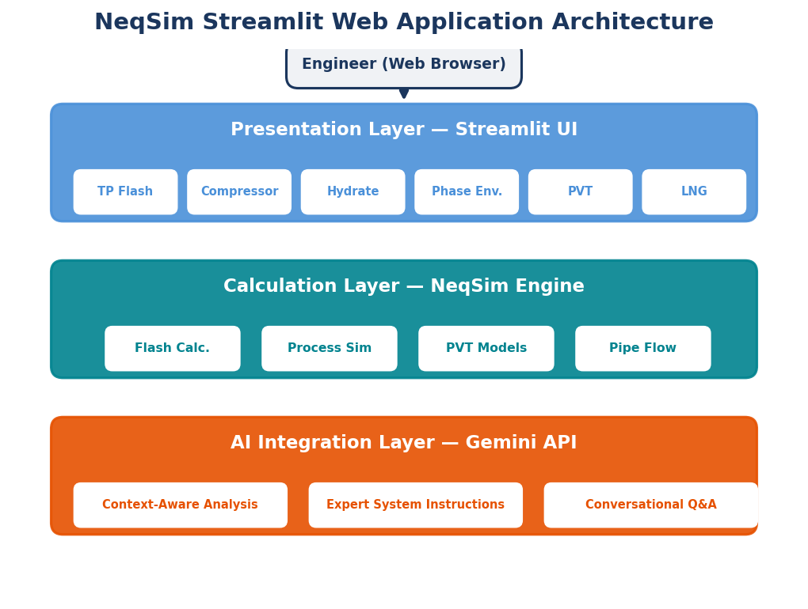
Engineering Task Solvers
The platform includes more than a dozen specialized engineering calculators, each addressing a common task in oil and gas operations. Three representative examples illustrate the pattern.
TP Flash Calculator
The simplest and most fundamental page performs thermodynamic phase equilibrium (TP flash) calculations. The user specifies a fluid composition — either by editing a table of component names and molar fractions or by uploading a CSV file — and provides one or more temperature-pressure pairs. The page calls NeqSim's flash routines and displays the resulting phase compositions, densities, and properties in a tabular format:
import streamlit as st
from neqsim.thermo import fluid_df, TPflash, dataFrame
st.title('TP Flash')
# Fluid composition from editable table
neqsim_fluid = fluid_df(
st.edited_df, lastIsPlusFraction=isplusfluid
).autoSelectModel()
# Flash at each user-specified (T, P) condition
for idx, row in edited_tp_data.iterrows():
neqsim_fluid.setPressure(row['Pressure (bara)'], 'bara')
neqsim_fluid.setTemperature(row['Temperature (C)'], 'C')
TPflash(neqsim_fluid)
results.append(dataFrame(neqsim_fluid))
The autoSelectModel() method is a key design choice: it automatically selects the appropriate equation of state based on the fluid composition — CPA for fluids containing polar components (water, methanol, MEG), SRK or PR for non-polar hydrocarbons. This shields the user from EOS selection decisions while still allowing override for expert users.
Compressor Performance Calculator
The most sophisticated page on the platform is the compressor performance calculator, which demonstrates how a Streamlit application can match the functionality of dedicated commercial tools. The page accepts measured operating data (inlet/outlet pressures, temperatures, flow rates, and rotational speeds), performs rigorous thermodynamic calculations using NeqSim's compressor model, and produces polytropic efficiency, polytropic head, isentropic efficiency, and shaft power for each operating point.
The implementation follows a structured pattern:
# Create inlet fluid with selected EOS
inlet_fluid = fluid(get_selected_eos_model())
for comp_name, comp_moles in fluid_composition.items():
inlet_fluid.addComponent(comp_name, float(comp_moles))
inlet_fluid.setMixingRule('classic')
# Create compressor and solve for efficiency
compressor = jneqsim.process.equipment.compressor.Compressor(
"compressor", inlet_stream
)
compressor.setOutletPressure(float(p_out), "bara")
compressor.setUsePolytropicCalc(True)
compressor.setPolytropicMethod("detailed")
compressor.setNumberOfCompressorCalcSteps(10)
compressor.setOutTemperature(t_out_K)
compressor.run()
eta_poly = compressor.getPolytropicEfficiency()
polytropic_head = compressor.getPolytropicFluidHead()
The page supports three EOS models (GERG-2008, Peng-Robinson, SRK), two calculation methods (Schultz analytical and NeqSim detailed multi-step integration), manufacturer curve comparison with deviation analysis, gas composition correction using Mach number similarity (Khader method), and polynomial curve fitting from measured data using affinity law normalization. Results are exportable as Excel files with multiple sheets (summary results, input data, fluid composition, manufacturer curves, and detailed inlet/outlet properties for each operating point).
Additional Calculation Pages
The platform includes calculators for:
- Gas hydrate prediction — hydrate formation temperature and pressure curves with inhibitor dosing (MEG, methanol)
- Phase envelope generation — cricondenbar, cricondentherm, and bubble/dew point curves
- Water dew point calculation — moisture content and water condensation risk
- PVT simulations — constant mass expansion, constant volume depletion, and separator test modeling
- LNG ageing — composition changes and boil-off gas properties during LNG storage and transport
- GERG-2008 properties — high-accuracy thermodynamic properties for natural gas per ISO 20765
- Hydrogen properties — density, viscosity, and compressibility for hydrogen systems
- Emission calculations — CO2 equivalent emissions from combustion sources
Each page follows the same structural pattern: sidebar for fluid/model selection, main panel for data input and results display, expandable documentation sections with equations and references, and optional AI-powered analysis.
Process Chat — Conversational Process Simulation
The Process Chat page (https://neqsim.streamlit.app/Process\_Chat) is the platform's most ambitious feature: a full conversational interface for building, interrogating, and modifying NeqSim process models through natural language. Unlike the individual calculator pages that address specific tasks, Process Chat provides an open-ended environment where an engineer can construct an entire process flowsheet, run what-if scenarios, perform risk analysis, generate compressor performance maps, run dynamic simulations, and export results — all through a chat interface backed by Gemini and NeqSim.
The architecture comprises three layers of increasing capability:
Model management layer. The sidebar provides three entry points: upload an existing .neqsim process model file, upload a DEXPI P\&ID XML file for automatic topology extraction, or click "Start New Process" to build from scratch. When a DEXPI P\&ID is uploaded, the system parses the XML to extract equipment tags, piping connectivity, and instrumentation, then attempts to auto-generate a running NeqSim ProcessSystem from the topology. A default fluid composition is assigned based on piping fluid codes, with the user able to override via chat (e.g., "rebuild with fluid: methane 0.9, ethane 0.05, propane 0.03, CO2 0.02").
Chat session layer. The ProcessChatSession class mediates between the Streamlit UI and a Gemini model. Each user message is sent to Gemini along with the current process model state — unit operations, stream conditions, and previous conversation history. The Gemini model generates both a natural-language response and, when appropriate, structured result objects (scenario comparisons, optimization results, risk matrices, dynamic time-series, compressor charts, emissions inventories) that are rendered inline with dedicated visualization functions:
from process_chat.chat_tools import ProcessChatSession
session = ProcessChatSession(
model=process_model,
api_key=api_key_val,
ai_model="gemini-2.0-flash",
)
response = session.chat(user_input)
# Retrieve structured results for inline rendering
comparison = session.get_last_comparison()
optimization = session.get_last_optimization()
risk_analysis = session.get_last_risk_analysis()
chart = session.get_last_chart()
emissions = session.get_last_emissions()
dynamic = session.get_last_dynamic()
Rich result rendering layer. Over twenty specialized rendering functions handle the visual presentation of structured results. A what-if scenario comparison renders as a table with KPI deltas. A risk analysis renders as a color-coded 5×5 risk matrix with Monte Carlo availability statistics and equipment criticality rankings. A compressor chart renders as an interactive Plotly performance map with speed curves, surge line, stonewall boundary, and the current operating point. A dynamic simulation renders as multi-axis time-series plots with variable selectors. Each renderer is invoked only when its result type is present, so the chat interface adapts dynamically to whatever analysis the user requests.
The range of capabilities accessible through natural language is remarkable. With a loaded process model, the engineer can ask:
- "What if we increase the export pressure by 10 bara?" — runs a scenario comparison and displays KPI changes
- "Find maximum production for this process" — runs a binary-search optimization over feed flow rate, respecting equipment utilization constraints
- "Show the risk matrix for this process" — generates OREDA-based failure rates, Monte Carlo availability simulation, and criticality ranking
- "Run a blowdown simulation on the separator" — executes a transient depressurization with time-series output
- "Sweep the inlet temperature from 20 to 60°C" — runs a parametric sensitivity with Plotly charts
- "Calculate the CO₂ emissions for this process" — produces a source-by-source emissions inventory with intensity metrics
- "Run pinch analysis / heat integration study" — generates composite curves, minimum utility targets, and heat recovery suggestions
- "Size the relief valves for all vessels" — sizes PSVs per API 520/521 with controlling scenario identification
- "Run a CME PVT experiment on the feed stream" — executes constant mass expansion with relative volume and saturation pressure
- "Generate operator training upset scenarios" — creates failure scenarios with impacts, recovery actions, and quiz questions
- "What is the weather at Stavanger? Impact on coolers?" — fetches live weather data and assesses air cooler capacity derating
The process model is mutable: scenario results propagate back to the model state, and the session tracks changes so that subsequent questions operate on the updated model. The sidebar provides download buttons for the generated Python script (fully reproducible NeqSim code) and the .neqsim model file, enabling engineers to move between the conversational interface and traditional scripting as needed.
This represents the "lightweight agentic" deployment model — the LLM reasons about what NeqSim calculations to run, generates the code or structured calls, and presents the results with domain-expert interpretation. It does not have the full autonomy of the VS Code coding agent described in Chapters 3–6, but it makes a substantial fraction of NeqSim's capabilities accessible to engineers who do not write code.
Task Solver — From Question to Engineering Report
The Task Solver page (https://neqsim.streamlit.app/Task\_Solver) brings the three-step engineering task workflow described in Chapter 6 to the browser. Where Process Chat provides an open-ended conversational environment, Task Solver is structured and goal-directed: the engineer describes an engineering question, and the system produces a complete report with validated results, reproducible Python code, and downloadable deliverables.
The workflow mirrors the task-solving framework from Chapter 6, compressed into a single page interaction:
Step 1 — Scope and Classification. The user describes their task in a free-text area (e.g., "Calculate the JT cooling for a rich gas expanding from 200 to 50 bara") or selects from pre-built task templates. Optional inputs include custom fluid composition via an editable data table, override conditions (temperature and pressure), and uploaded reference documents (PDF, CSV, Excel). A report depth selector (Quick / Standard / Comprehensive) controls how thorough the analysis should be. The system sends the task description to Gemini, which classifies it by type (Property, Process, PVT, Standards, Phase Envelope, Flow Assurance, or Multi-Step), selects the appropriate equation of state, and generates a structured execution plan:
from process_chat.task_solver import classify_and_scope
spec = classify_and_scope(
api_key=api_key,
user_request=task_input.strip(),
user_composition=user_comp,
uploaded_docs=uploaded_text,
ai_model="gemini-2.0-flash",
)
# spec contains: task_type, complexity, eos_model,
# conditions, steps (list of planned calculations)
Step 2 — Iterative Code Generation and Execution. For each step in the plan, the system calls generate_and_run_code(), which implements an agentic code-generation loop: Gemini generates NeqSim Python code for the step, the code is executed in a sandboxed environment, and if execution fails, the error message is fed back to Gemini for automatic correction. This retry loop continues for up to three attempts per step. A progress bar and step-by-step status updates keep the user informed during what may be a five-to-ten minute execution:
from process_chat.task_solver import generate_and_run_code
task_step = generate_and_run_code(
api_key=api_key,
spec=spec,
step_info=step_info,
step_number=step_num,
ai_model="gemini-2.0-flash",
progress_cb=progress_callback,
)
# task_step.status: "done" or "error"
# task_step.code: generated Python code
# task_step.result_data: extracted numerical results
# task_step.attempts: number of retries needed
Step 3 — Report Generation. After all steps complete, the system generates a structured engineering report. Two functions collaborate: _generate_report_text() sends all results to Gemini with instructions to produce a professional Markdown report with sections for methodology, results, validation, and conclusions; _generate_html_report() wraps the Markdown in a styled HTML template. The user can download the HTML report, results.json, task_spec.json, and the complete generated Python code — all the artifacts needed for reproducibility and audit.
The page also supports iterative refinement. After an initial report is generated, a follow-up text area allows the engineer to request modifications: "Also calculate properties at 200 bara", "Add MEG inhibition analysis", "Compare with Peng-Robinson EOS". The follow_up_task() function receives the previous results as context, generates additional code, merges the new results, and produces an updated report. An iteration counter tracks how many refinement cycles have been performed.
Auto-detected result types receive specialized rendering: fluid property tables are displayed when density, Z-factor, or heat capacity keys are found in the results; gas quality tables appear when GCV or Wobbe index values are present; and Plotly charts are auto-generated from sweep or multi-point data using the _build_plotly_charts() function.
The Task Solver demonstrates a key principle of this book: the same engineering workflow can be delivered through different interfaces without changing the underlying physics. The three-step workflow (Scope → Analysis → Report) is the same whether executed by a VS Code coding agent creating Jupyter notebooks (Chapter 6), by the MCP server responding to API calls (Chapter 7), or by a Streamlit web application serving browser-based engineers. The physics engine — NeqSim — is the constant; the interface is the variable.
AI Integration Architecture
Both Process Chat and Task Solver share a common AI integration architecture based on Google's Gemini models. The implementation uses a simple but effective pattern:
import google.generativeai as genai
genai.configure(api_key=api_key)
model = genai.GenerativeModel(
'gemini-2.0-flash',
system_instruction=domain_expert_prompt,
)
response = model.generate_content(task_prompt)
AI features are opt-in: users provide their own Gemini API key (via sidebar input or Streamlit secrets). The gemini-2.0-flash model is used by default for its balance of speed and capability, though the model selection is configurable. System instructions inject domain expertise — the compressor performance page uses an instruction grounded in ASME PTC 10, ISO 5389, API 617, and other standards; the Task Solver uses the NeqSim Task Solving Guide as its instruction set.
This architecture keeps the AI cost low (Gemini Flash is significantly cheaper than frontier models), the latency acceptable for interactive use (1-3 seconds per call), and the integration simple enough for a small team to maintain.
Patterns for Building Engineering Web Applications
The NeqSim Streamlit platform illustrates several reusable patterns for deploying thermodynamic and process simulation capabilities as web applications:
Session state management: Streamlit's st.session_state stores user inputs (fluid compositions, operating data, calculation results, manufacturer curves) across page interactions. This enables complex multi-step workflows — entering data, calculating, comparing with curves, generating corrected curves, and exporting results — without losing state between interactions.
Progressive disclosure: Expandable sections (st.expander) hide complexity by default. A new user sees only the essential inputs and results; an advanced user can expand documentation sections for detailed equations, expand curve management sections to upload manufacturer data, or expand AI analysis for deeper insights.
Unit flexibility: A systematic approach to unit conversion — storing raw values in session state with selected units and converting to standard units (bara, °C, kg/s) before calculation — allows engineers to work in their preferred unit system while NeqSim operates in its native units.
Dual data input: Every page supports both manual table editing (via st.data_editor) and file upload (CSV/Excel via st.file_uploader), accommodating both quick one-off calculations and batch processing of operational data.
Defensive calculation: Long-running calculations include progress bars, per-point timeouts, and total time limits to prevent unresponsive pages. Invalid inputs (negative pressures, efficiencies above 100%) are detected and reported with actionable warnings rather than cryptic error messages.
These patterns, combined with Streamlit's zero-installation deployment model, make it practical for small teams to build and maintain engineering web applications that serve hundreds of users — a significant democratization of simulation capability that complements the deeper, agent-driven workflows described elsewhere in this book.
12.7 Enterprise Deployment Patterns
The Adoption Trajectory
The adoption of agentic engineering within organizations follows a predictable trajectory from individual experimentation to enterprise deployment:
Stage 1 — Individual engineer: A single engineer uses the agentic system for personal productivity — quick property lookups, sensitivity studies, report generation. The system runs on the engineer's workstation, using their own LLM API key. No governance, no shared resources, minimal risk.
Stage 2 — Study team: A project team adopts the system for a specific study, sharing a common task repository, fluid models, and results. Coordination requires shared conventions (naming, units, file organization) but can be managed informally. The task-solving workflow described in Chapter 6 was designed for this stage.
Stage 3 — Department: An engineering department deploys the system as a shared resource, with managed LLM access, a curated library of validated fluid models and process templates, and departmental standards for quality assurance. A department-level task log and skill library provide institutional knowledge that persists across projects and staff turnover.
Stage 4 — Enterprise: The system is deployed across the organization, with centralized governance, cost management, access control, and audit capabilities. The task log becomes a corporate knowledge base, the validated models become corporate assets, and the quality management system includes AI-assisted calculations alongside manual calculations and commercial software.
Governance Considerations
Enterprise deployment requires attention to several governance dimensions:
Cost management: LLM API calls are not free, and Monte Carlo simulations that run thousands of iterations can generate significant API costs. Organizations need cost monitoring, budgeting tools, and optimization strategies (e.g., using smaller models for routine tasks and larger models for complex reasoning).
Access control: Not all engineers should have access to all models or all data. Role-based access control, integrated with corporate identity management, is needed to ensure that proprietary fluid compositions, reservoir data, and economic assumptions are accessible only to authorized users.
Intellectual property: Results produced by the agentic system may contain proprietary information, confidential business data, or data subject to joint venture agreements. Data governance policies must address how agent outputs are stored, shared, and protected.
Quality management: ISO 9001-compatible quality management procedures should cover the agentic engineering workflow, including document control for task specifications and reports, verification and validation requirements, corrective action procedures when errors are detected, and management review of system performance.
12.8 The Human-AI Interface
Amplification, Not Replacement
The most important insight from two years of practical experience with agentic engineering is that the technology amplifies human engineering capability rather than replacing it. The agent excels at tasks that require speed, consistency, and breadth: performing thermodynamic calculations across a range of conditions, checking results against standards, running sensitivity analyses, generating figures with consistent formatting, and documenting calculations with complete traceability. The human excels at tasks that require judgment, creativity, and context: defining the right problem to solve, choosing between competing design philosophies, assessing whether results are physically reasonable, and making decisions that balance technical, economic, and organizational factors.
The Shifting Role of the Engineer
As agentic systems handle more of the computational burden, the engineer's role shifts along three axes:
From performing calculations to defining problems: The most valuable engineering skill becomes the ability to articulate what needs to be calculated, what assumptions are appropriate, and what acceptance criteria should apply. A well-defined problem statement — specifying the fluid composition, operating conditions, design standards, and validation requirements — is sufficient for the agent to produce a complete analysis. A poorly defined problem statement produces poor results regardless of the agent's computational capability. Problem definition is a deeply human skill that draws on experience, physical intuition, and contextual knowledge that LLMs approximate but do not possess.
From executing workflows to judging results: Engineers spend less time running simulations and more time evaluating whether the results are correct, complete, and relevant. This requires domain expertise — understanding of thermodynamic behavior, process dynamics, material limitations, and operational realities — that increases rather than decreases in importance. The agent can produce a hydrate curve, but the engineer must judge whether the curve is physically reasonable for the given composition, whether the safety margin is adequate for the specific application, and whether any operational factors (e.g., partial MEG regeneration, commingled production from different reservoirs) would modify the recommendation.
From documenting results to making decisions: When documentation is automated — calculations traced, figures generated, reports formatted — the engineer's attention shifts to the decisions that the calculations inform. Should we proceed with this development concept? Is the risk acceptable? Should we invest in additional data acquisition or proceed with current uncertainties? These decisions require integrating technical results with business context, regulatory requirements, and organizational strategy — a synthesis that remains firmly in the human domain.
Domain Expertise Becomes More Important
A counterintuitive consequence of agentic engineering is that domain expertise becomes more important, not less. When calculations are easy to produce, the bottleneck shifts to the ability to request the right calculations, interpret the results correctly, and detect when the agent has made an error. An engineer with deep knowledge of multiphase flow will immediately notice if a pipeline simulation produces an unrealistic liquid holdup. An engineer without that knowledge will accept the result at face value.
This has implications for engineering education and professional development. The curriculum need not spend as much time on the mechanics of running software tools — students will use agents for that — but it must spend more time on physical intuition, engineering judgment, validation methodology, and decision-making under uncertainty. Understanding why a calculation is performed, what its limitations are, and how to check its results becomes more important than knowing how to click the right buttons in a software interface [7].
12.9 Open Challenges
Context Window Limits
Current LLMs have context windows of 100,000–200,000 tokens, which limits the amount of information the agent can hold in active memory. A complex multi-area platform model might produce hundreds of pages of results, calculation logs, and figure descriptions. When the context fills, the agent loses track of earlier work, leading to inconsistencies or repeated calculations. The progress checkpoint system described in Chapter 6 (writing milestone summaries to disk) is a workaround, but a fundamental solution requires either much larger context windows (which are coming but expensive) or more intelligent memory management architectures.
Conflicting Standards and Ambiguous Specifications
Real engineering projects often involve ambiguity: two applicable standards that give different answers for the same calculation, design specifications that are incomplete or internally inconsistent, or situations that fall outside the scope of any existing standard. Human engineers navigate these ambiguities through experience, consultation with colleagues, and engineering judgment. Current agents struggle with ambiguity — they tend to pick one standard without flagging the conflict, or to ask for clarification when proceeding with a reasonable assumption would be more productive. Improving the agent's ability to handle ambiguity while maintaining transparency about its choices is an active area of development.
Long-Running Simulations
Some engineering calculations — dynamic simulation of a multi-day shutdown sequence, Monte Carlo with full process simulation in the loop, or optimization of a complex process with many degrees of freedom — can run for hours or days. Current agent architectures are designed for interactive operation with response times of seconds to minutes. Long-running simulations require a different execution model: the agent submits the job, monitors its progress, and returns to interpret the results when they are available. The neqsim_runner supervised execution system described in Chapter 6 provides this capability, but the seamless integration of long-running jobs into the interactive agent workflow remains an engineering challenge.
Cost of LLM API Calls
Each agent interaction involves one or more calls to an LLM API, and these calls are not free. A typical engineering task might involve 50–200 LLM calls, costing $1–10 at current rates. This is trivial compared to engineering labor costs, but it becomes significant for Monte Carlo analyses where each iteration requires agent reasoning. A 1,000-iteration Monte Carlo with 5 LLM calls per iteration costs $50–500 — still modest, but it motivates strategies for minimizing agent reasoning within loops (e.g., generating the calculation code once and then executing it parametrically without further LLM involvement) [20].
Reproducibility Across LLM Versions
LLMs are updated frequently, and different versions may produce different outputs for the same prompt. This creates a reproducibility challenge: a flow assurance study performed with GPT-4o in January may not produce identical results when re-run with GPT-4o-mini in June, even if the underlying physics calculations are deterministic. The non-deterministic element is the agent's reasoning — its choice of approach, its interpretation of results, its parameter selections for edge cases. Mitigating strategies include pinning LLM versions for certified calculations, using deterministic calculation templates that minimize the role of LLM reasoning, and comprehensive regression testing that catches deviations regardless of their source.
12.10 A Vision: The Five-Minute Engineering Report
The Aspiration
Imagine the following scenario. A subsurface team discovers a gas accumulation at 3,200 m depth in the Norwegian Sea. The exploration geologist types a paragraph:
> "We have discovered approximately 15 GSm3 of lean gas (90% methane, 5% ethane, 2% propane, 1% CO2, 2% nitrogen) at 350 bara and 120°C. Water depth is 300 m. The nearest host platform is Nansen, 65 km to the south, with available gas processing capacity of 5 MSm3/day. Please evaluate a subsea tieback development concept with expected plateau production of 4 MSm3/day."
Within five minutes, the system produces a 50-page report containing:
- Fluid characterization with PVT properties, phase envelope, and hydrate curve
- Production profile from plateau through 20-year field life using decline curve analysis
- Pipeline sizing (diameter, wall thickness per DNV-OS-F101) with pressure and temperature profiles
- Flow assurance assessment (hydrate subcooling, MEG requirements, wax screening, corrosion rate)
- Subsea equipment specification (tree, manifold, controls umbilical)
- Topside process modifications required at Nansen platform
- CAPEX and OPEX estimates with breakdown by category
- Discounted cash flow economics under Norwegian fiscal terms with P10/P50/P90 NPV
- Risk register with 10 identified risks across market, technical, HSE, and regulatory categories
- Compliance matrix identifying applicable standards for each design element
Every calculation is traced, every assumption documented, every result validated against an appropriate benchmark.
How Close Are We?
As of 2026, this vision is approximately 60–70% realized. The individual calculations — fluid properties, hydrate curves, pipeline hydraulics, wall thickness, economics — are all demonstrated in the preceding chapters. The multi-agent composition for comprehensive studies works, as shown in the UltimaThule case study. The structured output (results.json, engineering reports) meets professional standards.
What remains to be developed:
- End-to-end automation: The current system requires human guidance at key decision points (EOS selection, concept screening criteria, economic assumptions). Fully autonomous execution requires encoding more of this engineering judgment into the agent's skills.
- Speed: The five-minute target requires parallel execution of independent tasks and caching of common calculations. Current execution is predominantly sequential, with total times measured in hours rather than minutes for comprehensive studies.
- Reliability: For the system to be trusted without human review of each intermediate step, it must have a demonstrated error rate comparable to experienced engineers — perhaps better, given that the agent's work is fully traceable. Current error rates, while low, have not been formally characterized.
- Breadth: Some specialized calculations (structural analysis, geotechnical design, environmental impact assessment) are outside NeqSim's scope and would require integration with additional physics engines as discussed in Section 12.4.
The path from current capability to the five-minute engineering report is not blocked by any fundamental obstacle. It requires incremental improvements in agent reasoning, broader tool integration, faster execution, and — most importantly — continued accumulation of validated engineering knowledge through the development flywheel. The question is not if, but when.
12.11 Closing Thoughts
This book has presented a vision of engineering practice transformed by the combination of rigorous physics-based simulation and intelligent AI orchestration. The technology is real — not hypothetical or aspirational, but deployed and producing results that meet professional engineering standards. The forty-plus case studies from the Norwegian Continental Shelf demonstrate that agentic engineering can address the full breadth of oil and gas engineering challenges, from single-property queries to multi-discipline field development studies.
But technology alone does not transform practice. The patterns described in this book — the structured task-solving workflow, the validation-first philosophy, the development flywheel, the human-AI collaboration model — are at least as important as the underlying software. They represent a methodology for engineering with AI that respects the domain knowledge, safety requirements, and professional standards that define our industry.
The engineers who will benefit most from agentic systems are not those who know the most about AI, but those who know the most about engineering. The agent handles the computational mechanics. The engineer provides the judgment, the physical intuition, and the accountability. Together, they can tackle problems of a scale and complexity that neither could address alone.
The future of engineering is not artificial intelligence replacing human intelligence. It is artificial intelligence amplifying human intelligence — extending the reach of engineering expertise to more problems, more alternatives, more thorough analysis, and better decisions. The tools are ready. The methodology is proven. The rest is practice.
Exercises
- Exercise 12.1: Design an autonomous digital twin update loop for a simple process unit — a three-phase separator. Specify the measurements you would read from the plant historian, the simulation variables you would compare them against, the parameters you would adjust during calibration, and the discrepancy thresholds that would trigger an anomaly alert.
- Exercise 12.2: Estimate the LLM API cost for a Monte Carlo uncertainty analysis with 500 iterations, where each iteration requires a full NeqSim process simulation orchestrated by an agent. Propose a strategy to reduce this cost by 90% while maintaining the statistical quality of the results.
- Exercise 12.3: Draft a quality management procedure (in the style of ISO 9001) for AI-assisted engineering calculations. The procedure should cover: scope of applicability, roles and responsibilities, calculation execution requirements, verification and validation, documentation, corrective action, and management review.
- Exercise 12.4: Two applicable standards give different answers for the minimum wall thickness of a gas pipeline: DNV-OS-F101 calculates 18.5 mm and ASME B31.8 calculates 16.8 mm. Describe how an agentic system should handle this conflict. What information should it present to the engineer? What should it recommend, and why?
- Exercise 12.5: Write a one-paragraph problem statement (like the one in Section 12.10) for an engineering problem in your area of expertise. Identify which agents would be needed to produce a comprehensive report, what validation data you would require, and what aspects of the problem would still require human judgment even with a fully developed agentic system.
Glossary
Agentic Engineering — The practice of using AI agents equipped with physics engines and domain knowledge to autonomously perform engineering calculations, generate reports, and solve multi-step problems.
Agent — A specialist AI system configured with domain-specific instructions, tool access, and behavioral rules to perform a category of engineering tasks.
Binary Interaction Parameter (BIP) — A fitted parameter $k_{ij}$ that corrects the geometric mean combining rule for the cross-energy parameter in cubic equations of state.
Chain-of-Thought (CoT) — A prompting technique where the AI model reasons step-by-step before producing a final answer, improving accuracy on complex tasks.
CPA (Cubic Plus Association) — An equation of state that extends the SRK cubic EOS with Wertheim's association term to handle hydrogen-bonding fluids (water, alcohols, glycols).
Dense Phase — A fluid state above the critical temperature and pressure where gas and liquid phases become indistinguishable. Important for CO$_2$ transport.
Digital Twin — A continuously updated computational model of a physical asset (platform, well, pipeline) fed by real-time plant data.
Equation of State (EOS) — A mathematical relation between pressure, volume, and temperature that describes the thermodynamic state of a fluid.
Flash Calculation — The computation of phase compositions and amounts at thermodynamic equilibrium for a given feed at specified conditions (e.g., T, P).
Flow Assurance — The engineering discipline concerned with ensuring safe and uninterrupted fluid flow in pipelines and production systems. Covers hydrates, wax, asphaltene, corrosion, and slugging.
Fugacity — An effective partial pressure that accounts for non-ideal behavior. Phases are in equilibrium when component fugacities are equal across all phases.
GERG-2008 — A multi-parameter equation of state for natural gas mixtures, based on explicit Helmholtz energy. The reference standard for custody transfer gas properties.
Hallucination — When an AI model generates plausible-sounding but factually incorrect information. Particularly dangerous for numerical engineering calculations.
Hydrate — Ice-like crystalline structures formed by water and small gas molecules (methane, ethane, CO$_2$) at high pressure and low temperature. A major flow assurance threat.
initProperties() — A critical NeqSim method that must be called after any flash calculation to initialize both thermodynamic and transport properties (viscosity, thermal conductivity, density).
LLM (Large Language Model) — A neural network trained on vast text corpora that can understand and generate natural language. Examples: GPT-4, Claude, Gemini.
MCP (Model Context Protocol) — An open standard by Anthropic for connecting AI models to external tools and data sources via JSON-RPC.
MEG (Mono-Ethylene Glycol) — A chemical injected into pipelines to inhibit hydrate formation by depressing the hydrate equilibrium temperature.
Mixing Rule — The prescription for combining pure-component EOS parameters into mixture parameters.
Monte Carlo Simulation — A computational method that uses repeated random sampling to estimate the statistical distribution of an output quantity given uncertain inputs.
NeqSim — Non-Equilibrium Simulator. An open-source Java toolkit for thermodynamic calculations and process simulation.
NCS (Norwegian Continental Shelf) — The offshore petroleum province of Norway, one of the most technically advanced in the world.
P10/P50/P90 — Probability percentiles from uncertainty analysis. P50 is the median outcome; P10 and P90 represent the 10th and 90th percentile (optimistic and pessimistic scenarios).
Peng-Robinson (PR) — A cubic equation of state widely used for hydrocarbon systems. More accurate than SRK for liquid density.
ProcessSystem — The NeqSim class that represents a complete process flowsheet. Equipment is added in order and connected automatically.
ReAct — Reasoning + Acting. A prompting pattern where the AI agent alternates between reasoning about the next step and taking an action (tool call).
results.json — The structured data file produced by the task-solving workflow containing key results, validation, uncertainty analysis, risk evaluation, and figure metadata.
Skill — A markdown file loaded into an agent's context on demand, containing domain-specific knowledge: API patterns, code templates, rules, and reference data.
SRK (Soave-Redlich-Kwong) — A cubic equation of state that is the default workhorse for gas-phase calculations in oil and gas applications.
Task-Solving Workflow — The three-step structured workflow (Scope & Research → Analysis & Evaluation → Report) that ensures reproducible, validated, documented engineering analyses.
TPflash — A flash calculation at specified temperature and pressure. The most common flash type.
Wobbe Index — The ratio of gross calorific value to the square root of relative density. Used to assess interchangeability of fuel gases.
References
- Soave, "Equilibrium constants from a modified {Redlich--Kwong," Chemical Engineering Science, vol. 27, pp. 1197--1203, 1972.
- Peng and Robinson, "A new two-constant equation of state," Industrial & Engineering Chemistry Fundamentals, vol. 15, pp. 59--64, 1976.
- Michelsen, "The isothermal flash problem. {Part I," Fluid Phase Equilibria, vol. 9, pp. 1--19, 1982.
- Michelsen, "The isothermal flash problem. {Part II," Fluid Phase Equilibria, vol. 9, pp. 21--40, 1982.
- Vaswani and others, "Attention is all you need," Advances in Neural Information Processing Systems, vol. 30, 2017.
- Brown and others, "{Language models are few-shot learners," Advances in Neural Information Processing Systems, vol. 33, pp. 1877--1901, 2020.
- Bubeck, "Sparks of Artificial General Intelligence: Early Experiments with {GPT-4," arXiv preprint arXiv:2303.12712, 2023.
- Rachford and Rice, "Procedure for use of electronic digital computers in calculating flash vaporization hydrocarbon equilibrium," Journal of Petroleum Technology, vol. 4, pp. 19, 1952.
- Schick and others, "Toolformer: Language Models Can Teach Themselves to Use Tools," Advances in Neural Information Processing Systems, vol. 36, 2023.
- Yao and others, "{ReAct," International Conference on Learning Representations (ICLR), 2023.
- Solbraa, "{NeqSim," 2024.
- Solbraa, "Equilibrium and Non-Equilibrium Thermodynamics of Natural Gas Processing," PhD Thesis, Norwegian University of Science and Technology (NTNU), 2002.
- Kontogeorgis and others, "An equation of state for associating fluids," Industrial & Engineering Chemistry Research, vol. 35, pp. 4310--4318, 1996.
- Kunz and Wagner, "The {GERG-2008," Journal of Chemical & Engineering Data, vol. 57, pp. 3032--3091, 2012.
- Unknown, "{ISO," 2016.
- Prausnitz et al., "Molecular Thermodynamics of Fluid-Phase Equilibria," 1999.
- Michelsen and Mollerup, "Thermodynamic Models: Fundamentals & Computational Aspects," 2007.
- Wooldridge, "An Introduction to MultiAgent Systems," 2009.
- Wei and others, "Chain-of-thought prompting elicits reasoning in large language models," Advances in Neural Information Processing Systems, vol. 35, 2022.
- Wang and others, "A Survey on Large Language Model based Autonomous Agents," Frontiers of Computer Science, vol. 18, 2024.
- Cameron et al., "Oil and gas digital twins after twenty years," Modeling, Identification and Control, vol. 40, pp. 163--173, 2019.
- Rubinstein and Kroese, "Simulation and the {Monte Carlo," 2017.
- Unknown, "{ISO," 2018.
- Anthropic, "{Model Context Protocol," 2024.
- Mokhatab et al., "Handbook of Natural Gas Transmission and Processing," 2015.
- Gas Processors Suppliers Association, "{GPSA," 2012.
- Smith et al., "Introduction to Chemical Engineering Thermodynamics," 2005.
- Sloan and Koh, "Clathrate Hydrates of Natural Gases," 2008.
- Beggs and Brill, "A study of two-phase flow in inclined pipes," Journal of Petroleum Technology, vol. 25, pp. 607--617, 1973.
- Unknown, "{DNV-OS-F101," 2021.
- Unknown, "{NORSOK," 2018.
- Grieves and Vickers, "Digital Twin: Mitigating Unpredictable, Undesirable Emergent Behavior in Complex Systems," 2017.